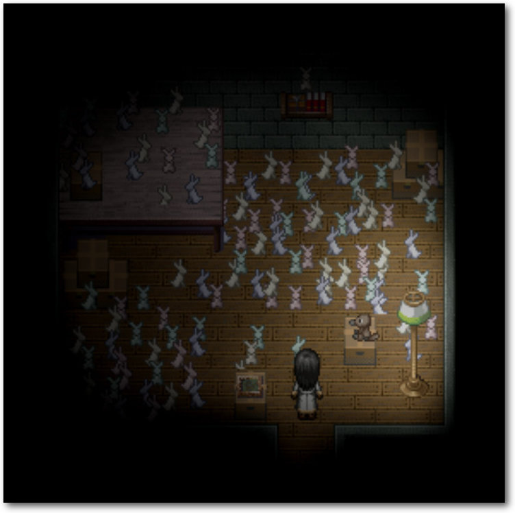

freiesMagazin März 2015
(ISSN 1867-7991)
Topthemen dieser Ausgabe
Bildbearbeitung mit GIMP – Teil 3: Das Wichtigste zu den EbenenMit den Ebenen stellt GIMP eines der wichtigsten Elemente für eine professionelle Bildbearbeitung zur Verfügung. Ebenen sind bei GIMP Container für separate Objekte, typischerweise kleine Bildteile aus dem aktuellen oder einem anderen Bild. Der dritte und letzte Teil der GIMP-Reihe zeigt, wie man mit Ebenen umgeht. (weiterlesen)
Privacy Guide – Anleitung zur Wahrung der Privatsphäre im Internet
„Die gute Nachricht: Wir wissen jetzt, das wir nicht paranoid sind! … die schlechte Nachricht: Wir werden alle überwacht. Jetzt und überall.“ – Angesichts zunehmender Überwachung des Internets und Kooperationen von Firmen mit Geheimdiensten ist es an der Zeit, die eigene Privatsphäre selbst zu schützen. Im Artikel wird beschrieben, welche Schritte notwendig sind, um das Recht auf Privatsphäre auch im Internet zu wahren. (weiterlesen)
To The Moon – Reise zum Mond
Die meisten Menschen haben Träume, die sie in ihrem Leben verwirklichen wollen. Als Kind möchte man Astronaut, Feuerwehrmann oder Superheld werden. Je nachdem, wie man die Jugend verlebt hat, festigt sich dieser Wunsch oder man schlägt eine ganze andere Richtung ein. Manchmal spielt das Leben aber anders als man es gerne hätte und so bedauert man auf dem Sterbebett, was man alles nicht erreicht hat. Wäre es nicht schön, wenn man zurückreisen und sein Leben ändern könnte, um seine Träume zu verwirklichen? (weiterlesen)
Zum Inhaltsverzeichnis
Inhalt
Linux allgemein
Batterien enthalten: Linux Mint Debian Edition (LMDE)
Der Februar im Kernelrückblick
Anleitungen
Bildbearbeitung mit GIMP – Teil 3: Das Wichtigste zu den Ebenen
Privacy Guide – Anleitung zur Wahrung der Privatsphäre im Internet
Dynamische Dashboards mit AngularJS, D3.js und OpenCPU
Spacewalk – Teil 5: Troubleshooting und Zukunft
Software
To The Moon – Reise zum Mond
ShareLaTeX
Community
Rezension: Ubuntu 14.04 für Ein- und Umsteiger
Rezension: Roboter bauen mit Arduino
Rezension: Raspberry Pi für Kids
Magazin
Editorial
Leserbriefe
Veranstaltungen
Vorschau
Konventionen
Impressum
Zum Inhaltsverzeichnis
Editorial
Das erste Smartphone mit Ubuntu
Im Februar konnten schnelle Käufer das erste Ubuntu-Smartphone kaufen. Das Aquaris E4.5 vom Hersteller BQ ist nämlich nicht im regulären Verkauf, sondern wird nur in zeitlich befristeten Aktionen verkauft [1]. Die ersten Testberichte lesen sich durchaus vielversprechend. Die Hardware des Dual-Sim-Smartphones scheint entsprechend des Verkaufspreises von ca. 170 Euro im Mittelklasse-Bereich zu liegen. Für das Betriebssystem wurde im Vergleich zu den bereits am Markt etablierten Systemen ein neuer Ansatz gewählt. Die sogenannten Scopes stellen Inhalte aus verschiedenen Quellen auf einer Seite dar, sodass der Nutzer verschiedenste Informationen erhält, ohne die jeweilige App extra öffnen zu müssen. Der Scope „Heute“ zeigt zum Beispiel die Termine des Tages, Wetter, Nachrichten, getätigte und erhaltene Anrufe und Nachrichten. Insgesamt scheint das Betriebssystem schon gut zu funktionieren, auch wenn einzelne Testberichte von zahlreichen Abstürzen und Akku-Problemen berichten und einige Funktionen noch sehr langsam arbeiten. Immerhin, der Anfang ist nun gemacht und auf dem Mobile World Congress soll in den nächsten Tagen bereits das nächste Ubuntu-Smartphone vorgestellt werden [2].freiesMagazin hat Geburtstag
Am 18. März feiert freiesMagazin seinen mittlerweile neunten Geburtstag. Seit 2006 veröffentlichen wir regelmäßig Artikel rund um Freie Software, Open Source und Linux. Ein Projekt, das uns viel Spaß macht. Dies gelang zum einen natürlich aufgrund eines guten Teams, das im Hintergrund die Artikel überarbeitet, korrigiert und setzt. Noch viel wichtiger sind für den Fortbestand aber die vielen Autoren, die im Laufe der vergangenen neun Jahre zahlreiche Artikel über die verschiedensten Themen beigetragen haben. Von Anleitungen für Linux-Um- und Einsteiger, Softwarevorstellungen und komplexen Serverkonfigurationsanleitungen haben unsere Autoren ein breites Spektrum abgedeckt. Wenn wir an dieser Stelle einen kleinen Wunsch zum Geburtstag äußern dürfen, dann nur, dass Sie uns weiter so viele erstklassige Artikel für die Veröffentlichung in freiesMagazin zuschicken. Wir wünschen allen Lesern viel Spaß mit der neuen Ausgabe Ihre freiesMagazin-Redaktion Links[1] http://www.bq.com/gb/ubuntu.html
[2] http://www.androidauthority.com/mx4-ubuntu-edition-590053/
Beitrag teilen Beitrag kommentieren
Zum Inhaltsverzeichnis
Batterien enthalten: Linux Mint Debian Edition (LMDE)
von Christian Imhorst Wer Ubuntu nicht mag, der nimmt Linux Mint. Dabei gibt es Mint in zwei Varianten: Die Hauptausgabe, die auf Ubuntu beruht, und eine äußerlich sehr ähnliche zweite Ausgabe, die Debian als Grundlage hat. Wenn man Debian nicht mag, nimmt man dann die Linux Mint Debian Edition? Oder nimmt man sie erst recht, weil man ein gut vorkonfiguriertes Debian in Grün möchte? Oder nimmt man es besser gar nicht, weil LMDE praktisch tot ist? Diese und andere Fragen sollen im Artikel geklärt werden.Linux-Desktop aus einem Guss
Seit 2006 gibt es die Hauptdistribution Linux Mint mit dem Ziel, ein noch leichter zu installierendes und noch besser zu bedienendes Ubuntu-Derivat anzubieten. Etwas später, 2010, kam die Debian Edition dazu. Letztere war zunächst ein Experiment, das aber viel positive Resonanz erhielt und deshalb weiter verfolgt wurde [1]. Im Gegensatz zu Ubuntu und Debian sollen bei Mint freie und unfreie Software gleichberechtigt integriert sein. Dies gilt nicht nur für den Flashplayer von Adobe, sondern auch für proprietäre Multimedia-Codecs, die bei den beiden Distributions-Müttern noch nachträglich installiert werden müssen. Linux Mint dagegen soll gleich mit der Installation gut funktionieren. Damit die vielen verschiedenen Anwendungen reibungslos ineinander greifen, müssen sie eng aufeinander abgestimmt werden. Wo das nicht geht, sollen eigene Zusatztools das Benutzererlebnis eines einheitlichen Desktops ergänzen. Mit diesem Konzept sind die Mint-Entwickler ganz erfolgreich. Immerhin halten sie schon seit 2011 den ersten Platz unter den Linux-Distributionen auf der Seite von Distrowatch [2]. Der Platz ist verdient, da die Linux Mint-Entwickler durch die gelungene Kombination und Integration verschiedenster Software-Komponenten ein stabiles, schnelles und benutzerfreundliches Betriebssystem geschaffen haben. Der Nachteil dieses hohen Grades an Integration ist allerdings die Aktualität der Distribution und einzelner Komponenten. Hier hinkt Mint den Müttern Debian und Ubuntu hinterher.Mit der Softwareverwaltung MintInstall kann man in der riesigen Programmauswahl von Debian stöbern.
Das wird sich in Zukunft noch verschärfen, da Linux Mint nach dem Willen seiner Entwickler seit Mai 2014 nur noch auf den Ubuntu-Versionen aufbaut, die längerfristig unterstützt werden, den sogenannten Long Term Supports (LTS) [3]. Die Aktualität der Distribution wird also zugunsten von Stabilität und besserer Integration ihrer Komponenten geopfert. Dasselbe Schicksal ereilt auch die Debian Edition, die zukünftig auf Debian Stable aufsetzen soll und nicht mehr wie bisher auf Testing [4]. Damit die Distribution nicht ganz so schnell veraltet, haben die Entwickler allerdings versprochen, wesentliche und für Anwender wichtige Desktop-Programme trotzdem hin und wieder zu aktualisieren. Laut Clément Lefebvre, dem Maintainer dieser Linux-Distribution, soll sich Mint Apples Mac OS X als Maßstab für ein Betriebssystem nehmen [5], das wie aus einem Guss wirkt und eine einheitliches Nutzererlebnis bietet. Damit sich diese Wirkung auch unter Linux entfalten kann, wurden die Desktop-Umgebungen Cinnamon und MATE entwickelt. Durch diese beiden hauptsächlich eingesetzten Desktops wird das Erscheinungsbild von Mint und der Debian Edition stark vereinheitlicht. Wer einen anderen Desktop aus dem Repository installiert, muss möglicherweise auf Mint-spezifische Anpassungen verzichten. MATE [6] beruht auf der Desktop-Umgebung Gnome 2, die weniger Ressourcen beansprucht als ihre Nachfolgerin Gnome 3, weswegen sich MATE sehr gut für ältere Rechnern eignet. Cinnamon [7] ist dagegen ein Fork der aktuellen Gnome-Shell [8] Beide Umgebungen sollen zusammen mit den MintTools, die unter anderem das Systemmenü MintMenu enthalten, ein einheitliches Nutzererlebnis bieten, sodass es egal sein soll, welchen der beiden Desktops man benutzt. Der Aufbau des Mint-Menüs ist am Startmenü von Windows Vista angelehnt, was Mint besonders interessant für Windows-Umsteiger macht.
Das Linux Mint-Symbol wurde von einem kleinen Tux aus dem Startmenü verdrängt.
Debian mit Batterien enthalten
Im Gegensatz zu den überwiegend nur aus freier Software bestehenden Distributionen Ubuntu und Debian muss man unter Mint die Codecs für verschlüsselte DVDs, für MP3s oder DivX sowie Plug-ins wie Adobe Flash und Oracle Java nicht nachinstallieren. Es ist sogar NDISwrapper für WLAN-Karten ohne eigenen Linux-Treiber vorinstalliert. Als Debian-Nutzer bekommt man mit LMDE ein fertiges System an die Hand, mit dem man nach der Installation gleich loslegen kann. Durch die gleiche Philosophie und das gleiche Erscheinungsbild scheinen sich die Hauptausgabe und die Debian Edition von Linux Mint nicht großartig zu unterscheiden, auch wenn sie aufgrund der Softwarepakete untereinander nicht kompatibel sind. Warum also zwei verschiedene Distributionen pflegen? Linux Mint mit Ubuntu-Basis ist mehr Mainstream und für Anfänger leichter zugänglich. Dadurch, dass es mehr Nutzer hat als LMDE, finden Anwender schnell Hilfe und Anleitungen, wie sie ein Problem lösen können. Dank der Ubuntu-Basis gibt es eine bessere Unterstützung für Treiber, Compiz und PPAs [9]. Aus diesen Gründen steht Mint mehr im Fokus der Entwickler und die knappen Ressourcen werden eher in den Hauptzweig statt in LMDE gesteckt. Mit der Debian Edition dagegen haben sich die Mint-Entwickler von Entscheidungen der Ubuntu-Entwickler und von Canonical, der Firma, die hinter Ubuntu steht, unabhängiger gemacht. Dass dies sinnvoll ist, zeigt zum Beispiel die Entscheidung von Canonical, Lizenzgebühren von Linux Mint zu fordern [10].Von außen sieht man dem System nicht an, das unter der Haube ein Debian werkelt.
LMDE verbraucht weniger Ressourcen und ist dadurch schneller als Linux Mint, besonders auf älterer Hardware und auf den ersten Netbooks. Trotz wenig Arbeitsspeicher und langsamen Prozessoren kann man sie durch die Debian Edition mit einem modernen und schnellen Betriebssystem ausstatten. Wie Debian unterstützt auch die 32-Bit Variante von LMDE Prozessoren ohne PAE [11] „out-of-the-box“ [12]. Außerdem wird Debian durch seine gemeinschaftliche Organisation mit großer Wahrscheinlichkeit noch in Jahrzehnten und länger existieren, was man von Ubuntu und anderen Linux-Distributionen, die von Firmen gesponsert werden, nicht unbedingt vermuten kann.
Die Zukunft von LMDE
Ursprünglich war LMDE als Distribution mit einem „Rolling Release“ geplant. Durch eigene Repositories sollten ständig neue Programmversionen in die Distribution einfließen. In 2011 sind die Entwickler der Debian Edition allerdings zu einem „Semi-Rolling-Release“ gewechselt, mit mindestens einem DVD-Abzug und zwei „Update Packs“ im Jahr. Das sollte eine bessere Integrität der Distribution gewährleisten und ist für Benutzer interessant, die nicht so häufig aktualisieren wollen [13]. Aber auch dieses Vorgehen fiel durch. Im März 2014 erschien das finale Update-Pack 8 bzw. LMDE 201403. Danach gab es keine weiteren Updates aus Debian Testing mehr. Für 2015 wurde dann LMDE 2.0 mit dem Codename „Betsy“ angekündigt, das auf die nächste stabile Version von Debian 8 „Jessie“ aufsetzen wird [14]. Geplant sind Zwischenversionen von LMDE 2.x, die Sicherheits- und größere Updates bei populären Programmen beinhalten sollen. Dazu kommen noch periodisch Treiber für neue Hardware und aktualisierte Linux-Kernel. Die Entwicklung ist mit der des Hauptzweigs von Linux Mint vergleichbar, der auf LTS-Versionen von Ubuntu beruht [15]. Zur Zeit denken die Entwickler darüber nach, aufgrund knapper Kapazitäten den Entwicklungsprozess von Linux Mint 17 und LMDE 2 anders als bisher zu gestalten. Bislang war es so, dass neue Software erst in Linux Mint einfloss und dann nach LMDE portiert wurde. Das könnte zukünftig eventuell andersherum laufen, was bedeuten würde, dass LMDE ständig Updates erfährt, während die Upgrades in Linux Mint erst mit dem nächsten 17.x-Release einziehen würden [16]. Dieses Vorgehen nähme LMDE etwas von seiner Stabilität, da es zum Experimentierfeld der Mint-Entwickler werden würde. Die Entwickler gehen aber davon aus, dass die wenigen LMDE-Benutzer erfahrenere Linux-User sind, die mit Experimenten eher leben können als der Mainstream des Hauptzweigs. Wobei das Vorhaben noch nicht in Stein gemeißelt ist und sich noch ändern kann. Wenn man genau wissen möchte, wie es mit LMDE 2 in naher Zukunft weitergehen wird, kann man das in der Roadmap nachlesen [17]. Der wesentliche Punkt ist, dass auch mit Betsy dieselbe Distributions-Basis für zwei oder mehrere Jahre gepflegt werden soll, wovon sich die Entwickler eine größere Qualität versprechen. Doch größere Änderungen – außer etwas aktuellerer Software – sollte man von Betsy zukünftig nicht erwarten. Als Init-System bleibt SysVinit, der Wechsel zu SystemD wird erst einmal verschoben und könnte eventuell mit LMDE 3 kommen [18]. Einen Termin für die Veröffentlichung von Betsy fehlt ebenfalls, oder wie Lefebvre sagt: „Wie gehabt nehmen wir uns die Zeit und veröffentlichen, wenn es fertig ist.“ [16]LMDE in der Praxis
LMDE 201403 wurde im März 2014 auf einem Samsung Netbook installiert, was auch weitgehend problemlos funktionierte. Eine der größten Herausforderungen für die Entwickler von LMDE war oder ist, dass es mehr Pflege benötigt als Linux Mint, aber weit weniger Benutzer hat. Darunter hat auch die Häufigkeit von Updates gelitten, was man schon kurze Zeit nach der Installation gemerkt hat. Die Qualität der Distribution fing an, darunter zu leiden [16]. Wenn man sich aber etwas mit Debian auskennt, kann man LMDE leicht in ein Wheezy umwandeln, sollte man es bereits installiert haben und nicht neu installieren wollen. Oder man installiert LMDE, wenn man keine Lust hat, selber Wheezy aufwendig zu konfigurieren [19]. Dazu müssen die folgende Repositories in die Datei /etc/apt/sources.list [20] eingetragen werden:#/etc/apt/sources.list
deb http://ftp.de.debian.org/debian wheezy main contrib non-free
deb-src http://ftp.de.debian.org/debian wheezy main contrib non-free
deb http://security.debian.org/ wheezy/updates main contrib non-free
deb-src http://security.debian.org/ wheezy/updates main contrib non-free
# Mint repo for FF, Thunderbird and other mint specific updates
deb http://packages.linuxmint.com debian main upstream import
Listing: sources.list
Anschließend muss noch die Datei /etc/apt/sources.list.d/official-source-repositories.list
gelöscht oder umbenannt und /etc/apt/preferences.d/official-package-repositories.pref
gelöscht werden. In ersterer stehen die LMDE-spezifische Repositories,
in letzterer das LMDE-spezifische Apt-Pinning [21].
deb http://ftp.de.debian.org/debian wheezy main contrib non-free
deb-src http://ftp.de.debian.org/debian wheezy main contrib non-free
deb http://security.debian.org/ wheezy/updates main contrib non-free
deb-src http://security.debian.org/ wheezy/updates main contrib non-free
# Mint repo for FF, Thunderbird and other mint specific updates
deb http://packages.linuxmint.com debian main upstream import
# rm /etc/apt/sources.list.d/official-package-repositories.list
# rm /etc/apt/preferences.d/official-package-repositories.pref
Zum Schluss wird die Umwandlung in Wheezy mit diesen Befehlen angestoßen:
# rm /etc/apt/preferences.d/official-package-repositories.pref
# apt-get update
# apt-get remove mintsystem
# apt-get upgrade
# apt-get dist-upgrade
# reboot
Dieses Vorgehen ist allerdings nicht unbedingt für Benutzer gedacht,
die wenig Erfahrung mit
Debian haben. Nach dem Neustart sollte der
semi-rollende Sportwagen LMDE in einen soliden Traktor Debian Wheezy
transformiert worden sein, was man sich mit der Ausgabe von lsb_release
bestätigen lassen kann, wenn das Paket lsb-core installiert ist:
# apt-get remove mintsystem
# apt-get upgrade
# apt-get dist-upgrade
# reboot
$ lsb_release -icd
Distributor ID: Debian
Description: Debian GNU/Linux 7.8 (wheezy)
Codename: wheezy
Wheezy ist stabil und wird noch eine Weile unterstützt werden. Wenn das
System einfach nur laufen soll und man von Updates nur
gestört werden möchte, wenn nötig, wäre die Umwandlung von LMDE in
Wheezy ein möglicher Schritt dahin.
Ein weiterer Nachteil von LMDE, besonders bei mobilen Geräten, ist
allerdings, dass man das System, oder wenigstens die Home-Partition
nicht so einfach bei der Installation verschlüsseln kann. Wenn man auf
dieses Sicherheits-Feature wert legt, muss man das selber machen. Eine
Anleitung dazu findet man unter anderem im Forum von Linux Mint [22].
Distributor ID: Debian
Description: Debian GNU/Linux 7.8 (wheezy)
Codename: wheezy
Fazit
Abgesehen von ein paar Ecken und Kanten und wenn man bereit ist, selber zu reparieren, was nicht mehr rund läuft, hat man mit einem zu Wheezy transformierten LMDE kein aktuelles, aber ein solides Betriebssystem, das auch auf älterer bzw. schwacher Hardware einfach läuft. Abgesehen davon ist LMDE 1 aber praktisch tot und erfährt keine richtigen Aktualisierungen mehr. Spannend bleibt daher, wie sich LMDE 2 Betsy entwickeln wird. Bislang ist unklar, inwieweit ein Upgrade von LMDE auf Betsy möglich sein wird, oder ob man LMDE 2 von Grund auf neu installieren muss. Eine erste Beta-Version von Betsy gibt es seit Februar 2015 [23]. Wenn man also LMDE 2 installieren will, muss man sich noch ein wenig in Geduld üben. Zur Belohnung gibt es dann ein LMDE mit blau und grau als weiteren Systemfarben auf dem Desktop und nicht mehr nur grün [24]. Links[1] http://blog.linuxmint.com/?p=1527
[2] http://distrowatch.com/table.php?distribution=mint
[3] http://blog.linuxmint.com/?p=2613
[4] http://blog.linuxmint.com/?p=2671
[5] http://segfault.linuxmint.com/2014/08/upcoming-lmde-2-to-be-named-betsy/#comment-130532
[6] https://de.wikipedia.org/wiki/MATE_Desktop_Environment
[7] https://de.wikipedia.org/wiki/Cinnamon_(Desktop-Umgebung)
[8] http://blog.linuxmint.com/?p=1910
[9] https://wiki.ubuntuusers.de/Paketquellen_freischalten/PPA
[10] http://www.pro-linux.de/-0h21512d
[11] https://de.wikipedia.org/wiki/Physical_Address_Extension
[12] http://www.linuxmint.com/rel_debian.php
[13] http://blog.linuxmint.com/?p=1781
[14] http://segfault.linuxmint.com/2014/08/upcoming-lmde-2-to-be-named-betsy/
[15] http://www.golem.de/news/lmde-linux-mint-wechselt-zu-debian-stable-neben-ubuntu-1409-108945.html
[16] http://segfault.linuxmint.com/2015/02/about-betsy/
[17] https://github.com/linuxmint/Roadmap/blob/master/README.md
[18] http://blog.linuxmint.com/?p=2764
[19] https://scottlinux.com/2013/05/14/convert-lmde-to-debian-wheezy/
[20] https://wiki.debianforum.de/Sources.list
[21] https://wiki.debianforum.de/AptPinning
[22] http://forums.linuxmint.com/viewtopic.php?f=197&t=124043
[23] http://segfault.linuxmint.com/2014/08/mint-x-colors/
| Autoreninformation |
| Christian Imhorst benutzt am liebsten Debian und seine Derivate. Seit einem Jahr läuft LMDE Cinnamon als transformiertes Wheezy einwandfrei auf seinem Samsung-Netbook. |
Beitrag teilen Beitrag kommentieren
Zum Inhaltsverzeichnis
Der Februar im Kernelrückblick
von Mathias Menzer Basis aller Distributionen ist der Linux-Kernel, der fortwährend weiterentwickelt wird. Welche Geräte in einem halben Jahr unterstützt werden und welche Funktionen neu hinzukommen, erfährt man, wenn man den aktuellen Entwickler-Kernel im Auge behält.Die Entwicklung Linux 3.19
Anfang Februar legte Torvalds noch eine siebte Entwicklerversion [1] vor. Sie fiel eher klein aus und konnte vor allem kleine Korrekturen bieten. Die eine große Ausnahme war für fast ein Viertel der Quelltext-Änderungen verantwortlich. Hier wurde ein Patch von Anfang Dezember zurückgenommen, der Unterstützung für die Steuerung der Hintergrundbeleuchtung von Dell-Laptops bieten sollte. Es kam damit jedoch zu Problemen, die sich im laufenden Entwicklungszyklus nicht mehr beheben ließen und daher entschied man sich, den Patch wieder zu entfernen. Gerade einmal eine Woche war der Februar alt, als Linux 3.19 [2] veröffentlicht wurde. Auch hier dominierte die Rücknahme von Patches für die Infiniband-Treiber [3], wo ebenfalls aufgetretene Probleme nicht beseitigt werden konnten. Der jüngste – und auch letzte – Spross der 3er-Kernel-Familie liegt mit 64 Tagen Entwicklungszeit im Durchschnitt. Bezogen auf die Zahl der Änderungen gehört er mit über 13600 Commits gerade Mal zum oberen Mittelfeld, auch wenn er am Start seines Entwicklungszyklus den drittgrößten -rc1 der 3er-Familie aufweisen konnte. Dies erklärt sich dadurch, dass der Entwicklungszyklus relativ ruhig verlief, wozu auch diverse Konferenzen beigetragen hatten. Dennoch brachte auch Linux 3.19 einige interessante Neuerungen mit.Die Neuerungen von Linux 3.19
Eine wichtige Neuerung ist die Unterstützung für Intels „Memory Protection Extensions“ (MPE) [4]. Der durchschnittliche Anwender kann diese im Moment noch nicht nutzen, da sie erst mit der Skylake-Architektur eingeführt werden und deren erste Prozessoren frühestens Mitte des Jahres erwartet werden. Den Intel-Entwicklern sei Dank ist Linux hier frühzeitig mit an Bord, sodass kommende Versionen der verschiedenen Linux-Distributionen bis zur Einführung der ersten Skylake-Prozessoren diese Funktion bereits an Bord haben dürften. Das ist durchaus erstrebenswert, stellt MPE doch einen Ansatz dar, um Speicherüberläufe zu unterbinden, die einem Prozess beispielsweise höhere Rechte verschaffen zu können. Die neuen Prozessoren verfügen hierzu über neue Register und Befehlssätze zu deren Verwendung, die dann von entsprechend kompilierten Anwendungen genutzt werden können. Das Linux-basierte Smartphone-Betriebssystem Android verfügt über ein eigenes System zur Interprozesskommunikation (Inter-process communication – IPC) namens „Binder“ [5]. Seit einiger Zeit befindet sich der Code bereits im Staging-Zweig und im produktiven Einsatz ist Binder auf Millionen von Mobilgeräten bereits seit Jahren erprobt. Nun wurde Binder in den produktiven Kernel übernommen und stellt nun die erste Schnittstelle für IPC im Linux-Kernel dar. Allerdings arbeiten die systemd-Entwickler an kdbus, der ebenfalls als IPC-Dienst innerhalb des Kernels arbeiten soll. Doch bislang wurde dieser noch nicht zur Aufnahme vorgelegt und wann die Entwickler ihn als stabil erachten ist auch noch nicht abzusehen. Entwickler von ARM-basierten SoCs (System-on-Chip) profitieren von der Unterstützung für „Coresight“. Dahinter verbirgt sich eine Hardware-basierte Lösung, um die Funktion der Chips und der drauf laufenden Software zu verfolgen. Mittels der nun verfügbaren Schnittstelle im Kernel ist es Entwicklern nun möglich, Fehler und Leistungsengpässe mit dieser Technik zu finden. Der Device Tree macht angeschlossene Geräte zugänglich, die während des Startvorgangs erkannt wurden. Dieses System hat jedoch so seine Schwächen bei Umgebungen, die auf Erweiterungen ausgelegt sind, wie zum Beispiel Entwicklerboards. „Device Tree Overlays“ stellen nun eine Methode dar, Teile des Device Tree zur Laufzeit zu verändern und vereinfachen damit die Unterstützung für beispielsweise BeagleBone oder Raspberry Pi. Weiterhin wird nun „Heterogeneous System Architecture“ (HSA) in Verbindung mit AMDs Radeon-Grafiken unterstützt. HSA ermöglicht die gemeinsame Nutzung von Systemressourcen für verschiedene Prozessortypen wie CPUs, Grafik- oder Signalprozessoren. Auf der Netzwerk-Seite bringt Linux 3.19 nun Unterstützung dafür mit, bestimmte Netzwerk-Operationen an spezialisierte Hardwarekomponenten abzugeben, insbesondere Routing und Switching. Das Netzwerkdateisystem NFSv4.2 unterstützt nun die Reservierung von Speicherplatz, noch bevor ein Schreibvorgang ausgeführt wurde („Preallocate“) sowie das Freigeben von Speicherplatz innerhalb einer Datei („Hole Punching“). Btrfs konnte schon länger im laufenden Betrieb den verwendeten Datenträger wechseln, nun funktioniert dies auch in Verbindung mit den auf Leistung und Redundanz ausgelegten RAID 5 & 6 [6]. Auch „Scrubbing“, das die Integrität der Daten in Btrfs prüft und Fehler gegebenenfalls behebt, funktioniert nun mit diesen beiden RAID-Leveln. Eine vollständige Auflistung neuer Funktionen und Treiber bietet die englischsprachige Seite Kernel Newbies [7].Linux 3.20 oder Linux 4.0?
Vor Veröffentlichung der neuen Entwicklerversion stellte sich noch die Frage nach der Versionsnummer für den kommenden Kernel. Bereits bei der Veröffentlichung von Linux 3.0 stellte Torvalds klar, dass er nicht mehr bis zur .40 hochzählen möchte und so stellte er die kurzerhand eine Umfrage in der virtuellen Geisterstadt Google+ ein, ob auf 3.19 die Nummer 4.0 folgen sollte [8]. Das Ergebnis fiel nicht ganz so eindeutig aus wie Torvalds sich erhofft hatte, dennoch folgte er der einfachen Mehrheit und legte Linux 4.0 als neue Version fest. Der Name des neuen Linux-Kernels „Hurr durr I'ma sheep“ bezieht sich im übrigen auf eine frühere Abstimmung [9], die über 5800 Teilnehmer verzeichnen konnte – und das, obwohl er dies als Test gekennzeichnet und um Nichtbeachtung gebeten hatte. Immerhin 62% bevorzugten „Hurr durr I'ma sheep“ im Gegensatz zu „I like online polls“. So liegt nun Linux 4.0-rc1 [10] als neue Major-Version vor. Wie schon beim Schwenk auf die 3er-Kernel-Reihe ist auch die neue Punktnull-Version zuerst einmal eher unspektakulär. Die Zahl der bislang aufgenommenen Änderungen liegt eher im unteren Bereich, wenn man sie mit den letzten Kernel-Versionen vergleicht. Immerhin ein großer Wurf ist bereits mit an Bord: das Live-Patching des Linux-Kernels. Ein erster Ansatz war Ksplice, das als proprietäre Lösung Kernel-Updates in ein laufendes System integrierte (siehe „Kernel-Rückblick“, freiesMagazin 05/2008 [11]). Vergangenes Jahr stellten dann kurz nacheinander Suse und Red Hat eigene Methoden vor, um dem Linux-Kernel ohne Neustart Aktualisierungen unterzuschieben (siehe „Der Februar im Kernelrückblick“, freiesMagazin 03/2014 [12]). Beide Methoden nutzten verschiedene Ansätze und es war sehr unwahrscheinlich, dass beide in den offiziellen Entwicklungszweig aufgenommen werden würden. So setzten sich die Entwickler von kGraft (Suse) und kpatch (Red Hat) zusammen und reichten im November einen Patch ein, der den Kernel um eine Schnittstelle für „Live- Patching-Module“ erweitert, die dann von kGraft und kpatch genutzt werden können. Dieser Patch wurde nun in Linux 4.0 aufgenommen und wird damit die Basis dafür bieten, dass Linux-Systeme schnellstmöglich mit Sicherheitsaktualisierungen für den Kernel versorgt werden können, ohne Ausfallzeiten einplanen zu müssen.Bericht zur Linux-Entwicklung
Auch dieses Jahr liegt wieder ein Bericht über die Entwicklung der letzten Linux-Versionen vor [13]. Greg Kroah-Hartman, Jonathan Corbet von Linux Weekly News [14] und Amanda McPerson von der Linux Foundation werfen einen Blick zurück auf die Entwicklungszyklen der Versionen 3.11 bis 3.18. Zusammengefasst bietet der aktuelle Bericht keine Überraschungen: Alle zwei bis drei Monate erfolgen Veröffentlichungen neuer Produktiv-Versionen, die jedes Mal erhebliche Neuerungen mit sich bringen, sei es in Form neuer Funktionen, der Geräte-Unterstützung oder Leistungsverbesserungen. Die Änderungsrate ist bereits hoch und steigt tendenziell weiter an, mit über 10.000 Patches je Veröffentlichung, die von 1400 Entwicklern aus über 200 Unternehmen beigetragen werden. Die Tendenz der beteiligen Entwickler und Unternehmen je Version ist steigend. Seit 2005 haben insgesamt 11.800 Entwickler von 1200 verschiedenen Firmen am Linux-Kernel mitgearbeitet. Dennoch stechen aus dem Gros der Entwickler nach wie vor einige heraus, die durch besonders viele Änderungen auffallen. Hierunter sind bekannte Namen wie Al Viro aus dem Umfeld der Dateisysteme, Greg Kroah-Hartman und Thomas Gleixner, der für die Echtzeit-Erweiterungen bekannt ist. Die Firmen, die am meisten zu Linux beitragen, sind Intel, Red Hat und Linaro; auch Samsung, IBM und SUSE sind unter den Top 10. Der vollständige Bericht kann von den Seite der Linux Foundation heruntergeladen werden: „Who Writes Linux“ [15]Die Entwicklung der Echtzeit-Erweiterungen
Nachdem es Ende vergangenen Jahres für die weitere Entwicklung des Realtime- Kernels [16] eher trübe aussah (siehe „Der November im Kernelrückblick“, freiesMagazin 12/2014 [17]), zeigt sich nun wieder ein Silberstreif am Echtzeit-Horizont. Nachdem der Hauptentwickler Thomas Gleixner angekündigt hatte, seine Arbeit zugunsten bezahlter Tätigkeiten stark zurückzufahren, rief das Open Source Automation Development Lab (OSADL) [18] die Industrie zur finanziellen Unterstützung auf. Diese antwortete und konnte mit Zusagen über 250.000€ zumindest die weitere Entwicklung für das Jahr 2015 sichern. Zusätzlich sind weitere Firmen dem OSADL als Mitglieder beigetreten und einige bestehende Mitglieder haben ihren Mitgliedsstatus erhöht und damit auch die Höhe ihrer Mitgliedsbeiträge, wodurch auch für die kommenden Jahre mehr finanzielle Mittel zur Verfügung stehen [19]. Die Echtzeit-Erweiterungen sind im Umfeld der Automatisierung und Anlagensteuerung besonders wichtig. Hier ist es wichtig, dass Anfragen vom System sofort verarbeitet werden oder zumindest ein Zeitraum bis zur Verarbeitung garantiert werden kann. Allerdings haben diese Erweiterungen bislang in den Augen der Kernel-Entwickler noch nicht die notwendige Reife erreicht, um in den offiziellen Entwickler-Zweig aufgenommen zu werden. Links[1] https://lkml.org/lkml/2015/2/2/14
[2] https://lkml.org/lkml/2015/2/8/199
[3] https://de.wikipedia.org/wiki/InfiniBand
[4] https://en.wikipedia.org/wiki/Intel_MPX
[5] https://en.wikipedia.org/wiki/OpenBinder
[6] https://de.wikipedia.org/wiki/RAID
[7] http://kernelnewbies.org/Linux_3.19
[8] https://plus.google.com/+LinusTorvalds/posts/jmtzzLiiejc
[9] https://plus.google.com/+LinusTorvalds/posts/TvigQqA9m3w
[10] https://lkml.org/lkml/2015/2/22/203
[11] http://www.freiesmagazin.de/freiesMagazin-2008-05
[12] http://www.freiesmagazin.de/freiesMagazin-2014-03
[13] http://www.pro-linux.de/-0h215618
[14] http://lwn.net/
[15] http://www.linuxfoundation.org/publications/linux-foundation/who-writes-linux-2015
[16] https://rt.wiki.kernel.org/
[17] http://www.freiesmagazin.de/freiesMagazin-2014-12
[18] https://de.wikipedia.org/wiki/OSADL
[19] http://www.pro-linux.de/-0h2155ca
| Autoreninformation |
| Mathias Menzer (Webseite) behält die Entwicklung des Linux-Kernels im Blick, um über kommende Funktionen von Linux auf dem Laufenden zu bleiben und immer mit interessanten Abkürzungen und komplizierten Begriffen dienen zu können. |
Beitrag teilen Beitrag kommentieren
Zum Inhaltsverzeichnis
Bildbearbeitung mit GIMP – Teil 3: Das Wichtigste zu den Ebenen
von Die GIMPer Mit den Ebenen stellt GIMP eines der wichtigsten Elemente für eine professionelle Bildbearbeitung zur Verfügung. Ebenen sind bei GIMP Container für separate Objekte, typischerweise kleine Bildteile aus dem aktuellen oder einem anderen Bild. Der dritte und letzte Teil der GIMP-Reihe zeigt, wie man mit Ebenen umgeht. Redaktioneller Hinweis: Dieser Text ist ein angepasster Auszug aus dem Buch „Bildbearbeitung mit GIMP – Die 101 wichtigsten Tipps: Teil 1 – Grundlegende Funktionen” [1]. Bevor die Arbeit mit Ebenen beschrieben wird, soll erklärt werden, wozu Ebenen dienen können:- Ebenen separieren Bildteile, um sie mehrfach einsetzen zu können.
- Ebenen erlauben, mehrere Varianten von Bildteilen zu erzeugen.
- Ebenen ermöglichen, Teile eines Bildes temporär auszublenden, ohne dass diese wirklich entfernt werden.
- Ebenen verwaltet GIMP in einem Ebenenstapel, in dem obenliegende, nicht transparente Ebenen darunterliegende verdecken können.
- Überlagernde Ebenen lassen sich mit Ebenenmodi zu interessanten Effekten verrechnen.
- Ebenen erlauben die übersichtliche Anordnung kleiner Bildelemente in einem Raster oder entlang von Hilfslinien.
- Ebenen erhöhen als Verwaltungsstrukturen die Übersichtlichkeit in Bildern, bei denen komplexe Manipulationen vorgenommen werden.
Neue Ebenen
Neue Ebenen entstehen bei GIMP auf unterschiedliche Weisen:- Man kann neue Ebenen explizit anlegen, beispielsweise im Ebenendock, dann normalerweise in der vollen Bildgröße.
- Ebenen entstehen durch Duplizieren bestehender Ebenen.
- Ebenen entstehen beim Einfügen kopierten Bildmaterials.
- Man kann eine Ebene aus einem Bild übernehmen (kopieren) oder direkt mit der Maus auf das Bildfenster eines zweiten Bildes ziehen, woraufhin GIMP diese Ebene in das zweite Bild einfügt.
- Die Funktion „Neu aus Sichtbaren“ (siehe unten) erzeugt jederzeit neue Ebenen, die den aktuellen Zustand des Bildes festhalten.
- Einige Werkzeuge (beispielsweise das Textwerkzeug) und viele Filter legen automatisch neue Ebenen an.
Das Ebenendock in GIMP.
Tipp 73: Grundlegendes zu Ebenen
Die folgenden Eigenschaften von Ebenen sollte man unbedingt kennen und verstehen, um effektiv mit ihnen arbeiten zu können.Transparente Ebenen
GIMP unterscheidet im Wesentlichen zwei Arten von Ebenen: „transparente Ebenen“ (im Ebenendock in normaler Schrift bezeichnet), die dort, wo sie keine sichtbaren Pixel enthalten, sichtbares Material darunterliegender Ebenen durchscheinen lassen, und „nicht-transparente Ebenen“ (mit fetter Schrift gekennzeichnet).Transparenz ändern
Jede nicht-transparente Ebene lässt sich in eine transparente Ebene umwandeln. Die dafür benötigte Funktion „Alphakanal hinzufügen“ befindet sich sowohl im Kontextmenü des Ebenendocks, als auch im Menü „Ebenen -> Transparenz“. Transparente Ebenen haben einige besondere Eigenschaften: So können auf ihnen beispielsweise Werkzeuge wie der Radierer zu viel entferntes Material wieder sichtbar machen.Nicht-transparente Ebenen, Hintergrundfarbe
Transparente Ebenen lassen sich durch die Funktion „Alphakanal entfernen“ in nicht-transparente Ebenen umwandeln. Dabei füllt GIMP transparente Bereiche in der Ebene automatisch mit der aktuellen Hintergrundfarbe.Textebenen
Textebenen sind bei GIMP etwas Besonderes: Sie lassen sich nur mit dem Textwerkzeug anlegen und können mit diesem auch noch bearbeitet werden, solange GIMP sie nicht in normale Bildebenen umgewandelt hat.Ebenengruppen
Eine der wesentlichen Neuerungen der GIMP-Version 2.8 war die Einführung von „Ebenengruppen“. Diese Gruppen fassen die enthaltenen Ebenen zusammen und erlauben beispielsweise, alle in einer Gruppe enthaltenen Ebenen in einem Schritt auszublenden.Ebenen verbinden
GIMP erlaubt das Verbinden von Ebenen. Dazu werden die gewünschten Ebenen im Ebenendock mit dem Kettensymbol verknüpft. Anschließend wirkt jedes auf eine dieser verknüpften Ebenen angewendete Werkzeug – beispielsweise das Verschiebewerkzeug oder ein Transformationswerkzeug – dann der Reihe nach auf alle Ebenen in dieser Kette. Eine Reihe wichtiger Funktionen gibt es noch, die im Ebenendock nicht direkt, sondern nur im Kontextmenü oder an anderen Orten vorhanden sind.Das Kontextmenü im Ebenendock fasst die wichtigsten Funktionen für Ebenen zusammen. Weitere finden sich im klassischen „Ebenen“-Menü.
Das klassische „Ebenen“-Menü enthält die Funktionen für die Arbeit mit Ebenen. Einige Plug-ins erweitern dieses Menü.
Tipp 74: Kopieren und Einfügen
Beim Kopieren transportiert GIMP den ausgewählten Bereich in die Zwischenablage. Besteht keine Auswahl, kopiert GIMP die gesamte aktuelle Ebene. Man kann diesen Prozess im Pinseldock verfolgen, da die erste Position dort immer den Inhalt der Zwischenablage zeigt. Es gibt aber auch ein Infofenster, das den Inhalt der Zwischenablage kontinuierlich anzeigt. Die Tastenkombination „Strg“ + „C“ ist normalerweise die schnellste Methode für das Kopieren des Inhalts einer Auswahl (auf der aktuellen Ebene) in die Zwischenablage.Schwebende Auswahl
Das Einfügen durch „Strg“ + „V“ kopiert den Inhalt der Zwischenablage in das aktuelle Bild. Dabei erzeugt GIMP eine ganz spezielle Ebene: die sog. „schwebende Auswahl“. Diese temporäre Ebene hat eine besondere Eigenschaft: Solange sie besteht, wirken alle Aktionen nur auf diese Ebene. Um diese – oft als Einschränkung empfundene – Eigenschaft zu umgehen, haben sich viele Anwender angewöhnt, eine schwebende Auswahl immer direkt in eine normale Ebene umzuwandeln. Am einfachsten geschieht dies mit dem linken Button unterhalb des Ebenendocks, um eine neue Ebene hinzuzufügen (alternativ über „Umschalt“ + „Strg“ + „N“). Solange die schwebende Auswahl existiert, lässt sie sich mit der Maus oder den Pfeiltasten verschieben. Ein Mausklick neben diese Ebene verankert sie auf der darunterliegenden. Beide Ebenen verschmelzen dabei zu einer. Bei anderen Aktionen, wie beispielsweise dem Duplizieren von Ebenen, erzeugt GIMP keine schwebende Auswahl.Tipp 75: Ebenen verschieben
Ebenen lassen sich mit dem Verschiebewerkzeug (Taste „M“) frei bewegen. Das Werkzeug findet man im Werkzeugkasten, symbolisiert durch vier Pfeile in alle Himmelsrichtungen.Das Verschiebewerkzeug kann neben Ebenen und Hilfslinien auch Auswahlen und Pfade bewegen.
In den verschiedenen GIMP-Versionen verhält sich dieses Werkzeug etwas unterschiedlich: Bei älteren GIMP-Versionen war es erforderlich, zunächst im Ebenendock die zu verschiebende Ebene auszuwählen, bevor es angewendet werden konnte. Bei der aktuellen Version 2.8 ist das nicht mehr erforderlich, es reicht ein Mausklick auf eine Ebene im Bildfenster, um sie zu aktivieren und verschieben. Wichtig: Bei Ebenen mit Transparenz ist es erforderlich, mit diesem Werkzeug direkt auf ein Pixel in der gewünschten Ebene zu klicken, um sie zu verschieben. Das kann beispielsweise bei Textebenen ein Problem darstellen, denn wenn aus Versehen in die Zwischenräume der Buchstaben geklickt wird, interpretiert GIMP dies als einen Klick auf eine darunterliegende, sichtbare Ebene und verschiebt diese. Hinweis: Für das gleichmäßige Verschieben vieler Ebenen verfügt GIMP über ein spezielles Werkzeug, das Ausrichten-Werkzeug (Taste „Q“). Dies findet man im Werkzeugkasten, symbolisiert durch ein kleines Rechteck mit vier Pfeilen rundherum.
Tipp 76: Ebenen zwischen Bildern austauschen
Ebenen lassen sich auf zwei Arten zwischen zwei Bildern transportieren: Mit der Standardmethode und direkt. Die Standardmethode besteht in dem Auswählen der Ebene im Ebenendock, wobei keine Auswahl vorhanden sein darf. Dann kopiert man die Ebene mittels „Strg“ + „C“ in die Zwischenablage und wechselt in das Bild, wo die Ebene mittels „Strg“ + „V“ eingefügt werden soll. Auf die Art erhält man wieder eine schwebende Auswahl (siehe oben). Es geht aber auch noch einfacher: Hierzu fasst man die zu kopierende Ebene im Ebenendock mit der Maus an und bewegt den Mauszeiger über den Reiter des Zielbildes. GIMP aktiviert dann dieses Bild und holt es in den Vordergrund. Dann lässt man dort die Ebene fallen, die GIMP als neue Ebene im aktuellen Bild zeigt und im Ebenendock aktiviert.Tipp 77: „Neu aus Sichtbaren“ verwenden
Die Funktion „Neu aus Sichtbaren“ wird gern als Zwischenspeicher oder Backup bezeichnet. Sie legt eine neue Ebene an, die genau das enthält, was zum Zeitpunkt des Funktionsaufrufs gerade sichtbar war. Diese neue Ebene enthält daher den gerade aktuellen Zustand der Bearbeitung, allerdings in Form einer einfachen Ebene. Zieht man diese neu erstellte Ebene auf den Werkzeugkasten, so erzeugt GIMP automatisch ein neues Bild aus dieser Ebene. Um alle Ebenen und weitere vorhandene Informationen zu einem bestimmten Zeitpunkt zu speichern, gibt es derzeit nur eine Möglichkeit: Man muss das Bild unter einen neuen Namen im XCF-Format speichern. Ab GIMP 2.8 ist dies der Standard, wenn man ein Bild speichern will.Tipp 78: Backups von Bildern
Echte Backups von Bildern macht das Script „Backup-Working“ [2]. Voreingestellt behält es maximal fünf Versionen eines Bildes. Man kann diese Anzahl in einer der ersten Zeilen des Skripts ändern:(maxbackups 9) ; Change this to define the number of backup files to keep !!!
Tipp 79: Ebenen vergrößern (oder verkleinern)
Mehrere Funktionen vergrößern oder verkleinern die aktuelle Ebene. Die erste Funktion Ebenengröße verändern (über „Ebenengröße“ im Kontextmenü des Ebenendocks) macht dies mit einem einfachen Dialog, in dem man die gewünschte neue Größe angibt. In den Zahlenfeldern kann man die neue Größe auf unterschiedliche Weise eingeben und berechnen lassen.Der Dialog erlaubt eine neue Ebenengröße und Position festzulegen.
Das – voreingestellt geöffnete – Kettensymbol zwischen den Zahlenfeldern verbindet die „Breite“ mit der „Höhe“ und bewahrt das Seitenverhältnis, sofern es geschlossen ist. Durch „Versatz“ kann man die Position der Ebene verschieben. „Zentrieren“ bewirkt, dass der Inhalt der ursprünglichen Ebene genau mittig in der neuen platziert wird. Hinweis: Bei dieser Funktion bleibt der Inhalt der ursprünglichen Ebene so weit wie möglich erhalten und ändert seine Größe nicht. Das macht die Funktion „Ebene skalieren“ (siehe nächster Tipp). Eine Variante dieser Funktion ist „Ebene auf Bildgröße“: Diese recht oft verwendete Funktion vergrößert die Ebene – nicht deren Inhalt – so weit, dass sie der Bildgröße entspricht. Das ist oft bei kleinen, durch Kopieren erzeugten Ebenen sinnvoll, die anschließend noch bearbeitet werden sollen. Diese Funktion befindet sich im Kontextmenü des Ebenendocks. Einen Dialog benötigt sie nicht.
Tipp 80: Ebenen skalieren
GIMPs Skalierwerkzeug wirkt voreingestellt auf die aktuelle Ebene und erlaubt, deren Größe auf intuitive Weise zu verändern. Der Inhalt der Ebene wird dabei mit skaliert. Oft ist die Zielgröße einer Ebene bereits bekannt oder lässt sich einfach berechnen, weshalb GIMP für diesen Fall eine weitere Funktion „Ebene skalieren“ bereitstellt, die einen Dialog für die Eingabe der neuen Größe öffnet.Die Funktion „Ebene skalieren“ öffnet diesen einfachen Dialog.
Das – voreingestellt geöffnete – Kettensymbol in diesem Dialog zwischen den Zahlenfeldern verbindet die „Breite“ mit der „Höhe“ und bewahrt das Seitenverhältnis, sofern es geschlossen ist.
Tipp 81: Ebenen verbinden versus Ebenen verschmelzen
Ebenen entstehen oft durch das Auswählen bestimmter Bereiche, die dann zur weiteren Bearbeitung als separate Objekte wieder in das Bild kopiert werden. Aber auch der umgekehrte Weg ist gangbar und manchmal sinnvoll: Zwei oder mehrere Ebenen so zu verbinden, dass sie anschließend gemeinsam weiter bearbeitet werden können. GIMP unterstützt dies mit mehreren Konzepten.Ebenengruppen
Ebenengruppen fassen Ebenen zusammen und helfen in erster Linie, den Ebenenstapel zu strukturieren. „Verbunden“ im engeren Sinn werden die Ebenen nicht, bleiben also als individuelle und separate Objekte erhalten, lassen sich aber in einem Schritt unsichtbar machen (ausblenden).Ebenen verketten
Mit dem Kettensymbol im Ebenendock verkettetet man Ebenen. Diese bewegt GIMP dann gemeinsam und bearbeitet auch alle Elemente dieser Kette. Bei allen verketteten Ebenen muss das Symbol im Ebenendock sichtbar sein und es gibt auch nur genau eine Kette.Ebenen verschmelzen
Via „Paste“ eingefügte Ebenen kann GIMP auf der darunter liegenden sichtbaren Ebene verankern. Damit verschmilzt GIMP den Inhalt der schwebenden Auswahl und der darunterliegenden Ebene zu einer. Eine äquivalente Funktion gibt es für bereits bestehende, normale Ebenen: M<Nach unten vereinen>. Auch in diesem Fall entsteht aus zwei Ebenen eine – die unten liegende – mit dem gesamten Inhalt der beiden vorher bestehenden. Derzeit nicht sichtbare Ebenen berücksichtigt GIMP bei dieser Aktion nicht. Beim Verschmelzen verwendet GIMP den eingestellten Ebenenmodus (siehe nächster Tipp) der oberen Ebene. Beim Verschmelzen mehrerer, nicht überlappender Ebenen, die beispielsweise viele kleine Bildelemente enthalten, die später eventuell wieder einzeln verwendet werden sollen, kann man wie folgt vorgehen:- Man erzeugt eine neue transparente Ebene.
- Auf dieser Ebene ordnet man die gewünschte Objekte so an, dass sie einander nicht berühren oder überlappen.
- Danach verschmilzt man die Objekte mit der transparenten Ebene.
Tipp 82: Ebenenmodi nutzen
Wenn in einem Ebenenstapel mindestens zwei Ebenen sichtbar sind und einander überlappen, gibt es die Möglichkeit, die Pixel der oberen mit den der unteren Ebene zu „verrechnen“. Normalerweise werden die Pixel der oberen Ebene die der unteren einfach verdecken. Aber das ist nicht die einzige Möglichkeit! Es wäre beispielsweise denkbar, dass nur die helleren oder die dunkleren Pixel der beiden involvierten Ebenen erscheinen, oder die Differenz zwischen den Pixeln angezeigt wird. Diese und viele weitere Methoden, Pixel zweier Ebenen miteinander zu verrechnen, heißen im GIMP-Jargon „Ebenenmodi“. Man wählt einen Ebenenmodus aus, indem man ihn im Ebenendock oben rechts unter „Modus:“ einstellt. Ein Mausklick auf den Button zeigt die zur Verfügung stehenden Modi an. Bei GIMP sind diese Modi ab der Version 2.8 grob vorsortiert: Zunächst kommen Modi, die Pixel ersetzen, dann solche, die Bilder normalerweise aufhellen, dann die zum Abdunkeln, gefolgt von denen zum Überlagern und Vergleichen von Ebenen. Als letztes folgen die speziellen Modi des HSV-Farbmodells. Oft ist es eine gute Idee, mehrere Modi nacheinander auszuprobieren. In diesem Fall wäre es recht umständlich, wenn man den Modus jedes Mal im Menü unter dem Button auswählen muss. Stattdessen stellt man den Mauszeiger – ohne zu klicken – über den Button und dreht langsam das Mausrad. GIMP wendet nun die Modi der Reihe nach an und zeigt das Ergebnis im Bildfenster. Wichtig: Bei den Ebenenmodi bearbeitet GIMP immer zwei sichtbare Ebenen. Nicht-sichtbare Ebenen überspringt GIMP dabei im Ebenenstapel. Nur der Modus der oberen Ebene spielt dabei eine Rolle. Hinweis: Falls GIMP einmal eine Ebene nicht anzeigen will, sollte man überprüfen, ob es sich um die unterste sichtbare Ebene handelt, die nicht im Ebenenmodus „Normal“ angezeigt wird. Stellt man dann diesen Modus ein, erscheint die Ebene wieder. Der Modus „Faser extrahieren“ hat eine besondere Eigenschaft: In diesem Modus stellt GIMP identische Bildteile der involvierten Ebenen – unabhängig von ihrer Farbe und Helligkeit – in einem einheitlichen Grau-Ton dar. Das erlaubt dem Anwender herauszufinden, wo zwei Ebenen noch unverändert übereinander liegen, was sich sonst kaum feststellen lässt.Im Modus „Faser extrahieren“ stellt GIMP selbst die feinsten Unterschiede zwischen zwei Ebenen deutlich dar.
Eine Anwendung für den Ebenenmodus „Bildschirm“ wurde in Teil 2 der Reihe in freiesMagazin 02/2015 beschrieben [3].
Tipp 83: „Auswahl aus Alphakanal“ verwenden
Dass Ebenen auch eine gute Möglichkeit darstellen, um komplexe Auswahlen zu speichern und zu erzeugen, zeigt die Funktion „Auswahl aus Alphakanal“. Bei jedem Copy&Paste erzeugt man eine transparente Ebene, die – sofern die Auswahl nicht rechteckig war – an den Rändern transparente Bereiche aufweist. Das gilt insbesondere auch für weich ausgewählte Objekte (weiche Auswahlen), bei denen die Ränder oft teilweise transparent sind. Auf diesen Ebenen erzeugt die Funktion „Auswahl aus Alphakanal“ eine identische Auswahl, die anschließend auch auf anderen Ebenen eingesetzt werden kann.„Auswahl aus Alphakanal“ findet man im Kontextmenü des Ebenendocks.
Links
[1] http://www.bookrix.de/_ebook-wilber-gimper-bildbearbeitung-mit-gimp-die-101-wichtigsten-tipps/
[2] http://registry.gimp.org/node/14246
[3] http://www.freiesmagazin.de/freiesMagazin-2015-02
| Autoreninformation |
| Die GIMPer sind eine wechselnde Gruppe von GIMP-Freunden und -Nutzern, die das Programm für ihre Kunstprojekte, Arbeit oder Hobby einsetzen. |
Beitrag teilen Beitrag kommentieren
Zum Inhaltsverzeichnis
Privacy Guide – Anleitung zur Wahrung der Privatsphäre im Internet
von Marcus Möller Die gute Nachricht: Wir wissen jetzt, das wir nicht paranoid sind! … die schlechte Nachricht: Wir werden alle überwacht. Jetzt und überall.“ – Angesichts zunehmender Überwachung des Internets und Kooperationen von Firmen mit Geheimdiensten ist es an der Zeit, die eigene Privatsphäre selbst zu schützen. Im folgenden Artikel wird beschrieben, welche Schritte notwendig sind, um das Recht auf Privatsphäre auch im Internet zu wahren. Die Einstellungen beziehen sich dabei auf die englischsprachigen Versionen des freien Webbrowsers Firefox sowie des E-Mail-Clients Thunderbird.Freie Software
Bei Freier Software [1] handelt es sich um Programme, bei denen der Quelltext einsehbar ist und unter bestimmten Lizenzbedingungen verändert und weitergegeben werden darf. Dadurch entsteht die Möglichkeit, den Programmcode zu untersuchen und potentielle Hintertüren zu entdecken. Bei proprietärer Software ist der Quelltext nicht einsehbar, wird aber auf Anfrage von einigen Herstellern zur Verfügung gestellt. Grundsätzlich ist keine Software vor Infiltrierung durch Dritte geschützt. Bei großen Projekten wie zum Beispiel dem Linux-Kernel muss der Programmcode durch eine oder sogar mehrere Personen geprüft und freigegeben werden, bevor er dann veröffentlicht wird (das sogenannte Peer-Review [2]). In der Vergangenheit kam es auch im Umfeld Freier Software zu größeren Sicherheitsproblemen, wie zum Beispiel der Heartbleed-Sicherheitslücke [3], die es Angreifern erlaubte, verschlüsselte HTTPS-Verbindungen abzuhören. Eine Verfügbarkeit des Quelltextes alleine garantiert somit noch keinen Sicherheitsgewinn, sie ist aber eine wichtige Voraussetzung, um die Sicherheit von Software zu erhöhen. Sicherheitslücken wie Heartbleed haben dazu beigetragen, ein größeres Bewusstsein für die Notwendigkeit von Software-Auditierungen zu schaffen und vor Augen geführt, dass Sicherheit auch Geld kostet.Spurenarmes Surfen
Beim Surfen im Internet hinterlässt man eine Vielzahl von Datenspuren, die von Diensteanbietern genutzt werden können. In erster Linie dienen sie zur Ermittlung von Vorlieben, um auf den Anwender zugeschnittene Werbung oder Suchergebnisse anzeigen zu können. Gerade bei der Online-Suche kann das schnell zu einer sogenannten „Filter Bubble“ [4] führen. Isst man beispielsweise gerne Asiatisch und hat in der Vergangenheit bei einem Suchanbieter wie Google nach asiatischen Restaurants gesucht, besteht eine sehr hohe Wahrscheinlichkeit, dass man in Zukunft in erster Linie asiatische Restaurants als Suchergebnis erhält. Das mag zunächst harmlos klingen, in der Praxis erhält man allerdings fast nur noch Suchresultate, die bereits dem eigenen Interessenbild entsprechen und erfährt möglicherweise gar nichts mehr von anderen Inhalten, die auch interessant sein könnten. Mit den folgenden Browser-Einstellungen und -Plug-ins hinterlässt man im Netz weniger Spuren.Do Not Track
Seit einigen Jahren gibt es die Möglichkeit, einem Webseiten-Betreiber mitzuteilen, dass man nicht verfolgt werden möchte. Im Firefox aktiviert man diese Einstellung, indem man in den „Settings“ unter dem Punkt „Privacy“ die Option „Tell sites that I dont want to be tracked“ wählt. Da es aber bisher weder in Europa noch in den USA einen verbindlichen rechtlichen Rahmen für die Funktion gibt, respektieren nur wenige Seitenbetreiber diese Einstellung.Third Party Cookies
Grundsätzlich kann man sagen, dass Cookies [5] weder schlecht noch gefährlich sind. Sie dienen beispielsweise dazu, eine Sitzung aufrechtzuerhalten. Beim Aufruf einer Webseite kann ein Cookie für die spätere Nutzung gesetzt werden. Beim nächsten Zugriff auf diese Webseite schickt der Browser automatisch den Cookie mit. Der Anbieter kann mit Hilfe des Cookies den Nutzer eindeutig zuordnen. Ein besonderer Fall sind „Third Party Cookies“. Dabei handelt es sich um reguläre Cookies, die aber nicht direkt zur aufgerufenen Webseite gehören. Es wird zum Beispiel ein Facebook-Like-Button in eine Webseite eingebunden. Der Button wird direkt von Facebook geladen und muss nicht angeklickt werden, um den Cookie zu setzen. Der Prozess passiert im Hintergrund. Wenn man Third-Party-Cookies deaktiviert, werden keine Cookies mehr für Webseiten gesetzt, die nicht direkt aufgerufen worden sind. Die Option zum Deaktivieren von Third-Party-Cookies ist im Firefox etwas versteckt. In den „Privacy“-Einstellungen stellt man zunächst von „Firefox will Remember History“ auf „Use Custom Settings for History“ um. Danach kann man den Punkt „Accept third-party cookies“ auf „Never“ stellen. Firefox bietet außerdem die Option, alle Cookies beim Beenden des Browsers zu löschen, was aber zum Komfortverlust führen kann.Privateinstellungen in Firefox.
Adobe Flash
Der Adobe Flash Player hat keine besonders ruhmreiche Vergangenheit, was Sicherheit anbelangt [6]. Daher sollte man sich fragen, ob man nicht grundsätzlich darauf verzichten kann. Viele Diensteanbieter wie YouTube haben mittlerweile auf HTML5-Technologie zum Abspielen von Video- und Audiodateien umgestellt. Mit dem HTML5-basierten Flashplayer Shumway [7] des Mozilla-Projektes ist es möglich, rudimentäre Flash-Inhalte ohne den Adobe Flash Player abspielen zu können. Falls man nicht auf den Adobe Flash Player verzichten kann, sollte man den lokalen Cache deaktivieren. Die Flash-Einstellungen kann man vornehmen, indem man mit der rechten Maustaste auf einen Flash-Inhalt klickt und „Global Settings“ wählt. Unter „Storage“ kann man dann „Block all sites from storing information on this computer“ wählen, um die Cachefunktion abzuschalten.Adobe-Flash-Einstellungen.
NoScript
Das Firefox-Add-on NoScript [8] bietet die Möglichkeit, für jede Webseite einzustellen, ob aktive Elemente (sogenannte Skripte) ausgeführt werden sollen. Dabei wird der Ansatz verfolgt, dass standardmäßig alle Skripte verboten sind und pro Webseite freigeschaltet werden müssen. Nach der Installation des Add-ons findet man ein entsprechendes Symbol neben der Adressleiste. Sollten auf einer Seite Skripts blockiert worden sein, öffnet sich zusätzlich eine Benachrichtigung im unteren Bereich des Browserfensters. Über einen Klick auf das Symbol öffnet sich eine Liste aller auf der gerade geöffneten Webseite eingebundener Skripte. Angegeben wird jeweils der Name der Webseite, von der versucht wird das Skripte zu beziehen. Besucht man zum Beispiel die Webseite der New York Times, wird in der Liste nicht nur „nytimes.com“ aufgeführt, sondern auch eine Vielzahl weiterer Webseiten wie zum Beispiel Google, von denen weitere Skripte bezogen werden. In den meisten Fällen kommen diese Skripte von Werbeanbietern oder Analyseseiten und werden zur Identifikation und zum Tracking genutzt. Sollte eine Webseite nicht mehr wie gewünscht dargestellt werden, kann man schrittweise Skripte von fremden Webseiten temporär zulassen, bis der Inhalt wieder korrekt dargestellt wird. Nachdem man so herausgefunden haben, welche Skripte freigeschaltet werden müssen, kann man diese permanent zulassen. Einstellungen bei NoScript gelten immer global. Es ist nicht möglich den Zugriff auf z. B. „googleapis.com“ für eine Webseite zuzulassen, für eine andere aber zu sperren.Tracker Blocker
Tracker nutzen auf Webseiten eingebundene Elemente, um zu verfolgen, welche Webseiten besucht worden sind. Einen wirksamen Schutz gegen Tracker bietet das Add-on Privacy Badger [9]. Es wird von der Electronic Frontier Foundation [10] entwickelt, einer Organisation, die sich für Grundrechte im Informationszeitalter einsetzt. Das Add-on benötigt nach der Installation keine besondere Konfiguration.User-Agent-String
Bei jedem Aufruf einer Webseite wird der Name und die Version des verwendeten Browsers an den Webseitenbetreiber übermittelt, der sogenannte „User-Agent-String“ [11]. Anhand dieser und weiterer Informationen, wie der verwendeten Bildschirmauflösung oder auch der auf dem System installierten Schriften (die zum Beispiel mit Hilfe von JavaScript ausgelesen werden können), kann ein Benutzer sehr verlässlich identifiziert werden. Eine mögliche Gegenmaßnahme ist es, den User-Agent-String bei jedem Aufruf einer Webseite zu wechseln. Zu diesem Zweck eignet sich das Add-on Secret Agent [12]. Nach der Installation desselbigen kann in den Einstellungen des Add-ons eine Liste der zu verwendenden User-Agent-Strings festgelegt werden. Die Standardliste enthält viele exotische Browser, was dazu führt, dass einige Webseiten nicht mehr korrekt dargestellt werden. Daher empfiehlt es sich, diese Liste um die nicht gängigen Browser zu bereinigen. Dazu öffnet man in den Plug-in-Einstellungen das Tab „User Agents“ und bearbeitet den Inhalt der Box „Stealth Mode“. Der Stealth Mode kann daraufhin im Tab „Entropy“ über den Punkt „Enable Secret Agent's Stealth Mode“ aktiviert werden. Hier lässt sich auch festlegen, in welchem zeitlichen Abstand der User-Agent-String rotiert werden soll. Alle weiteren Einstellungen des Add-ons können auf den Standardwerten belassen werden. Sollte es Probleme mit der Darstellung einer bestimmten Webseite geben, kann diese in der Host-Whitelist eintragen werden. Etwas störend wirkt die Secret Agent Toolbar. Sie kann bei Bedarf über „View -> Toolbars -> Secret Agent Toolbar“ ausgeblendet werden.Plug-ins
Firefox bietet die Möglichkeit, dass Plug-ins erst nach Bestätigung durch den Benutzer aktiviert werden. Unter „Tools -> Add-ons“ im Bereich „Plugins“ kann dazu die Option „Ask to activate“ gesetzt werden.Es wird nachgefragt, ob das Plug-in aktiviert werden soll (rechts).
Safe Browsing
Die meisten aktuellen Browser bieten eine sogenannte Safe-Browsing-Funktion an. Dabei werden aufgerufene Webseiten und heruntergeladene Dateien mit einer Liste von als schädlich eingestuften Seiten und Downloads verglichen. Firefox aktualisiert diese Liste regelmäßig. Bei einer Übereinstimmung schickt Firefox Teile der Webseite an den Safe-Browsing-Service von Google. Dort wird der Inhalt weiter analysiert und der Zugriff auf die Webseite gegebenenfalls unterbunden. Es besteht weiterhin die Möglichkeit, den Inhalt der Seite dennoch anzeigen zu lassen, was vom Anwender allerdings explizit bestätigt werden muss. Die Privacy Policy von Google [13] beschreibt, wie mit den gewonnenen Daten umgegangen wird. Google speichert die IP-Adresse [14], einen oder mehrere Cookies sowie die verdächtigen Daten für zwei Wochen. Erst danach werden sie anonymisiert weiterverarbeitet und die Rohdaten werden gelöscht. Wenn man nicht möchte, dass Google diese Daten speichert, kann man die Abgleichfunktion deaktivieren. Dazu gibt man in der Adressleiste about:config ein und sucht nach der Option „browser.safebrowsing.reportURL“. Nach einem Doppelklick auf den Wert kann man die URL löschen. Für den Konfigurationsschlüssel „browser.safebrowsing.malware.reportURL“ geht man gleichermaßen vor.Referrer
Beim Aufruf eines Links auf einer Webseite wird der Zielseite automatisch über einen sogenannten Referrer im HTTP-Header mitgeteilt, von welcher Seite die Anfrage kam. Hat man z. B. auf Google nach dem Wort „Windows“ gesucht und klickt auf einen Treffer von Microsoft, dann bekommt Microsoft die Information, dass man zuvor auf Google war und dort nach dem Wort „Windows“ gesucht hat. Diese Funktion kann für Webseitenbetreiber sehr sinnvoll sein, um Webseiten strukturell besser aufzubauen. Denn damit kann auch ermittelt werden, wie Links am häufigsten aufgerufen werden. Auf der anderen Seite verraten Referrer, welche Suchworte eingegeben wurden, um auf eine Seite zu gelangen. Da sich ein generelles Deaktivieren negativ auf den Surfkomfort auswirken kann, empfiehlt sich das Zulassen von Referrern innerhalb einer Seite und das Deaktivieren von Referrern beim Wechsel auf eine andere Seite. Leider bietet Firefox selbst diese Einstellmöglichkeit nicht an. Dazu eignet sich das Add-on RefControl [15]. Nach der Installation des Add-ons und dem Neustart des Browsers findet man im „Tools“-Menü einen Eintrag zur Konfiguration der RefControl-Optionen. Dort müssen keine einzelnen Seiten hinzugefügt werden. Stattdessen klickt man neben „Default for sites not listed“ auf „Edit“ und stellt dort „Block“ als Standardaktion ein. Durch das Setzen des Hakens bei „3rd Party requests only“ stellt man sicher, dass die Einstellung nur für den Aufruf neuer Seiten gilt.Einstellungen des RefControl-Add-ons.
Privater Modus
Firefox und viele andere Browser bieten an ein Fenster im privaten Modus zu starten. Im privaten Modus werden keine sensiblen Daten gespeichert und keine History angelegt. Ein neues privates Fenster kann man über „File -> New private window“ oder „Strg“ + „Umschalt“ + „P“ öffnen.Suchmaschine
Die Anbieter Google und Bing haben sich bei der Suche im Internet stark durchgesetzt. Damit wissen sie viel über die Vorlieben und das Surfverhalten eines Benutzers. Es gibt alternative Anbieter, die zusichern, keine personenbezogenen Daten zu speichern und weiter zu verarbeiten. Dazu gehören die Suchmaschine DuckDuckGo [16], StartPage [17] oder die Schweizer Metasuchmaschine eTools.ch [18]. StartPage ist eine Suchmaschine, die im Hintergrund auf Google zugreift. Sie ist vollständig lokalisierbar. Es kommt keine personalisierte Suche zum Einsatz, wodurch die Gefahr einer „Filter Bubble“ verringert wird.https
Beim Zugriff auf Webseiten über HTTP werden alle Informationen unverschlüsselt übertragen und können leicht von Dritten analysiert werden. Besonders eine Übertragung von Passwörtern über HTTP ist sehr kritisch. Um HTTPS für möglichst viele Seiten zu forcieren, bietet sich das Firefox-Add-on HTTPS everywhere [19] der Electronic Frontier Foundation an. Nachdem dessen Installation erfolgt ist und der Browser neu gestartet wurde, findet man neben der Adressleiste ein neues Symbol, über das sich das Add-on steuern lässt. Ob die aktuelle Verbindung per HTTPS verschlüsselt ist, kann man anhand des Schlosssymbol in der Adressleiste erkennen.Anonymes Surfen
Beim Surfen im Internet kann ein Nutzer eindeutig einem Rechner und einer IP-Adresse zugeordnet werden. Falls möglich, empfiehlt sich immer die Nutzung eines offenen, anonymen WLAN-Zugangs (z. B. in einem Café). Beachten sollte man hierbei, dass nur verschlüsselte Verbindungen über solche Verbindungen aufgebaut werden sollten. Eine Alternative bietet die Nutzung eines Anonymisierungsnetzwerkes.Tor
Eines der bekanntesten Netzwerke, die anonymes Surfen ermöglichen, ist Tor [20]. Dabei werden die Verbindungen über die einzelnen Tor-Knoten, die auf Rechnern in der ganzen Welt laufen, geleitet. Man kann Tor als Client nutzen oder auch selbst einen Knoten anbieten, über den dann andere Teilnehmer anonym surfen können. Die Verbindung zwischen den Knoten wird verschlüsselt. Die einzelnen Teilnehmer haben dabei keinen Einblick in die übermittelten Daten. Am Endpunkt, also am Übergang zum angefragten Zielserver, muss die Verbindung wieder entschlüsselt werden. Dieser Knoten hat Zugriff auf die übertragenen Daten. Es ist also auch hier sehr zu empfehlen, nur verschlüsselte Verbindungen aufzubauen. Die einfachste Möglichkeit Tor zu nutzen, ist der vom Projekt bereitgestellte Tor-Browser [21]. Dabei handelt es sich um eine modifizierte Firefox-Version, die alle für Tor notwendigen Komponenten bereits enthält. Alternativ dazu kann man auch eine spezialisierte Linux-Distribution wie zum Beispiel Tails [22] nutzen, die einfach auf einen USB-Stick gespielt und von dort aus gestartet und genutzt werden kann. Tails bietet außerdem noch einen Windows-Tarnmodus an, in dem sich das System gegenüber Servern im Internet wie ein Windows-Rechner verhält. Tails eignet sich sehr gut für den Einsatz auf fremden PCs, da es ein abgeschlossenes System ist, das auf dem damit gestarteten Rechner keinerlei Spuren hinterlässt.E-Mail-Verschlüsselung
Standardmäßig werden E-Mails komplett unverschlüsselt übertragen und können theoretisch auf allen Knotenpunkten auf dem Weg zum Ziel mitgelesen werden. Es gibt hier jedoch verschiedene Möglichkeiten sich dagegen zu schützen. Die meisten E-Mail-Programme unterstützen das SSL-basierte S/MIME [23] zur Signatur und Verschlüsselung von E-Mails. Eine Alternative dazu stellt die Verschlüsselung und Signatur mittels GnuPG [24] dar.S/MIME
Bei S/MIME handelt es sich um ein etabliertes Verfahren, bei dem SSL-Zertifikate zum Einsatz kommen. Bei einem Zugriff auf HTTPS-Webseiten wird eine ähnliche Technologie verwendet. Es gibt verschiedene Anbieter von S/MIME-Zertifikaten; nur wenige davon stellen allerdings kostenlose Zertifikate zur Verfügung.Comodo
Einer der Anbieter für kostenlose E-Mail-S/MIME-Zertifikate ist die Firma Comodo [25]. Dabei handelt es sich um die weltweit zweitgrößte Zertifizierungsstelle. Über die Webseite des Anbieters lässt sich ein kostenfreies S/MIME-Zertifikat beantragen [26]. Im Formular müssen der Vorname, Nachname sowie die E-Mail-Adresse angegeben werden, für welche ein Zertifikat erstellt werden soll. Das Herkunftsland muss ebenfalls entsprechend definiert werden; die Verschlüsselungsstärke sollte einfach auf „High Grade“ belassen werden. Mit Hilfe des angegebenen „Revocation Password“ lässt sich das Zertifikat zu einem späteren Zeitpunkt wieder zurückziehen. Nachdem das Formular abgeschickt wurde, erhält man dann einen Link, über den man das persönliche Zertifikat beziehen kann. Da das Zertifikat im eigenen Browser erzeugt wird, muss der Vorgang noch bestätigt werden. Nach erfolgreicher Installation findet man das Zertifikat in den erweiterten Einstellungen unter „Certificates -> View Certificates“. Dort sollte man nun im Reiter „Your Certificates“ das COMODO-Zertifikat sehen können. Das Zertifikat muss zunächst exportiert werden, um es danach in ein E-Mail-Programm wie Thunderbird wieder importieren zu können. Dazu klickt man das Zertifikat an und wählt den Punkt „Backup“. Beim Exportvorgang wird man aufgefordert ein Passwort zu vergeben. Dieses Passwort sollte man sich gut merken und die exportierte Zertifikatsdatei sollte man langfristig an einem sicheren Ort aufbewahren. Im Thunderbird klickt man auf „Account Settings“ und wählt dort im entsprechenden E-Mail-Konto den Punkt „Security“. Dort klickt man zunächst auf „View Certificates“. Dadurch öffnet sich die Thunderbird-Zertifikatsverwaltung, die der von Firefox zwar optisch ähnelt, aber getrennt gehalten wird. Unter dem Reiter „Your Certificates“ klickt man auf „Import“ und wählt die Zertifikatsdatei aus. Beim Einlesen des zuvor erstellten Zertifikats wird das vergebene Passwort angefordert. Wenn der Vorgang erfolgreich war, klickt man auf „OK“ und wählt anschließend in den S/MIME-Einstellungen das neue Zertifikat für die digitale Unterschrift und die Verschlüsselung aus. Es wird empfohlen, von nun an alle Nachrichten digital zu unterschreiben, da so die Kommunikationspartner schnell und einfach in den Besitz des Public Keys kommen können. Thunderbird verschlüsselt Nachrichten standardmäßig nicht automatisch, auch wenn der Public Key des Empfänger bereits bekannt ist. Über „Extras -> AddOns“ lässt sich zu diesem Zweck die Erweiterung „Encrypt if possible“ installieren. In den Einstellungen dieses Add-ons kann man dann festlegen, ob eine Nachfrage erscheinen soll, bevor eine E-Mail automatisch verschlüsselt wird.CAcert
Bei CAcert [27] handelt es sich um eine von einem Verein betriebene Zertifizierungsstelle. Sie bietet kostenfreie X.509-Zertifikate an und betreibt ein eigenes Vertrauensnetzwerk („Web of Trust“). Dazu kommt ein Punktesystem zum Einsatz. Nutzer können sich mit sogenannten Assurern persönlich treffen, ihre Identität prüfen lassen und diese gegenüber CAcert bestätigen. Nachdem man sich bei CAcert ein Konto erstellt hat und die E-Mail-Adresse verifiziert wurde, kann man über den Punkt „Client Certificates -> New“ ein neues S/MIME-Zertifikat beantragen. Die Einbindung des Zertifikates in Thunderbird erfolgt wie zuvor beschrieben. Bisher liefern nur sehr wenige Browser und E-Mail-Clients das CAcert-Stammzertifikat mit aus. Es lässt sich aber sehr leicht nachträglich importieren [28]. Links[1] https://de.wikipedia.org/wiki/Freie_Software
[2] https://de.wikipedia.org/wiki/Peer-Review
[3] http://heartbleed.com/
[4] https://de.wikipedia.org/wiki/Filterblase
[5] https://de.wikipedia.org/wiki/Cookie
[6] https://de.wikipedia.org/wiki/Adobe_Flash#Sicherheitsl.C3.BCcken
[7] https://mozilla.github.io/shumway/
[8] https://noscript.net/
[9] https://www.eff.org/privacybadger
[10] https://www.eff.org
[11] https://de.wikipedia.org/wiki/User_Agent
[12] https://www.dephormation.org.uk/?page=81
[13] https://www.google.com/intl/en/chrome/browser/privacy/whitepaper.html
[14] https://de.wikipedia.org/wiki/IP-Adresse
[15] http://www.stardrifter.org/refcontrol/
[16] https://duckduckgo.com/
[17] https://startpage.com/
[18] http://www.etools.ch/
[19] https://www.eff.org/de/https-everywhere
[20] https://www.torproject.org/
[21] https://www.torproject.org/download/download-easy.html
[22] https://tails.boum.org/
[23] https://de.wikipedia.org/wiki/S/MIME
[24] https://www.gnupg.org/
[25] https://www.comodo.com/
[26] https://secure.comodo.com/products/frontpage?area=SecureEmailCertificate
[27] https://www.cacert.org/
[28] https://www.cacert.org/?id=3
| Autoreninformation |
| Marcus Möller setzt sich sein vielen Jahren für Freie Software ein und ist aktiv an diversen Projekten beteiligt. Beruflich war er lange im IT-Security-Bereich tätig und arbeitet heute als IT-Projektleiter. |
Beitrag teilen Beitrag kommentieren
Zum Inhaltsverzeichnis
Dynamische Dashboards mit AngularJS, D3.js und OpenCPU
von Markus Herrmann und Markus Iwanczok Eine Kombination aus dem JavaScript-Framework AngularJS, der R HTTP-API OpenCPU und der JavaScript-Bibliothek D3.js ermöglicht die dynamische Visualisierung von in Echtzeit kalkulierten Daten und eignet sich insbesondere für Dashboard-Applikationen. Dieser Artikel führt durch die Grundzüge der Konzeption einer datengetriebenen AngularJS-Webapplikation mit D3-Visualisierung und einem OpenCPU-Backend.Dashboards
Als Dashboards werden im weitesten Sinne Applikationen verstanden, die statische oder dynamisch generierte Daten und Informationen gebündelt und übersichtlich („auf einen Blick“) auf dem Bildschirm visualisieren. „Today, everybody wants a dashboard.“ (Few, Stephen, Information Dashboard Design, S.12, O’Reilly, Sebastopol, 2006). Diese Aussage traf Stephen Few in seinem Buch „Information Dashboard Design“ bereits vor nahezu einer Dekade, und doch ist sie heute mehr denn je von Relevanz. Sprach man zum Zeitpunkt der Entstehung des oben genannten Buches allerdings noch von Programmen, die in der Regel klassische Loggingfunktionen wahrnahmen, so gilt das Interesse heutzutage eher interaktiven Webapplikationen, die beliebige Inhalte dynamisch und in Echtzeit darstellen.Single-Page-Applications
Um Web-Dashboards auf beliebigen Endgeräten ansprechend darstellen zu können („responsive design“), wird bei der Programmierung häufig auf HTML5 in Verbindung mit JavaScript-Bibliotheken zurückgegriffen. Die Auswahl an freien Bibliotheken ist dabei nahezu grenzenlos (z. B. Github-Suche: „JavaScript Dashboard“ [1] und reicht von der Einzelkomponente bis zur Komplettlösung (z. B. dashing.io [2]). Es empfiehlt sich die Programmierung einer dynamischen Webapplikation als „Single Page Application“, bei der die Applikation aus einer einzigen HTML-Seite besteht und weitere Inhalte (Daten) bei Bedarf dynamisch vom Webserver nachgeladen werden können, ohne dafür die komplette Seite neu laden zu müssen. In den meisten Fällen kann so das zu übertragende Datenvolumen reduziert und die Interaktivität und Reaktion auf Benutzereingaben verbessert werden.AngularJS
Das von Google initiierte JavaScript-Framework AngularJS [3] erleichtert die Erstellung von Single Page Applications durch eine durchdachte Modularität mit vielen Direktiven und Funktionen. AngularJS ist im Kern ein MVC/MVVM-Framework [4], welches in seiner Funktionalität eine bidirektionale Datenbindung (vgl. Data Binding [5]) unterstützt. Diese Eigenschaft ermöglicht unter anderem, dass durch die Verknüpfung von Model, Template und View, Updates in View und Model auch ohne manuelle Event-Listener (Document Object Model Events [6]) automatisch synchronisiert werden. Um den View, also den gerenderten HTML-Content, zu aktualisieren, muss die aufgerufene Webseite nicht komplett neu geladen werden, denn nur die benötigten Daten werden dynamisch nachgeladen. Dabei werden die Inhalte im DOM nicht direkt manipuliert, sondern über Angular-Direktiven kontrolliert. Die Angular-Modularisierung kommt so insbesondere den datengetriebenen Applikationen (wie beispielsweise dynamisch generierten Grafiken und Tabellen in Dashboards) entgegen, mag allerdings auf den zweiten Blick auch aufwendiger in der Programmierung erscheinen. Ist man aber etwas an die AngularJS-Logik gewöhnt, führt die Verwendung der integrierten Direktiven zu deutlicher Codereduktion und zu Flexibilität für eine nachträgliche Erweiterung. Erleichternd für einen ersten Einstieg in AngularJS sind die Dokumentation auf der Projektseite [3] sowie die Unterstützung deutschsprachiger Communities (z. B. AngularJS.de [7]) mit zahlreichen Anwendungsbeispielen und Tutorien.D3 – Data-Driven Documents
Zur Einbindung von Datenvisualisierungen in AngularJS-Projekte eignet sich insbesondere die JavaScript-Bibliothek D3.js (D3, Data-Driven Documents [8]) von Mike Bostock. Besonders SVG-Grafiken lassen sich durch eine Vielzahl an integrierten, teilweise sehr mächtigen, Templates komfortabel erstellen (D3 Gallery [9]). Deren Verwendung gilt bei der Dashboardvisualisierung längst nicht mehr als Geheimtipp [10]. Die Hauptfunktion von D3 ist, einerseits Daten an DOM-Elemente zu binden und andererseits diese Elemente zu manipulieren – beides Eigenschaften, die zur Programmierung von Datenvisualisierungen äußerst nützlich sind. Wird nun eine D3-Funktion zusätzlich in eine AngularJS-Direktive „verpackt“, dann lassen sich dynamische D3-Visualisierungen auch nahtlos in AngularJS Single Page Applications integrieren. Zu diesem Zweck empfiehlt sich die Verwendung vorgefertigter Angular D3-Direktiven (D3 And Angular [11] oder Angular-nvD3 [12]). Aber insbesondere bei der Erstellung komplexer statistischer Grafiken und Plots müssen die darzustellenden Daten zum Teil erst aufwendig vorbereitet werden, um sie mit D3 nutzen zu können. Dies kann entweder im Vorfeld geschehen, wobei dann der Input für D3 statisch hinterlegt wird, oder die Berechnung und Aufbereitung erfolgt in Echtzeit mit Unterstützung durch ein statistisches Backend wie OpenCPU.OpenCPU
Das OpenCPU-Framework von Jeroen Ooms [13] ist eine universelle HTTP-Schnittstelle (API) zum Statistikprogramm R [14]. R gilt als Standard für statistisches Rechnen und OpenCPU bietet hierzu eine Mapping-Funktionalität, die Parameter, die mit den HTTP-Methoden GET und POST übergeben wurden, auf R-Funktionen, Skripte oder Objekte anwendet. Während GET zum Anfordern von Ressourcen verwendet wird, wird POST zum Aufruf von R-Funktionalitäten benutzt (OpenCPU API Docs [15]). R kann daher über die OpenCPU API von jeder Applikation angesprochen werden, die HTTP-Methoden beherrscht. Somit eröffnet sich damit auch die Möglichkeit, R als lokales oder entferntes Backend für lokale- oder Webapplikationen zu verwenden.OpenCPU Apps
Eine generische OpenCPU-App (Webseite mit OpenCPU-Verbindung) besteht aber in erster Linie aus einem R-Package, welches zusätzlich die Distribution einer Webseite enthält. Hierzu muss beim Erstellen des R-Package lediglich das Webroot-Verzeichnis inst/www zum „Skeleton“ hinzugefügt werden (R-Funktion package.skeleton() [16], Creating R-Packages [17]), bevor das R-Package in OpenCPU eingebunden wird. Die App ist dann unter http://opencpu-server/ocpu/library/<package-name>/www erreichbar. Ein offizieller JavaScript Client [18] ermöglicht auch die nahtlose Integration in bestehende (JavaScript-)Projekte.R-Webapplikationen
Mit OpenCPU und R als Backend ist es daher vergleichsweise unkompliziert möglich, interaktive (Echtzeit-)Berechnungen – basierend auf R-Code – in Webapplikationen zu integrieren (siehe dazu freiesMagazin-Ausgabe 09/2014 [19]). Innerhalb der R-Programmierung kann dabei auf eine Vielzahl von R-Packages zurückgegriffen werden, womit sich dann wiederum weitere Programme, Programmiersprachen oder Datenbanken durch Schnittstellen ansprechen lassen. Das Spektrum reicht hierbei von der einfachen Logfileanalyse über (NO)SQL-Datenbankabfragen bis zur Einbindung komplexer Big Data Analysen oder GPU-Computing (siehe freiesMagazin-Ausgabe 12/2013 [20]).Client- oder serverseitige Berechnung?
Dennoch sind für die Programmierung von R-Prozeduren mindestens Grundkenntnisse in der Programmiersprache R erforderlich, falls nicht bereits ein fertiges R-Package vorliegt, welches den OpenCPU-Aufruf verarbeitet. Daher sollte durchaus abgewogen werden, ob die Programmierung einer statistischen Webapplikation in R erfolgen soll oder ob bei einfachen Berechnungen (z. B. Mittelwerte, Varianzen, etc.) die Nutzung bestehender JavaScript-Mathematik- und Statistikbibliotheken (z. B. jStat [21] oder Gauss [22]) zweckmäßiger wäre. Im letzteren Fall würde dann die Berechnung vollständig clientseitig, d. h. im Browser erfolgen und es könnte auf ein OpenCPU-Backend und fortgeschrittene R-Methoden verzichtet werden. Die Entscheidung, ob eine statistische Berechnung im Browser oder im Backend erfolgen soll, ist also in Abhängigkeit vom Umfang der gewählten Methode und von der (zeitlichen) Laufzeit der Berechnung zu treffen. Sollen im Dashboard aber auch aufwendige Grafiken mit vielen Datenpunkten integriert werden, muss bei dynamischen Darstellungen zusätzlich der Aufwand des Rendering im Browser im Auge behalten werden. Dies bedeutet, dass die verwendete (JavaScript-)Chart-Bibliothek auch in der Lage sein muss, bereits berechnete bzw. vorhandene Daten in angemessener Zeit im Browser darstellen zu können. Ist dies nicht der Fall oder wären die für das clientseitige Rendering zu übertragenden Daten zu groß, kann alternativ immer auch ein generischer R-Plot in die Applikation eingebunden werden (OpenCPU API-Docs [23]).Hallo freiesMagazin!
Die nachfolgenden Codebeispiele und Verweise führen durch die wichtigsten Entwicklungsschritte einer einfachen statistischen Webapplikation mit dem OpenCPU-Backend. Beispielhaft sollen hierzu Ausreißer bei Zufallszügen aus einer Normalverteilung detektiert und visualisiert werden (Ausreißererkennung). Der Benutzer hat dabei die Möglichkeit, die Anzahl der Zufallszüge zu bestimmen. Die Simulation und Berechnung der Zufallszahlen und Ausreißer wird vom Statistikprogramm R übernommen, welches über die OpenCPU-API angesprochen wird. Der API-Call erfolgt dabei innerhalb eines Angular-Projekts, wobei die OpenCPU-Rückgaben unter Verwendung von D3.js grafisch dargestellt werden. Die Berechnung der Daten erfolgt also serverseitig und das Rendering zur Darstellung der D3-Visualisierung clientseitig. Da eine detaillierte Beschreibung des gesamten Codes den Rahmen des Artikels sprengen würde, erfolgt die Codedarstellung der Frontendprogrammierung nur auszugsweise. Der vollständige Quellcode der Beispielapplikation sowie Konfigurationsbeispiele für virtuelle Maschinen und Webserver sind aber im Git-Repository der Autoren erhältlich [24] und können leicht an eigene Bedürfnisse angepasst werden, um eine individuelle OpenCPU-Applikation zu generieren.Drei Schritte bis zur App
Die Vorgehensweise zur Erstellung dieser Beispielapplikation ist folgendermaßen strukturiert:- Das OpenCPU-Backend wird eingerichtet. Hierbei werden drei verschiedene Möglichkeiten zur Erstellung aufgezeigt: Eine native Lösung sowie zwei virtuelle Lösungen.
- Anschließend wird mit AngularJS eine geräteunabhängige Single Page Application als Frontend erzeugt.
- Zuletzt wird das R-Package mit dem Code zur Ausreißererkennung erstellt, eingebunden und über das Frontend aufgerufen.
OpenCPU-Backend
Die Einrichtung eines OpenCPU Cloud-Server (Serverversion von OpenCPU) gestaltet sich im Allgemeinen recht unkompliziert, wenn dabei einige wenige Empfehlungen des Entwicklers berücksichtigt werden. Einerseits wird als Unterbau für OpenCPU ausdrücklich Ubuntu Server 14.04 empfohlen, andererseits sollte OpenCPU auf einem extra dafür ausgelegten Server betrieben werden, da bei gleichzeitigem Betrieb von anderen Webapplikationen Interferenzen durch den integrierten NGINX Cache Server auftreten können.„Standalone“-Backend
Steht ein eigenständiger Ubuntu-Server für OpenCPU zur Verfügung, wird die Installation mit dem Apt-Paketmanager empfohlen. Hierfür müssen zunächst die OpenCPU-Paketquellen [25] registriert und neu geladen werden,# add-apt-repository ppa:opencpu/opencpu-1.4
# apt-get update
bevor der Server installiert werden kann.
# apt-get update
# apt-get install opencpu
OpenCPU ist nach der Installation unter http://localhost/ocpu bzw.
https://localhost/ocpu erreichbar und die API kann unter
http://localhost/ocpu/test getestet werden.
Der Quellcode zum Bau eines eigenen OpenCPU Cloud Server-Installationspakets,
Dokumente mit detaillierten Installations- und Bedienungsanleitungen, sowie
zahlreiche Aufruf- und Codebeispiele sind über das Github-Repository von Jeroen
Ooms erhältlich [26].
Virtuelles OpenCPU Backend mit VirtualBox und Vagrant
Insbesondere zur Entwicklung empfiehlt sich der Einsatz eines virtuellen OpenCPU-Backend. OpenCPU kann hierzu in einer virtuellen Maschine (VM) betrieben werden, wobei sich das Frontend sowohl innerhalb der VM, als auch auf dem eigentlichen Hostsystem oder entfernten Systemen befinden kann. Der Frontend-Aufruf zum Backend erfolgt dann im letzteren Fall entweder über ein „Cross Domain Ressource Sharing“ (CORS) oder zielt auf ein Verzeichnis, welches durch einen Reverse-Proxy bereitgestellt wird (z. B. NGINX Reverse Proxy [27]. Die VM kann dabei als manuelle Einrichtung und Installation eines VM-Image mit Ubuntu Server und OpenCPU erfolgen oder wird von einem VM-Provisioner bereitgestellt, der die automatisierte Installation und Konfiguration übernimmt.Vagrant
Als freie Virtualisierungslösung für ein virtuelles OpenCPU Backend eignet sich der VM-Provider VirtualBox [28] in Kombination mit der Virtualisierungsumgebung Vagrant [29]. Vagrant beschreibt dabei die Imageerstellung durch den Provider (z. B. VMware, VirtualBox, Amazon Web Services, etc.) und den Konfigurationsprozess in Form einer Textdatei, dem „Vagrantfile“. Diese Vorgehensweise ermöglicht eine standardisierte Erstellung und Konfiguration, sowie eine ressourcensparende Weitergabe der VM, da alle relevanten Informationen im Vagrantfile enthalten sind. Weitere Informationen dazu finden sich im Heise-Artikel „Virtualisieren leichtgemacht“ [30]. Zur Installation von Vagrant stehen Pakete für verschiedene Betriebssysteme [31] und auch der Quellcode zur Verfügung [32].Vagrantfile
Das Vagrantfile zur Erstellung eines VirtualBox-Images mit einem virtuellen Server mit zwei Kernen, 4 GB Arbeitsspeicher und vorinstalliertem Ubuntu 14.04 LTS mit OpenCPU könnte folgendermaßen lauten:Vagrant.configure("2") do |config|
config.vm.provider "virtualbox" do |v|
v.memory = 4096
v.cpus = 2
end
config.vm.box = "ubuntu/trusty64"
config.vm.network "private_network", ip: "192.168.0.10"
config.vm.network "forwarded_port", guest: 80, host: 8080
config.vm.provision "shell",
inline: "sudo add-apt-repository ppa:opencpu/opencpu-1.4 –y && sudo apt-get update && sudo apt-get install opencpu-server -y"
end
Listing: Das Vagrantfile.
Die grundlegenden VM-Eigenschaften und das zu installierende Betriebssystem
werden hierbei mit config.vm.provider bzw. config.vm.box festgelegt. Das
Ubuntu-Image wird dann automatisch von der Vagrant-Austauschplattform für
vorkonfigurierte VirtualBox-Images, dem „Vagranthub“, heruntergeladen und
installiert. Das Verzeichnis, in dem sich das Vagrantfile befindet, wird dabei
standardmäßig mit dem Verzeichnis /vagrant im Gastsystem synchronisiert.
Die Konfiguration des Netzwerks erfolgt mit config.vm.network, wobei im obigen
Vagrantfile Port 80 des virtuellen Servers auf Port 8080 des Gastsystems
weitergeleitet wird. Zusätzlich wurde auch ein privates Netzwerk eingerichtet
und der VM die IP 192.168.0.10 zugewiesen.
Da die Installation von OpenCPU nur wenige Zeilen erfordert, wird sie hier als
inline-Shell-Kommando mittels config.vm.provision
ausgeführt. Sind allerdings
umfangreiche Installationen geplant, empfiehlt es sich, das Provisioning
durch separat hinterlegte Skripte oder Automatisierungslösungen
(z. B. Ansible [33]) erledigen zu lassen.
config.vm.provider "virtualbox" do |v|
v.memory = 4096
v.cpus = 2
end
config.vm.box = "ubuntu/trusty64"
config.vm.network "private_network", ip: "192.168.0.10"
config.vm.network "forwarded_port", guest: 80, host: 8080
config.vm.provision "shell",
inline: "sudo add-apt-repository ppa:opencpu/opencpu-1.4 –y && sudo apt-get update && sudo apt-get install opencpu-server -y"
end
Umgang mit der VagrantBox
Als nächstes kann man sich an das Vagrantfile bzw. die Erstellung des VM-Image machen. Dies wird durch die folgende Kommandozeileneingabe am Ort des Vagrantfile gestartet:$ vagrant up
Nach erfolgtem Provisioning ist OpenCPU dann im Browser unter
http://localhost:8080/ocpu (oder über die zugewiesene IP Adresse) erreichbar. Die API
kann unter http://localhost:8080/ocpu/test getestet werden.
Befindet man sich bereits im Verzeichnis des Vagrantfile, so ist ein ssh-Zugriff auf die
VM ist mittels
$ vagrant ssh
möglich. Alternativ erreicht man die VM auch durch den Befehl
$ ssh vagrant@127.0.0.1:2222 ## Passwort: vagrant
Pausiert bzw. heruntergefahren wird die VM durch Eingabe von
$ vagrant suspend
bzw.
$ vagrant halt
Ein erneuter Start der VM gelingt dann wieder mit
$ vagrant resume
bzw.
$ vagrant up
Wird die VM nicht mehr benötigt, dann genügt ein einfaches
$ vagrant destroy
zum vollständigen Löschen (siehe auch die
Vagrant-Dokumentation [34].
Virtuelles OpenCPU Backend mit Docker
Befindet man sich bei der Entwicklung bereits in einer Linux-Umgebung, dann kann zur Erstellung des OpenCPU-Backend auch auf einen sparsamen „Docker“-Container [35] ausgewichen werden. Mit Docker lassen sich Anwendungen und ihre Abhängigkeiten, sowie auch ganze Serverdienste in Linux-Container (LXC) verpacken. Die Container teilen sich hierbei den Kernel mit dem Host, die Prozesse werden dabei aber isoliert ausgeführt [36]. Zur Installation der aktuellsten Docker-Version stehen Installationspakete für verschiedene Betriebssysteme [37] und auch der Quellcode [38] zur Verfügung. Unter Ubuntu 14.04 kann Docker aber auch unter Zuhilfenahme des Apt-Paketmanager installiert werden:# apt-get update && apt-get install docker.io
# ln -sf /usr/bin/docker.io /usr/local/bin/docker
# sed -i '$acomplete -F _docker docker' /etc/bash_completion.d/docker.io
# apt-key adv --keyserver hkp://keyserver.ubuntu.com:80 --recv-keys 36A1D7869245C8950F966E92D8576A8BA88D21E9
# sh -c 'echo deb https://get.docker.io/ubuntu docker main > /etc/apt/sources.list.d/docker.list'
# apt-get update && apt-get install lxc-docker
# ln -sf /usr/bin/docker.io /usr/local/bin/docker
# sed -i '$acomplete -F _docker docker' /etc/bash_completion.d/docker.io
# apt-key adv --keyserver hkp://keyserver.ubuntu.com:80 --recv-keys 36A1D7869245C8950F966E92D8576A8BA88D21E9
# sh -c 'echo deb https://get.docker.io/ubuntu docker main > /etc/apt/sources.list.d/docker.list'
# apt-get update && apt-get install lxc-docker
Dockerfile
Auch unter Docker werden alle relevanten Containerinformationen in einem einzigen File, dem Dockerfile, gespeichert. Die Containerinformationen können also bequem weitergegeben werden und der Container auch in verschiedenen Umgebungen jederzeit mit der gleichen Konfiguration reproduziert werden. Fehlende Abhängigkeiten werden dabei automatisch heruntergeladen. Um die Konfiguration für den OpenCPU-Container nicht selbst erstellen zu müssen, kann auf zahlreiche vorgefertigte Dockerfiles aus dem Docker Hub [39] von Jeroen Ooms zurückgegriffen werden. In Abhängigkeit des dort ausgewählten Dockerfile (nachfolgend <type>) erfolgt der Download des Containers mit dem folgenden Terminal-Aufruf# docker pull opencpu/<type>
Umgang mit dem Docker-Container
Das OpenCPU Backend lässt sich dann mit folgendem Kommando starten:# docker run -t -p 8004:8004 opencpu/<type>
Die API ist anschließend im Browser unter http://localhost:8004/ocpu erreichbar
und kann unter http://localhost:8004/ocpu/test getestet werden. In die Shell des
Containers lässt sich wechseln mit:
# docker attach opencpu/<type>
Gestoppt wird der Container mit:
# docker stop opencpu/<type>
Wird der Container nicht mehr benötigt, lässt er sich mit
# docker rm opencpu/<type>
entfernen [40].
Frontend – AngularJS
Nachfolgend werden die wichtigsten Schritte zum Bau des Frontends aufgezeigt. Hierbei wird zunächst auf die Initialisierung einer Angular-App unter Zuhilfenahme der Node.js [41] Package-Management-Tools npm [42] und Bower [43] und dem App-Generator Yeoman [44] eingegangen, bevor die Komponenten View, Service und Controller eingebunden werden. Zuletzt wird aufgezeigt, wie mit dem JavaScript Task Runner Grunt [45] eine „ready-to-deploy“-Distribution der fertigen Webapplikation gebaut wird. Grundsätzlich ist für die nachfolgenden Arbeiten eine aktuelle Node.js-Umgebung (node) erforderlich. Diese kann mittels System-Paketmanager eingerichtet werden [46] oder man kompiliert die Anwendung selbst [47].Initialisierung/Programmierung der Angular-App
Der node package manager (npm) ist in neueren node-Installationen bereits enthalten, daher genügt zur Installation von Bower bzw. Yeoman folgender Kommandozeilenaufruf:$ npm install -g bower
$ npm install -g yo
Anschließend wird der Yeoman Angular App Generator [48]
– ebenfalls via npm – installiert:
$ npm install -g yo
$ npm install -g generator-angular
Die eigentliche Initialisierung der AngularJS App kann dann mit der Terminal-Eingabe von
$ yo angular
gestartet werden. Diese Initialisierung verläuft interaktiv, d. h. es erfolgt
eine Abfrage, ob die CSS-Frameworks Compass [49]
und Bootstrap [50], sowie diverse Angular-Module eingebunden werden
sollen. Im Rahmen dieser Beispielapplikation muss alles bejaht bzw. ausgewählt
werden. Es gilt allerdings zu beachten, dass Compass vorab installiert sein
muss, wozu wiederum eine Ruby-Umgebung [51]
erforderlich ist. Ist Ruby vorhanden, genügt zur Compass-Installation:
# gem install compass
Nach der Ausführung des Angular App Generator hat das
Arbeitsverzeichnis die folgende Struktur:
$ tree -L 1 .
.
|-- app
|-- bower.json
|-- bower_components
|-- Gruntfile.js
|-- node_modules
|-- package.json
|-- test
.
|-- app
|-- bower.json
|-- bower_components
|-- Gruntfile.js
|-- node_modules
|-- package.json
|-- test
Einbindung von App-Komponenten
Ein genauer Blick in die Verzeichnisse lässt erkennen, dass ein Grundgerüst für die Entwicklung der AngularJS-App mit nahezu allen grundlegenden Modul- und Paketabhängigkeiten und zahlreichen Templates angelegt wurde. Da für die Beispielapplikation aber auch noch D3-Komponenten und D3-Angular-Direktiven benötigt werden, müssen diese noch manuell für Bower referenziert werden. Mittels Kommandozeilenaufruf$ bower install –save d3 nvd3 angular-nvd3
installiert man diese fehlenden Komponenten (d3, nvd3 und angular-nvd3)
nach freiesMagazin/bower_components/ und legt dazu gleichzeitig eine Referenz in
der Datei bower.json (Abschnitt dependencies) an. Für die
Beispielapplikation wird D3 in Version 3.5.3 verwendet.
Anschließend müssen die in diesem Zuge installierten CSS-Stile und
JavaScript-Dateien noch in der Datei app/index.html referenziert werden, damit
sie beim späteren Seitenaufruf zur Verfügung stehen:
//CSS
<link rel="stylesheet" href="bower_components/nvd3/nv.d3.css">
//JS
<script src="bower_components/d3/d3.js"></script>
<script src="bower_components/nvd3/nv.d3.js"></script>
<script src="bower_components/angular-nvd3/dist/angular-nvd3.min.js"></script>
Zuletzt muss der JavaScript-Client von OpenCPU ebenfalls noch manuell
eingebunden werden. Die Bibliothek wird hierzu entweder heruntergeladen und
lokal referenziert oder man verlinkt auf öffentliche CDN-Knoten:
<link rel="stylesheet" href="bower_components/nvd3/nv.d3.css">
//JS
<script src="bower_components/d3/d3.js"></script>
<script src="bower_components/nvd3/nv.d3.js"></script>
<script src="bower_components/angular-nvd3/dist/angular-nvd3.min.js"></script>
<script src="//code.jquery.com/jquery-1.11.1.min.js"></script>
<script src="//cdn.opencpu.org/opencpu-0.4.js"></script>
<script src="//cdn.opencpu.org/opencpu-0.4.js"></script>
NVD3-Direktiven
Bevor die Initialisierung der Angular-App abgeschlossen ist und mit der eigentlichen Programmierung begonnen werden kann, müssen noch die benötigten NVD3-Direktiven in das Angular-App-Modul scripts/app.js injiziert werden (Hinzufügen von nvd3 zum Modul freiesMagazinApp):angular
.module('freiesMagazinApp', [
'nvd3'
])
.module('freiesMagazinApp', [
'nvd3'
])
View
Da die Beispielapplikation nur eine Ansicht enthält – und zwar die des darzustellenden Scatterplots – reicht es, zur Erstellung des Views die Datei view/chart1.html anzulegen und mit einer Anweisung zum Darstellungsbereich des Charts zu versehen (mittels der Tags <nvd3> und </nvd3>). Hierfür wird beispielhaft ein „Jumbotron“-Element [52] verwendet:<div class="jumbotron">
<div class="container">
<nvd3 options="options" data="data"></nvd3>
</div>
</div>
Zusätzlich werden noch Formularelemente für den R-Aufruf definiert:
<div class="container">
<nvd3 options="options" data="data"></nvd3>
</div>
</div>
<row>
<div>
<form name="ocpuForm">
Zufallszüge: <input type="number" name="input" ng-model="datapoints" min="1" max="1000" required>
<span class="error" ng-show="ocpuForm.input.$error.required">Required!</span>
<span class="error" ng-show="ocpuForm.input.$error.number">Not a valid number!</span>
</form>
<hr>
<button id="submit" ng-click="getNew()">Stichprobe generieren</button>
</div>
</row>
Listing: Formularelemente für den R-Aufruf.
Anstelle des Submit-Button könnte hier auch eine Slider-Funktion
implementiert werden, um im View ein sofortiges Update (ohne zusätzliches
Klicken) zu erhalten und die Applikation noch dynamischer wirken zu lassen.
Der Einsatz eines Slider sollte bei Echtzeitkalkulationen aber immer mit Bedacht
erfolgen, da der View natürlich erst aufgefrischt wird, wenn das Ergebnis
vorliegt. Dies kann insbesondere bei umfangreichen Berechnungen in R oder bei
der Analyse großer Datenmengen durchaus einige Zeit dauern. Dann sollte aber
auch der Einsatz von Fortschrittsbalken in Erwägung gezogen werden.
<div>
<form name="ocpuForm">
Zufallszüge: <input type="number" name="input" ng-model="datapoints" min="1" max="1000" required>
<span class="error" ng-show="ocpuForm.input.$error.required">Required!</span>
<span class="error" ng-show="ocpuForm.input.$error.number">Not a valid number!</span>
</form>
<hr>
<button id="submit" ng-click="getNew()">Stichprobe generieren</button>
</div>
</row>
Service
Der R-Aufruf bzw. die eigentliche Schnittstelle zum OpenCPU-Backend wird nun als Service [53] erstellt: scripts/service/opencpuconnect.js. Der Service ist nicht an einen bestimmten View gebunden und steht auch allen anderen Modulen zur Verfügung. Innerhalb dieses Service wird OpenCPU aufgerufen (ocpu.call()) und die R-Funktion mit den entsprechenden Parametern übergeben:ocpu.call("detectnormoutlier", {n: datapoints}, function(session){
session.getObject(function(data){
callbackSuccess.call(data);
});
})
Der ocpu.call() bezieht sich bei diesem Beispiel fest auf die eigene R-Funktion
zur Ausreißererkennung detectnormoutlier() und übergibt mit dem Parameter n die
Anzahl der Zufallszüge. Sollen aber innerhalb der Applikation mehrere
R-Funktionen aufgerufen werden, so kann entweder ein weiterer Service angelegt
werden, oder man parametrisiert die Funktion ocpu.call(), um beliebige R-Funktionen
ansprechen zu können.
session.getObject(function(data){
callbackSuccess.call(data);
});
})
Controller
Die Verknüpfung von View und Service der Beispielapplikation wird über ein Angular-Controller-Modul [54] gesteuert, scripts/controller/chart1.js, welches dabei die folgenden Aufgaben übernimmt: Aufruf des OpenCPU Service zum Absetzen der Anfrage an OpenCPU (ocpu.call()) und Verarbeiten des Callback (retrieveData(datapoints)):function retrieveData(datapoints){
ocpuconnect.getData(datapoints,function(){
chartConfig(this);
});
}
Formatierung der erhaltenen Daten (createOBJ4Chart(dataObj)) für das nvd3-Objekt
scatterChart [55]:
ocpuconnect.getData(datapoints,function(){
chartConfig(this);
});
}
function createOBJ4Chart(dataObj){
var data = [],
shapes = ['cross', 'triangle-up', 'triangle-down', 'diamond', 'square'];
var label=['NON-OUTLIER','OUTLIER'];
for (var i = 0; i < 2; i++) {
data.push({
key: label[i],
values: []
});
for (var j = 0; j < dataObj[i].length; j++) {
data[i].values.push({
x: Number(dataObj[i][j][0]),
y: Number(dataObj[i][j][1]),
size:5,
shape: shapes[i]
});
}
}
return data;
}
Listing: createOBJ4Chart-Funktion.
Stiltypisierung des NVD3-Chart und Aktualisierung des View nach Erhalt der Daten
(chartConfig(data)):
var data = [],
shapes = ['cross', 'triangle-up', 'triangle-down', 'diamond', 'square'];
var label=['NON-OUTLIER','OUTLIER'];
for (var i = 0; i < 2; i++) {
data.push({
key: label[i],
values: []
});
for (var j = 0; j < dataObj[i].length; j++) {
data[i].values.push({
x: Number(dataObj[i][j][0]),
y: Number(dataObj[i][j][1]),
size:5,
shape: shapes[i]
});
}
}
return data;
}
function chartConfig(data){
$scope.options = {
chart: {
type: 'scatterChart',
height: 300,
color: d3.scale.category10().range(),
scatter: {
onlyCircles: false
},
showDistX: true,
showDistY: true,
sizeDomain: [1,10],
sizeRange: [1,256],
tooltipContent: function(key) {
return '<h3>' + key + '</h3>';
},
transitionDuration: 350,
xAxis: {
axisLabel: 'X Axis',
tickFormat: function(d){
return d3.format('.02f')(d);
}
},
yAxis: {
axisLabel: 'Y Axis',
tickFormat: function(d){
return d3.format('.02f')(d);
},
axisLabelDistance: 30
}
}
};
$scope.config = {
visible: true,
extended: false,
disabled: false,
autorefresh: true,
refreshDataOnly: false
};
var chartdata=createOBJ4Chart(data);
$scope.$apply(function(){
$scope.data = chartdata;
});
}
Listing: chartConfig-Funktion.
Manipulation des ocpu.call() bzw. der Parameter der aufzurufenden R-Funktion
über das Formular im View ($scope.getNew()):
$scope.options = {
chart: {
type: 'scatterChart',
height: 300,
color: d3.scale.category10().range(),
scatter: {
onlyCircles: false
},
showDistX: true,
showDistY: true,
sizeDomain: [1,10],
sizeRange: [1,256],
tooltipContent: function(key) {
return '<h3>' + key + '</h3>';
},
transitionDuration: 350,
xAxis: {
axisLabel: 'X Axis',
tickFormat: function(d){
return d3.format('.02f')(d);
}
},
yAxis: {
axisLabel: 'Y Axis',
tickFormat: function(d){
return d3.format('.02f')(d);
},
axisLabelDistance: 30
}
}
};
$scope.config = {
visible: true,
extended: false,
disabled: false,
autorefresh: true,
refreshDataOnly: false
};
var chartdata=createOBJ4Chart(data);
$scope.$apply(function(){
$scope.data = chartdata;
});
}
$scope.getNew=function(){
if($scope.ocpuForm.$valid===false || $scope.datapoints < 10){
$scope.datapoints=10;
retrieveData(10);
}else{
retrieveData($scope.datapoints);
}
}
Der Controller ist also – vereinfacht ausgedrückt – für die Bereitstellung des
Daten-„Model“ zuständig, welches in diesem Fall mit Hilfe eines Service von
OpenCPU zur Verfügung gestellt wird. Für die dynamische Aktualisierung des View
werden dann Scopes [56] benutzt, die auf
Eigenschaften des Model verweisen. Die Datenbindung wird dabei über die Funktion
$scope.$apply() [57] hergestellt, die bei jeder Änderung
des Model aufgerufen wird.
Will man nun das Dashboard um zusätzliche Komponenten erweitern, so müssen die
Änderungen in View und/oder Service immer auch im jeweiligen Controller(-modul)
referenziert werden.
if($scope.ocpuForm.$valid===false || $scope.datapoints < 10){
$scope.datapoints=10;
retrieveData(10);
}else{
retrieveData($scope.datapoints);
}
}
Bau der Distribution
Nach Abschluss der Frontendprogrammierung kann die finale Distribution der Webapplikation gebaut werden. Hierbei leistet der JavaScript Task-Runner Grunt wertvolle Dienste. Grunt [58] wurde bereits von Yeoman bei der App-Generierung mit installiert und hilft, wiederkehrende Aufgaben zu automatisieren. Hierzu zählen beispielsweise das Minifizieren von JavaScript-Dateien, das Kompilieren von CSS-Stilen aus Sass-Templates oder ein „Uglyfying“ des Code, um Reverse Engineering zu erschweren. Zudem können automatisierte Testroutinen (Linting, Unit-Tests) implementiert werden. Aufgrund des geringen Umfangs der Beispielapplikation kann aber auf allzu ausführliche Testroutinen verzichtet werden und es genügt ein einfacher Bau der Distribution (Build) mit den von Yeoman definierten Standardeinstellungen (freiesMagazin/Grundfile.js). Im Verzeichnis der Webapplikation muss dafür nach Abschluss der Arbeiten an der Applikation lediglich$ grunt build
auf der Kommandozeile ausgeführt werden. Grunt fertigt dann die Distribution und
kopiert das Ergebnis in das Verzeichnis freiesMagazin/dist. Der Inhalt dieses
Verzeichnisses kann im Anschluss in ein Webrootverzeichnis eines Webservers kopiert
werden.
Während der Entwicklungsphase muss die Distribution aber nicht nach jeder
(kleineren) Änderung neu gebaut werden, um das Ergebnis im Browser prüfen zu
können. Mit dem Befehl
$ grunt serve
wird ein integrierter Webserver gestartet, wobei gleichzeitig auch alle
Änderungen im Projektordner überwacht und direkt im Browser unter
http://localhost:9000 dargestellt werden.
R-Beispiel „Outlier Detection“
Nach der Einrichtung des OpenCPU-Backend und der Programmierung des AngularJS-Frontend erfolgt im letzten Schritt die Integration des eigenen R-Code in das OpenCPU-Backend. Der beispielhafte R-Code zum Erstellen einer normalverteilten Zufallsstichprobe mit anschließender Ausreißer-Detektion sollte als R-Script detectnormoutlier.R abgespeichert werden und lautet folgendermaßen:detectnormoutlier <- function(n){
# n-Zufallszüge aus einer Normalverteilung
x=rnorm(n)
# Bonferroni Korrektur
alpha.new.1=1-(1-0.01)^(1/length(x))
alpha.new.5=1-(1-0.05)^(1/length(x))
# Ausreißererstellung/erkennung
m.out.loc=sample(1:n, 5)
x[m.out.loc]=x[m.out.loc]+sign(x[m.out.loc])*qnorm(1-alpha.new.5)
l.out.loc=sample(setdiff(c(1:n), m.out.loc), 5)
x[l.out.loc]=x[l.out.loc]+sign(x[l.out.loc])*qnorm(1-alpha.new.1)
temp.mean=median(x)
temp.sd=mad(x)
temp.data=(x-temp.mean)/temp.sd
temp.norm.p=pnorm(temp.data)
out1=which(temp.norm.p>1-alpha.new.5 | temp.norm.p<alpha.new.5)
out2=which(temp.norm.p>1-alpha.new.1 | temp.norm.p<alpha.new.1)
# Zurückgegeben werden 4 Listenelemente:
# keine Ausreißer, alle Ausreißer, schwache Ausreißer, starke Ausreißer
output<-list()
output[[1]]<-cbind((1:n)[-out1], x[-out1])
output[[2]]<-cbind((1:n)[out1], x[out1])
output[[3]]<-cbind((1:n)[setdiff(out1,out2)], x[setdiff(out1,out2)])
output[[4]]<-cbind((1:n)[out2], x[out2])
return(output)
}
Listing: detectnormoutlier.R
# n-Zufallszüge aus einer Normalverteilung
x=rnorm(n)
# Bonferroni Korrektur
alpha.new.1=1-(1-0.01)^(1/length(x))
alpha.new.5=1-(1-0.05)^(1/length(x))
# Ausreißererstellung/erkennung
m.out.loc=sample(1:n, 5)
x[m.out.loc]=x[m.out.loc]+sign(x[m.out.loc])*qnorm(1-alpha.new.5)
l.out.loc=sample(setdiff(c(1:n), m.out.loc), 5)
x[l.out.loc]=x[l.out.loc]+sign(x[l.out.loc])*qnorm(1-alpha.new.1)
temp.mean=median(x)
temp.sd=mad(x)
temp.data=(x-temp.mean)/temp.sd
temp.norm.p=pnorm(temp.data)
out1=which(temp.norm.p>1-alpha.new.5 | temp.norm.p<alpha.new.5)
out2=which(temp.norm.p>1-alpha.new.1 | temp.norm.p<alpha.new.1)
# Zurückgegeben werden 4 Listenelemente:
# keine Ausreißer, alle Ausreißer, schwache Ausreißer, starke Ausreißer
output<-list()
output[[1]]<-cbind((1:n)[-out1], x[-out1])
output[[2]]<-cbind((1:n)[out1], x[out1])
output[[3]]<-cbind((1:n)[setdiff(out1,out2)], x[setdiff(out1,out2)])
output[[4]]<-cbind((1:n)[out2], x[out2])
return(output)
}
R-Package Erstellung
Zum Erstellen eines R-Package aus der Funktion detectnormoutlier(), muss die Funktion zunächst mit dem R-Kommando source("detectnormoutlier.R") in den R-Workspace geladen werden, bevor mit der Ausführung der Funktion package.skeleton("freiesMagazin") das Grundgerüst für das Paket freiesMagazin im gegenwärtigen R-Arbeitsverzeichnis erstellt wird. Soll auch das Frontend für die OpenCPU Anwendung in das R-Package integriert werden, so müssen im „Skeleton“-Verzeichnis lediglich die Verzeichnisse inst/www/ angelegt werden, bevor man die Distribution der Webseite nach inst/www/ verschiebt. Zum Bau des Pakets genügt (auf der Ebene des „Skeleton“-Verzeichnis) folgender Befehl:$ R CMD build .
R-Package Integration
Nach Abschluss des „Package Build“ befindet sich das fertige R-Package freiesMagazin.tar.gz im „Skeleton“-Verzeichnis und kann in das OpenCPU-Backend integriert werden. Hierzu kopiert man das R-Package zunächst auf das OpenCPU-Backend (außer man hat es bereits dort gebaut), um es anschließend mit der folgenden Kommandozeileneingabe installieren zu können:# R CMD INSTALL freiesMagazin.tar.gz
Arbeitet man mit einem virtuellen Backend, lässt sich dieser Schritt auch
mittels Docker- bzw. Vagrantfile bei der VM-Konfiguration erledigen.
Nach einem anschließenden Neustart des OpenCPU-Servers mittels
# service opencpu restart
ist die OpenCPU-App unter http://opencpu-server/ocpu/library/freiesMagazin/www
erreichbar und der R-Funktionsaufruf kann direkt in JavaScript mit der Funktion
ocpu.call() [59]
erfolgen. Befindet sich das Frontend aber nicht im R-Package, weil es
beispielsweise von einem anderen Server bereitgestellt wird, dann muss der
OpenCPU-Aufruf Cross-Domain
erfolgen [60] oder ein
Reverse-Proxy eingerichtet werden.
Die fertige Applikation
Sobald die Verbindung zwischen Frontend und Backend hergestellt wurde, kann die Applikation erstmals getestet werden: Nach Eingabe der gewünschten Anzahl (n) an Zufallszügen (Default: 100, Minimum: 10, Maximum: 1000) und Betätigen des „Stichprobe generieren“-Buttons wird das OpenCPU-Backend bzw. R mit der Funktion detectnormoutlier() aufgerufen und die zurückgegebenen Werte (Ausreißer/kein Ausreißer) werden, ohne dass die Seite neu geladen wird, als Scatterplot visualisiert. Fährt man mit der Maus über einen Datenpunkt, wird Position und Ausprägung eingeblendet.Darstellung der Ausreißer in der Mobil-Ansicht.
Fazit
AngularJS und D3 ergänzen sich ausgezeichnet, wenn es darum geht, dynamische Dashboardlösungen zu realisieren. Wenn das Dashboard zusätzlich erweiterte statistische Echtzeitanalysen und anspruchsvolle Plots enthalten soll, empfiehlt sich die Programmierung der statistischen Applikation in R und die Einbindung eines OpenCPU-Backend als Schnittstelle. Die gezeigte Beispielapplikation vermittelt einen ersten Überblick, wie die drei Komponenten AngularJS, D3.js und OpenCPU zu einer dynamischen Webapplikation verbunden werden können.Referenzen
„D3 on AngularJS“, Ari Lerner und Victor Powell, Leanpub 2014 [61] Links[1] https://github.com/search?l=JavaScript&q=dashboard&type=Repositories
[2] http://dashing.io
[3] https://angularjs.org
[4] https://de.wikipedia.org/wiki/Model_View_ViewModel
[5] https://docs.angularjs.org/guide/databinding
[6] http://www.w3.org/TR/DOM-Level-2-Events/events.html
[7] http://angularjs.de
[8] http://d3js.org
[9] https://github.com/mbostock/d3/wiki/Gallery
[10] https://www.dashingd3js.com
[11] https://www.dashingd3js.com/d3-resources/d3-and-angular
[12] https://github.com/krispo/angular-nvd3
[13] https://www.opencpu.org
[14] http://www.r-project.org
[15] https://www.opencpu.org/api.html
[16] http://stat.ethz.ch/R-manual/R-patched/library/utils/html/package.skeleton.html
[17] http://cran.r-project.org/doc/contrib/Leisch-CreatingPackages.pdf
[18] https://www.opencpu.org/jslib.html
[19] http://www.freiesmagazin.de/freiesMagazin-2014-09
[20] http://www.freiesmagazin.de/freiesMagazin-2013-12
[21] https://github.com/jstat/jstat
[22] https://github.com/wayoutmind/gauss
[23] https://www.opencpu.org/api.html#api-ioformats
[24] https://github.com/msiwan/freiesMagazin
[25] https://www.opencpu.org/download.html
[26] https://github.com/jeroenooms/opencpu-server
[27] http://nginx.com/resources/admin-guide/reverse-proxy
[28] https://www.virtualbox.org
[29] https://www.vagrantup.com
[30] http://heise.de/-2066800
[31] https://www.vagrantup.com/downloads.html
[32] https://github.com/mitchellh/vagrant
[33] http://www.ansible.com
[34] https://docs.vagrantup.com/v2
[35] http://www.docker.com
[36] http://heise.de/-2127220
[37] https://docs.docker.com/installation
[38] https://github.com/docker/docker
[39] https://registry.hub.docker.com/repos/opencpu
[40] https://docs.docker.com
[41] http://nodejs.org
[42] http://www.npmjs.com
[43] http://bower.io
[44] http://yeoman.io
[45] http://gruntjs.com
[46] https://github.com/joyent/node/wiki/Installing-Node.js-via-package-manager
[47] https://github.com/joyent/node
[48] https://github.com/yeoman/generator-angular
[49] http://compass-style.org
[50] http://getbootstrap.com
[51] https://www.ruby-lang.org
[52] http://getbootstrap.com/components/#jumbotron
[53] https://docs.angularjs.org/guide/services
[54] https://docs.angularjs.org/guide/controller
[55] https://github.com/krispo/angular-nvd3/blob/gh-pages/js/scatterChart.js
[56] https://docs.angularjs.org/guide/scope
[57] http://heise.de/-1851521
[58] http://gruntjs.com/getting-started
[59] https://www.opencpu.org/jslib.html#lib-function
[60] https://www.opencpu.org/jslib.html#lib-cors
[61] https://leanpub.com/d3angularjs
| Autoreninformation |
| Markus Herrmann und Markus Iwanczok beschäftigen sich im Bereich Marketing & Data Sciences mit statistischen Webapplikationen. |
Beitrag teilen Beitrag kommentieren
Zum Inhaltsverzeichnis
Spacewalk – Teil 5: Troubleshooting und Zukunft
von Christian Stankowic Der vorherige Teil dieser Artikelserie (siehe freiesMagazin 01/2015 [1]) drehte sich um die Verwaltung von Solaris-Systemen. Dieser fünfte und abschließende Teil beschäftigt sich mit der Fehlersuche und der Zukunft von Spacewalk.Fehlersuche
Funktioniert Spacewalk nicht wie gewohnt, kann dies aufgrund der Anzahl der verwendeten Komponenten viele Ursachen haben, die es sukzessive zu überprüfen gilt.Netzwerk/Firewall
Eine häufige Fehlerquelle sind fehlerhafte Netzwerkport-Freigaben, etwa auf dem lokalen Spacewalk-Server oder einer zwischen mehreren Netzwerksegmenten betriebenen Firewall. Die folgenden Netzwerkports müssen je nach Konfiguration geöffnet werden:| Übersicht der benötigten Netzwerkports | |||
| Quelle | Ziel | Port(s) | Beschreibung |
| Spacewalk-Proxy | Spacewalk-Server | 5269/tcp | Proxy-Synchronisation |
| Spacewalk-Server | Clients | 4545/tcp | Monitoring (falls verwendet) |
| Clients | Spacewalk-Server | 80/tcp, 443/tcp | Web-Oberfläche |
| Clients | Spacewalk-Server | 5222/tcp | Echtzeit-Verwaltung |
| Clients | Spacewalk-Server | 69/udp | TFTP (Kickstart) |
| Clients | Spacewalk-Server | 67/udp | DHCP (falls auf Spacewalk-Server ausgeführt) |
| Spacewalk-Server | Datenbank-Server | 5432/tcp | Datenbankverbindung, falls nicht auf Spacewalk-System |
| Datenbank-Server | Spacewalk-Server | 5432/tcp | Datenbankverbindung, falls nicht auf Spacewalk-System |
# netstat -tulpen
…
tcp6 0 0 :::80 LISTEN 0 12152 1582/httpd
In diesem Beispiel lauscht der Apache-Webserver lediglich auf IPv6-Sockets. Ein
möglicher Lösungsansatz für dieses Problem ist es, IPv6 systemweit zu deaktivieren – anschließend
können die Spacewalk-Dienste nur noch auf IPv4-Ports lauschen:
…
tcp6 0 0 :::80 LISTEN 0 12152 1582/httpd
# echo "options ipv6 disable=1" > /etc/modprobe/ipv6.conf
# chkconfig ip6tables off
# shutdown -r now
Eine andere Möglichkeit ist es, die Konfigurationsdateien der einzelnen
Spacewalk-Dienste anzupassen, sodass diese keine IPv6-Sockets erstellen.
# chkconfig ip6tables off
# shutdown -r now
SELinux
Wenn zum Zeitpunkt der Spacewalk-Installation SELinux aktiviert wurde, wird automatisch eine entsprechende Konfiguration durch das Installationsprogramm vorgenommen. Ist dies nicht der Fall oder wird die SELinux-Konfiguration nachträglich fehlerhaft angepasst, kann das Programm spacewalk-selinux-enable wertvolle Dienste leisten. Dieses Programm installiert SELinux Policy-Module, aktiviert benötigte Booleans und korrigiert auch eventuell fehlerhafte Datei-Kontexte:# spacewalk-selinux-enable --run-pure
Auf Systemen mit aktiviertem SELinux kann man sich oftmals eine stundenlange
Fehlersuche ersparen, indem man zuerst SELinux als potentielle Fehlerquelle
ausschließt. Hierzu empfiehlt es sich SELinux vorübergehend in den
„permissive“-Modus zu versetzen. Dieser Modus unterdrückt Regelverstöße nicht,
sondern protokolliert diese lediglich. Funktioniert der betroffene Dienst nach
einem Neustart nach der Anpassung, kann ein Blick in das SELinux Audit-Log
wertvolle Hinweise zur Fehlerlösung liefern. In diesem Beispiel kann auf einem
registrierten System der Dienst zur Echtzeit-Verwaltung keine Verbindung zum
Jabber-Server herstellen:
# audit2why -i /var/log/audit/audit.log
…
type=AVC msg=audit(1421226543.214:162118): avc: denied { name_connect } for pid=7611 comm="osad" dest=5222 scontext=unconfined_u:system_r:osad_t:s0 tcontext=system_u:object_r:jabber_client_port_t:s0 tclass=tcp_socket
Was caused by:
Missing type enforcement (TE) allow rule.
You can use audit2allow to generate a loadable module to allow this access.
# setenforce 0
# service osad restart
Sicherheitsbewusste Administratoren wissen, dass die Deaktivierung von SELinux
keine dauerhafte Lösung ist - es sollte lediglich zur Ursachenforschung
dienen.
Tritt der Fehler trotz deaktiviertem SELinux auf, kann das Sicherheitsframework
als Fehlerquelle ausgeschlossen und wieder aktiviert werden. Anschließend
empfiehlt es sich, weitere Protokolldateien zu analysieren.
…
type=AVC msg=audit(1421226543.214:162118): avc: denied { name_connect } for pid=7611 comm="osad" dest=5222 scontext=unconfined_u:system_r:osad_t:s0 tcontext=system_u:object_r:jabber_client_port_t:s0 tclass=tcp_socket
Was caused by:
Missing type enforcement (TE) allow rule.
You can use audit2allow to generate a loadable module to allow this access.
# setenforce 0
# service osad restart
Protokolldateien und Dateisysteme
Um die Fehlerursache in Erfahrung zu bringen, lohnt es sich, die Protokolldateien der einzelnen Spacewalk-Dienste zu analysieren. Die folgenden Dateien sind von primärem Interesse:- /var/log/tomcat6/catalina.out
- – Fehlermeldungen des Tomcat-Servers, ältere Protokolldateien werden als gzip archiviert
- /var/log/cobbler/cobbler.log
- – Protokoll des Cobbler Provisioningservers
- /var/log/cobbler/tasks
- – Protokolle der Cobbler-Aufgaben (z. B. Synchronisierung), sortiert nach Datum/Uhrzeit
- /var/log/httpd/error_log
- – Fehlerprotokoll des Apache-Webservers
- /var/log/rhn/install_db.log
- – Installationsprotokoll von Spacewalk und der dazugehörigen Datenbank
- /var/log/rhn/populare_db.log
- , /var/log/rhn/rhn_installation.log und /var/log/rhn/rhn_taskomatic_daemon.loc – Java-Protokoll des Taskomatic-Dienstes; interessant, falls geplante Aufgaben gar nicht oder lediglich fehlerhaft ausgeführt werden
- /var/log/rhn/rhn_web_api.log
- – Protokoll der API-Schnittstelle, welche von Drittanbieter-Skripten, wie beispielsweise CEFS [2], verwendet wird. In diesem Protokoll werden die ausgeführten Calls inklusive möglicher Fehlermeldungen aufgelistet
- /var/log/rhn/tasko
- – Protokolle der einzelnen Taskomatic Bunches (geplante Aufgaben)
- /var/log/spacewalk/schema-upgrade
- – Protokoll des letzten Datenbank-Upgrades, relevant bei Fehlern nach erfolgtem Spacewalk-Upgrade
| Auszulagernde Spacewalk-Dateien | |
| Dateisystem | Beschreibung |
| /var/satellite | Importierte Software-Pakete |
| /var/lib/pgsql/backups | PostgreSQL-Backups |
| /var/lib/pgsql/data | PostgreSQL-Datenbanken |
| /var/www/html | Webserver-Dateien |
Echtzeit-Systemverwaltung
Werden eingeplante Aufgaben nicht mehr in einer adäquaten Zeit abgearbeitet, so ist die Ursache oftmals ein nicht mehr korrekt funktionierender Jabber-Dienst. Erkennbar ist das daran, dass der Dienst osa-dispatcher, welcher für die Einplanung der Aufgaben zuständig ist, abstürzt:# service osa-dispatcher status
osa-dispatcher dead but subsys locked
Die Fehlermeldung zeigt eindeutig, dass der Dienst unerwartet beendet wurde,
weswegen die beim Starten des Dienstes angelegte Sperrdatei noch vorhanden ist.
Der verwendete Jabber-Dienst jabberd speichert seine Nutzdaten in einer
Berkeley-Datenbank. Diese neigt bei unerwarteten Prozessabbrüchen oder sehr
großen Systemlandschaften sporadisch zu Inkonsistenzen.
Abhilfe schafft das Löschen der Datenbank und Neustarten der betroffenen
Dienste. Während des Starts wird die Datenbank dann automatisch neu erstellt:
osa-dispatcher dead but subsys locked
# rm -rf /var/lib/jabberd/db/*
# service jabberd restart
# service osa-dispatcher restart
# service jabberd restart
# service osa-dispatcher restart
Cobbler
Cobbler verfügt über ein eigenes Kommando zur Überprüfung der Funktionsfähigkeit. Liegen fehlerhafte Konfigurationen oder Abhängigkeiten vor, werden diese aufgelistet. In den meisten Fällen liefert die Ausgabe auch Vorschläge zur Behebung des Problems. In diesem Beispiel verfügt Cobbler nicht über die notwendigen Bootloader, um Systeme aus dem Netzwerk zu provisionieren – das Installieren der Pakete löst das Problem:# cobbler check
The following are potential configuration items that you may want to fix:
...
3 : some network boot-loaders are missing from /var/lib/cobbler/loaders, you may run 'yum install cobbler-loaders' to download them, or...
# yum install -y cobbler-loaders
# cobbler sync
The following are potential configuration items that you may want to fix:
...
3 : some network boot-loaders are missing from /var/lib/cobbler/loaders, you may run 'yum install cobbler-loaders' to download them, or...
# yum install -y cobbler-loaders
# cobbler sync
Java-Probleme
Während der Spacewalk-Installation wird automatisch die benötigte Java-Version (OpenJDK) installiert. Es ist nicht ratsam, andere Java-Derivate (z. B. Oracle JRE) zu installieren. Treten Probleme mit dem Tomcat-Server auf, kann es hilfreich sein zu überprüfen, dass das korrekte Java-Derivat (OpenJDK) verwendet wird:$ java -version
java version "1.7.0_71"
OpenJDK Runtime Environment (rhel-2.5.3.2.el6_6-x86_64 u71-b14)
OpenJDK 64-Bit Server VM (build 24.65-b04, mixed mode)
Stehen dem System aufgrund mehrerer YUM-Softwarequellen neben OpenJDK auch das
proprietäre Oracle JRE zur Verfügung, empfiehlt es sich, dieses in der
Konfiguration des Repositorys als Installationskandidaten zu
sperren:
java version "1.7.0_71"
OpenJDK Runtime Environment (rhel-2.5.3.2.el6_6-x86_64 u71-b14)
OpenJDK 64-Bit Server VM (build 24.65-b04, mixed mode)
[meinKanal]
exclude=jre-*-linux*
Somit wird sichergestellt, dass im Rahmen der Installation oder anderer
Updates/Upgrades keine ungewollte Java-Version installiert wird.
exclude=jre-*-linux*
503 Service Unavailable
Zeigen die Spacewalk-Webseite oder API-Skripte nach einiger Zeit „503 Service Unavailable“-Fehlermeldungen an, kann Java die Fehlerursache sein. Dieser Fehler betrifft vor allem ältere Spacewalk-Installationen (2.1 oder älter) und wird durch eine fehlerhafte JVM Heap-Einstellung verursacht. Erkennbar ist das anERROR com.redhat.rhn.common.messaging.ActionExecutor - java.lang.OutOfMemoryError
im Protokoll des Tomcat-Dienstes.
Um das Problem zu lösen, muss in der systemweiten Tomcat-Konfiguration eine
höhere Heap-Größe definiert werden. Die zugehörige Konfigurationsdatei ist die Datei
/etc/sysconfig/tomcat6. Dort muss die folgende Zeile angepasst werden:
JAVA_OPTS="$JAVA_OPTS -ea -Xms256m -Xmx384m …"
Der Parameter -Xmx muss hier auf einen höheren Wert, z. B. 512m (für 512 MB)
gesetzt werden. Vorab muss sichergestellt werden, dass dem Spacewalk-Server
genügend freier Arbeitsspeicher zur Verfügung steht. Nach Anpassung der
Konfiguration erfolgt ein Neustart des Dienstes, um die neue Konfiguration zu
übernehmen:
# service tomcat6 restart
Je nach Größe der Systemlandschaft kann es vorkommen, dass der Fehler weiterhin
auftritt. In diesem Fall muss die Heap-Größe erneut schrittweise erhöht werden.
Weitere Hilfequellen
Neben dem Wiki des Projekts [3] stellt der Freenode irc.freenode.net IRC-Kanal #spacewalk die erste Anlaufstelle bei Problemen dar. Ein Blick in die Anwender-Mailingliste [4] kann ebenso aufschlussreich sein.Exkurs: Backup und Restore
Um einem Desaster entgegenzuwirken, ist es sehr empfehlenswert, über ein funktionierendes Backup zu verfügen. Mithilfe eines Perl-Toolkits namens db-control (Bestandteil des spacewalk-dobby Pakets) lassen sich online komplette Sicherungen der Datenbank (Oracle und PostgreSQL) anfertigen. So kann die Datenbank komfortabel als Cronjob regelmäßig gesichert werden. In der Red Hat Satellite-Dokumentation [5] wird die Verwendung des Kommandos näher erläutert. Darüber hinaus wird an einer anderen Stelle der Anwender-Dokumentation [6] die Sicherung der folgenden Verzeichnisse empfohlen:- /etc/sysconfig/rhn
- – Red Hat Network-Konfigurationsbackups, Installations- und Upgrade-Dumps
- /etc/rhn
- – Red Hat Network-Konfiguration, beinhaltet u. a. die Datenbank-, Zeichensatz- und Zertifikat-Konfiguration
- /var/www/html/pub
- – eigens abgelegte öffentliche Dateien (z. B. Skripte), Satellite-Zertifikat und Solaris Bootstrap-Pakete
- /var/satellite
- – Importierte Software-Pakete
- /root/.gnupg
- – GPG-Schlüsseldatenbank
- /root/ssl-build
- – Spacewalk Private- und Public-Zertifikate
DIRS="/etc/rhn /etc/sysconfig/rhn /var/www/html/pub /var/satellite /root/.gnupg /root/ssl-build"
DATE="$(date --rfc-3339=date)"
spacewalk-service stop --exclude=postgresql
tar cvfJ /var/lib/pgsql/backups/files-$DATE.tar.xz $DIRS
db-control online-backup /var/lib/pgsql/backups/rhnschema-$DATE.sql
spacewalk-service start
Sollte es also im schlimmsten Fall zu einem Desaster kommen,
könnte Spacewalk wie folgt wieder hergestellt werden:
DATE="$(date --rfc-3339=date)"
spacewalk-service stop --exclude=postgresql
tar cvfJ /var/lib/pgsql/backups/files-$DATE.tar.xz $DIRS
db-control online-backup /var/lib/pgsql/backups/rhnschema-$DATE.sql
spacewalk-service start
# spacewalk-service stop --exclude=postgresql
# tar xfzJ /var/lib/pgsql/backups/files-DATUM.tar.xz -C /
# restorecon -Rv /etc{,/sysconfig}/rhn /var/www/html/pub /var/satellite /root/{.gnupg,ssl-build}
# db-control restore /var/lib/pgsql/backups/rhnschema-DATUM.sql
# spacewalk-service start
# tar xfzJ /var/lib/pgsql/backups/files-DATUM.tar.xz -C /
# restorecon -Rv /etc{,/sysconfig}/rhn /var/www/html/pub /var/satellite /root/{.gnupg,ssl-build}
# db-control restore /var/lib/pgsql/backups/rhnschema-DATUM.sql
# spacewalk-service start
Zukunft von Spacewalk
Wie Leser der vorherigen Teile dieser Artikel-Serie wissen, dient Spacewalk unter anderem als Upstream-Projekt für den kommerziellen Red Hat Satellite-Server – in der Version 5.x, um genau zu sein. Im September 2014 hat Red Hat die neue Hauptversion 6 dieser Software freigegeben. Auch wenn der Name eine Affinität zu Spacewalk suggeriert, hat dieses Produkt nichts mehr mit der ursprünglichen Software gemeinsam. Technologisch betrachtet ist Red Hat Satellite 6 eine komplette Neuentwicklung – aus Marketing-Gründen wurde jedoch der altbekannte Produktname gewählt. Gegenüber Red Hat Satellite 5.x bietet die neue Software fortschrittlichere Verwaltungsfunktionen, eine bessere Skalierung und Cloud-Unterstützung. Red Hat unterstützt derzeit beide Produkte parallel, weswegen auch die Aktivität des Spacewalk-Projekts unverändert ist. Im Januar 2015 wurde mit Red Hat Satellite 5.7 ein weiteres Minor-Update des „Legacy“-Produkts veröffentlicht. Im März 2017 wird Red Hat als Initiator und tragende Kraft den Support für Red Hat Satellite 5.x einstellen, was eventuell auch Auswirkungen auf das Spacewalk-Projekt haben könnte. SUSE plant derzeit nicht, Spacewalk als zugrunde liegende Plattform für den hauseigenen SUSE Manager abzulösen. Darüber hinaus hat sich in den letzten Jahren eine sehr aktive Community rund um Spacewalk gebildet, nicht zuletzt trägt hier auch SUSE zur stetigen Weiterentwicklung bei. Als Beispiel hierfür sei die in Spacewalk 2.1 erstmals neu eingeführte, auf Bootstrap und jQuery basierende, Web-Oberfläche genannt Red Hat Satellite 6 setzt auf der quelloffenen Lifecycle-Managementsoftware Katello [7] auf und vereint so zahlreiche Open-Source-Tools, u. a.:- Puppet und Git für Konfigurationsmanagement
- Foreman [8] zur Provisionierung
- Pulp [9] für Content-Management
- Candlepin [10] für Subscription- und Entitlement-Management
Katello
Nach Red Hat ist Katello nicht als Upstream-Projekt, sondern als eine der von Red Hat Satellite 6 verwendeten Kernkomponenten zu betrachten. Vergleicht man beide Produkte, ist eine starke Ähnlichkeit hinsichtlich des Designs und des Funktionsumfangs jedoch nicht von der Hand zu weisen. Während Red Hat für Satellite 6 entsprechende Lizenzkosten berechnet, kann Katello kostenfrei bezogen werden. Für Spacewalk- und Satellite 5.x-Anwender ist das interessant, um über eine eventuelle Migration zu entscheiden.Katello 2.0.
Katello kann derzeit auf Enterprise Linux 6- und 7-Systemen betrieben werden, es werden lediglich 64-bit Systeme unterstützt. Zu den derzeit unterstützten Client-Betriebssystemen gehört darüber hinaus auch Enterprise Linux 5. Auf Client-Systemen werden auch abweichende Prozessorarchitekturen unterstützt. Auf der Katello-Webseite ist eine Dokumentation zu finden, welche den Installationsprozess und die Verwendung erläutert.
Exkurs: Spacewalk Nightly
Die aktuellen Arbeiten des Spacewalk-Projekts lassen sich in Form von Software-Paketen des „Nightly“-Entwicklungszweigs nachvollziehen. Für produktive Umgebungen sollte dieser Software-Zweig jedoch keineswegs verwendet werden. Vorbereitend muss vor der Installation der Spacewalk-Pakete (siehe freiesMagazin 08/2014 [11]) das entsprechende Nightly Software-Repository aktiviert werden:# sed -i 's/enabled=0/enabled=1/' /etc/yum.repos.d/spacewalk-nightly.repo
# sed -i 's/enabled=1/enabled=0/' /etc/yum.repos.d/spacewalk.repo
# yum install spacewalk-{,setup-}postgresql
Neue Features und Funktionen werden in den Nightly-Versionen erprobt, bevor
sie in den stabilen Versionen und letztendlich in den kommerziellen
Produktablegern übernommen werden.
# sed -i 's/enabled=1/enabled=0/' /etc/yum.repos.d/spacewalk.repo
# yum install spacewalk-{,setup-}postgresql
Spacewalk 2.3 „Nightly“.
Probleme können im Freenode IRC-Kanal #spacewalk-devel oder auf der dedizierten Entwickler-Mailingliste [12] diskutiert werden.
Alternative Cockpit?
Mit Cockpit [13] gibt es derzeit ein recht frühes, aber interessantes Software-Projekt, welches vor allem für kleine Systemlandschaften interessant sein dürfte. Konzipiert als ansprechende Web-Oberfläche kann das Tool dazu verwendet werden, um den Status der Systeme grob zu überwachen und zu steuern. Es gibt kein zentrales Software- und Configuration-Mangement, Cockpit deckt somit nur einen Bruchteil der Spacewalk-Features ab. Wer jedoch nur wenige Spacewalk-Funktionen nutzt, könnte mit Cockpit eine schlanke Alternative finden. Aktuell zählen folgende Aufgaben zum Funktionsumfang des knapp ein Jahr alten Softwareprojekts:- Überwachen der CPU-/Arbeitsspeicher-/Festplatten-/Netzwerk-Auslastung
- Netzwerk-Konfiguration (IP, Domänen-Zugehörigkeit, Bonds und Bridges, VLANs)
- Speicherkonfiguration (hinzufügen, entfernen, formatieren, LVM/RAID)
- Hinzufügen und Entfernen von lokalen Benutzerkonten
- Herunterfahren und Neustarten von Systemen
- Interaktion mit der Konsole
- Konfigurieren und Starten/Stoppen von systemd-Diensten und Überwachen des systemd-Journals
- Provisionierung und Steuerung von Docker-Containern
Serverübersicht in Cockpit 0.27.
In der Web-Oberfläche lassen sich mehrere Hosts hinzufügen und verwalten, eine Gruppierung analog zu Spacewalk ist derzeit jedoch nicht möglich. Auf den zu verwaltenden Hosts muss der Cockpit-Daemon installiert sein und es werden gültige Anmeldeinformationen benötigt. Interessant sind auch die Möglichkeiten zur Konfiguration von Speichergeräten und Docker-Containern. Insbesondere für Einsteiger ist die Provisionierung und Steuerung von Containern deutlich einfacher.
Docker Container-Verwaltung in Cockpit 0.27.
Cockpit ist derzeit ausschließlich für Fedora 20 und 21 und CentOS bzw. Fedora Atomic als Binärpaket erhältlich, die Unterstützung weiterer Distributionen ist jedoch geplant. Theoretisch sollte sich Cockpit jedoch auch auf anderen Systemen mit systemd kompilieren lassen. Fedora 21 Server installiert Cockpit vor, auf anderen Systemen muss lediglich das entsprechende Paket installiert und der dazugehörige systemd-Service aktiviert werden:
# yum install cockpit
# systemctl enable cockpit.socket
# systemctl start cockpit
Die Web-Oberfläche ist über HTTPS erreichbar und lauscht auf TCP-Port 9090, nach
der Installation muss eine entsprechende Firewall-Regel erstellt werden:
# systemctl enable cockpit.socket
# systemctl start cockpit
# firewall-cmd --add-service=cockpit
Ausblick
Mit diesem Artikel endet die Einführung in Spacewalk. Die quelloffene Software eignet sich sowohl für homogene als auch gemischte Systemlandschaften und bleibt dank stetiger Entwicklung auch weiterhin ein interessantes Projekt. Spacewalk-Anwendern empfiehlt sich dennoch, auch einen Blick auf das oben angesprochene modernere Katello-Projekt [7] zu werfen. Dieses erfreut sich einer ebenso aktiven Entwicklung und kann – je nach Einsatzzweck – einige weitere Vorteile mit sich bringen. Links[1] http://www.freiesmagazin.de/freiesMagazin-2015-01
[2] http://cefs.steve-meier.de/
[3] https://fedorahosted.org/spacewalk/
[4] https://www.redhat.com/archives/spacewalk-list/
[5] https://access.redhat.com/documentation/en-US/Red_Hat_Satellite/5.6/html/User_Guide/sect-Red_Hat_Satellite-User_Guide-Backing_up_an_Embedded_Database.html
[6] https://access.redhat.com/documentation/en-US/Red_Hat_Satellite/5.6/html/User_Guide/chap-Red_Hat_Satellite-User_Guide-Planning_for_Disaster_Recovery.html
[7] http://www.katello.org/
[8] http://www.theforeman.org/
[9] http://www.pulpproject.org/
[10] http://www.candlepinproject.org/
[11] http://www.freiesmagazin.de/freiesMagazin-2014-08
[12] https://www.redhat.com/archives/spacewalk-devel/
[13] http://www.cockpit-project.org/
| Autoreninformation |
| Christian Stankowic (Webseite) beschäftigt sich seit 2006 mit Linux und Virtualisierung. Nachdem er privat Erfahrungen mit Debian, CRUX und ArchLinux sammeln konnte, widmet er sich seit seiner Ausbildung zum Fachinformatiker insbesondere RHEL, CentOS, Spacewalk und Icinga. |
Beitrag teilen Beitrag kommentieren
Zum Inhaltsverzeichnis
To The Moon – Reise zum Mond
von Dominik Wagenführ Die meisten Menschen haben Träume, die sie in ihrem Leben verwirklichen wollen. Als Kind möchte man Astronaut, Feuerwehrmann oder Superheld werden. Je nachdem, wie man die Jugend verlebt hat, festigt sich dieser Wunsch oder man schlägt eine ganze andere Richtung ein. Manchmal spielt das Leben aber anders als man es gerne hätte und so bedauert man auf dem Sterbebett, was man alles nicht erreicht hat. Wäre es nicht schön, wenn man zurückreisen und sein Leben ändern könnte, um seine Träume zu verwirklichen?John schaute als Kind schon gerne die Sterne und den Mond an.
Zurück in die Vergangenheit
Dr. Neil Watts und Dr. Eva Rosalene sind zwei bei Sigmund Corp angestellte Wissenschaftler, die genau dies leisten sollen. Auch wenn sie nicht in die Vergangenheit reisen können, können sie sich zumindest in die Gedanken einer Person einschalten und bis in deren Kindheit zurückreisen, um dort Änderungen an deren Erinnerungen vorzunehmen. John Wyles ist eine solche Person. Er liegt im Sterben und hat nur noch wenige Stunden zu leben, als Dr. Watts und Dr. Rosalene in seinem Haus, neben einem riesigen Leuchtturm eintreffen. Sie wurden einige Wochen zuvor von John Wyles beauftragt, seinen sehnlichsten Wunsch zu erfüllen – zum Mond zu reisen.Dr. Rosalene und Dr. Watts haben eher unglücklich geparkt.
Den beiden Wissenschaftlern stellt sich nur das Problem, dass sie die Beweggründe für Johns Wunsch nicht kennen. Und ohne diese können sie auch keine Veränderungen in seinen Erinnerungen vornehmen, da der Wunsch, den eigenen Traum umzusetzen, immer noch vom Kunden selbst kommen muss. Also reisen Dr. Watts und Dr. Rosalene in kleinen Schritten in Johns Erinnerungen zurück. Dabei lernen sie John und seine Frau River, die bereits einige Jahre zuvor verstorben ist, immer mehr kennen und bauen eine Beziehung zu ihm auf, auch wenn sie normalerweise eher emotionale Distanz zu einem Kunden wahren sollten. Am Ende finden die beiden Wissenschaftler heraus, wie sie Johns Wunsch erfüllen können. Die Änderung der Erinnerung erfolgt jedoch zu einen hohen Preis …
In der Zeitleiste am oberen Rand sieht man, wo man sich in Johns Erinnerungen befindet.
Spielgefühl
Noch nie hat das Wort „Spielgefühl“ so gut auf einen Titel gepasst wie bei „To The Moon“, denn genau darum geht es in dem Spiel – um Gefühle. Träume, Wünsche, Hoffnungen, Tod, Trauer, Enttäuschung, Liebe, Krankheit, Schmerz … „To The Moon“ bietet dem „Spieler“ all das. Das Wort „Spieler“ steht mit Absicht in Anführungszeichen, denn sehr oft ist man eher Zuschauer als aktiver Teilnehmer. Man kann Dr. Rosalene und Dr. Watts zwar durch die Level bewegen, Gegenstände aufheben und auf die Art kleinere Rätsel lösen, aber die stehen gar nicht im Vordergrund. Auch die kleinen Puzzlespiele, die zwischen jeder Erinnerungsebene auftauchen, sind keine Herausforderung, wirken manchmal sogar etwas deplatziert.Es gibt auch ein ausgeklügeltes Kampfsystem. ;)
Das Herz von „To The Moon“ ist vor allem die Geschichte um John und seine Frau River. Man begleitet die beiden vom Sterbebett rückwärts durch die Johns Erinnerungen bis zu Johns Kindheit. So ergeben sich beim Spielen oft Fragen, was einige Gespräche oder Ereignisse in Johns Erinnerungen bedeuten, da man deren Ursache noch nicht kennt. Und genau das reißt den Spieler mit, weil man unbedingt erfahren möchte, wie die Geschichte ausgeht – oder besser gesagt, wie sie anfing. Und obwohl John und River nur zwei kleine Pixelpersonen sind, kann man sich in sie hineinversetzen und mitfühlen, wenn man ihre Erinnerungen teilt. Auch die beiden Wissenschaftler sind keinen weißen Blätter, sondern Menschen mit Persönlichkeiten und eigenen Problemen. In zahlreichen Zwischensequenzen und Dialogen erhält man somit nicht nur über die Hauptperson John Wyles mehr Informationen, sondern auch über die beiden Doktoren, was einen später im Spiel noch mehr leiden lässt. Schade ist, dass es keine echten Entscheidungen gibt. So hat man keine Wahl, wie das Spiel ausgeht. Das heißt, auch wenn man als Spieler bzw. als Mensch gerne anders handeln würde, lässt dies das Spiel nicht zu.
John und River an „ihrem“ Leuchtturm.
Etwas Technik
„To The Moon“ stammt vom Indie-Entwicklungsstudio Freebird Games [1] und hat zahlreiche Preise erhalten, vor allem eben für die erzählte Geschichte. Das Spiel wurde 2011 für Windows veröffentlicht und schaffte es Anfang 2014 in das zehnte Humble Bundle [2] und war damit auch für Linux erhältlich. Inzwischen ist das Spiel für Linux nur auf Steam [3] erhältlich. Wer das Spiel herunterlädt, erhält normalerweise die englische Version. Es gibt aber eine offizielle Übersetzung, die man im Freebird-Games-Forum findet [4]. Effektiv muss man die Datei Deutsch.zip nur herunterladen, entpacken und die beiden Ordner Data und Graphics im Installationsverzeichnis ersetzen. Danach sind alle Dialoge und Anzeigen im Spiel in Deutsch.Haushälterin Lily begrüßt die beiden Doktoren.
Wichtig ist, dass das ganze Spiel über nicht gesprochen wird. Alle Dialoge gibt es nur als Texte zum Durchklicken, sodass „To The Moon“ für manch einen wie ein interaktives Buch wirkt. Die Texte sind dafür aber immer passend zur aktuellen Situation; mal traurig, mal witzig, mal ernst. Und wie bei einem Buch ist man nach ca. 4 - 5 Stunden fertig. Was kurz klingt, bietet dafür aber auch ein intensives Spielgefühl. Was das Spiel trägt, ist dabei aber die Musik von Kan R. Gao, der das Spiel auch entwickelt hat. Das Hauptthema, welches in verschiedenen Variationen immer wieder im Spiel zu hören ist, untermalt die träumerische und teilweise traurige Stimmung der Geschichte sehr. Aber auch alle anderen Titel unterstreichen die einzelnen Passagen im Spiel sehr gut. Die 31 Titel kann man auf Bandcamp [5] anhören und für 5 US-Dollar oder mehr als Digital-Download kaufen. Die Besonderheit ist, dass 50% der Einnahmen für wohltätige Zwecke gespendet werden.
John Wyles liegt im Sterben und will noch einmal zum Mond.
Zu „To The Moon“ erschien Ende Dezember 2013 noch eine kleine Mini-Episode, die man kostenlos bei FreeBird-Games herunterladen kann [6]. Daneben ist mit „A Bird Story“ [7] Ende 2014 auch eine Nachfolge-Geschichte erschienen, die aber fast vollständig ohne Dialoge auskommt und auch nur eine Stunde Spielzeit hat.
Fazit
„To The Moon“ ist vielleicht kein perfektes Adventure, da die Rätsel viel zu simpel sind, aber das Spiel besticht durch eine großartige Geschichte, die ebenso großartig umgesetzt wurde. Handlungen, Dialoge, Personen, Musik – es stimmt einfach alles und reißt den Spieler wirklich in allen Belangen mit. Auch wenn man keine eigenen Entscheidungen treffen kann, ist es interessant, dass man sich dennoch Gedanken darüber macht, wie man selbst handeln würde. Allein die Entscheidung, die Erinnerungen einer Person zu beeinflussen, um deren Wünsche wahr werden zu lassen, wirft zahlreiche moralische Fragen auf. Sollte jemand wirklich diese Macht haben, das Leben derart zu beeinflussen? Auch wenn es der letzte Wunsch des Patienten ist? Machen einen Menschen nicht gerade dessen Erfahrungen und Erinnerungen aus? Was bleibt, wenn man ihm diese nimmt und durch etwas anderes ersetzt? Wer „To The Moon“ spielt, wird das Spiel vermutlich nicht mehr vergessen und sich an zahlreiche schöne, aber auch traurige Momente im Spiel erinnern. Hasen sind sehr wichtig …
Links
[1] http://freebirdgames.com/de/to_the_moon/
[2] http://www.humblebundle.com/
[3] http://store.steampowered.com/app/206440/
[4] http://freebirdgames.com/forum/index.php?topic=5463.0
[5] http://freebirdgames.bandcamp.com/album/to-the-moon-ost
[6] http://freebirdgames.com/2013/12/31/to-the-moon-holiday-special-releas/
[7] http://freebirdgames.com/de/games/a-bird-story/
| Autoreninformation |
| Dominik Wagenführ (Webseite) spielt sehr gerne und „To The Moon“ hat einen sehr bleibenden, positiven Eindruck bei ihm hinterlassen. |
Beitrag teilen Beitrag kommentieren
Zum Inhaltsverzeichnis
ShareLaTeX
von Sujeevan Vijayakumaran Die Web-Anwendung ShareLaTeX [1] ermöglicht das kollaborative Arbeiten an LaTeX-Dokumenten in einem Team. Die Oberfläche läuft vollständig im Browser und die Dokumente lassen sich im Browser bearbeiten, kompilieren und anzeigen.Allgemeines
ShareLaTeX begann seinen Dienst zunächst ausschließlich über die Webseite ShareLaTeX.com [1] anzubieten. Es folgt dem „Freemium“-Prinzip, sodass man auf der Webseite zwar LaTeX-Projekte anlegen kann, diese in der kostenfreien Variante allerdings an einigen Funktionen beschnitten sind. Gegen Zahlung kann man sich hingegen ein Premium-Account mieten, in dem man dann mehr Funktionen nutzen kann. Anfang 2014 stellten die Entwickler die Software von ShareLaTeX unter der AGPL v3 Lizenz, sodass man es auch auf seinen eigenen Server installieren kann. ShareLaTeX ist in CoffeeScript [2] geschrieben und läuft auf node.js [3]. Als Datenbank wird Redis [4] und MongoDB [5] verwendet.Installation unter Ubuntu 14.04
Leider ist die Installation von ShareLaTeX auf dem eigenen Server nicht ganz so einfach. Im Wiki des ShareLaTeX-Repositorys [6] ist zum Beispiel nur die Installation mittels eines Deb-Pakets unter Ubuntu 12.04 oder die Installation unter ArchLinux beschrieben. Außerdem wird in der Installationsanleitung [7] die Installation von Fremdquellen vorgeschlagen, was man vermeiden könnte. Voraussetzung für diese Installationsanleitung ist ein System, auf dem Ubuntu 14.04 läuft. Wichtig ist, dass der Server möglichst mindestens 1 GB an Arbeitsspeicher hat, sofern auf dem Server ausschließlich ShareLaTeX laufen soll. Die Installation auf einem Server mit 512 MB Arbeitsspeicher läuft zwar durch, allerdings kann es durchaus passieren, dass man sich hinterher nicht mehr per SSH verbinden kann, da der Arbeitsspeicher vollständig gefüllt ist. Zu Beginn muss man die Paketquellen aktualisieren und einige Pakete installieren, die benötigt werden, um die Installation durchzuführen.# apt-get update
# apt-get install git build-essential curl python-software-properties zlib1g-dev zip unzip ruby-dev
Für den Produktiv-Betrieb werden, wie oben schon kurz erwähnt, node.js, Redis
und MongoDB benötigt
# apt-get install git build-essential curl python-software-properties zlib1g-dev zip unzip ruby-dev
# apt-get install nodejs npm redis-server mongodb
ShareLaTeX benötigt schließlich auch noch die LaTeX-Pakete. Diese können
entweder über die offizielle Anleitung der
TeX-Live-Distribution [8]
erfolgen, alternativ kann man auch die TeX-Live-Pakete von Ubuntu
installieren:
# apt-get install texlive latexmk texlive-lang-german texlive-latex-extra
Sofern man weitere spezielle LaTeX-Pakete braucht, kann man diese natürlich je
nach Verwendungszweck problemlos nachinstallieren. Problematisch über die
Paket-Verwaltung könnte sich erweisen, dass ShareLaTeX das Paket latexmk
mindestens in der Version 4.39 benötigt. In den Paketquellen von Ubuntu ist
latexmk allerdings nur in Version 4.35 enthalten. Bei der Arbeit an nicht
allzu komplexen Dokumenten erwies sich dies im Nachhinein allerdings nicht als
ein Problem.
Nichtsdestotrotz werden trotzdem einige externe Pakete benötigt, die mittels
des Paketmanagers von node.js, npm [9], und dem
Ruby-Paketmanager gem installiert werden müssen:
# npm install -g grunt-cli
# gem install fpm
Anschließend liegt im Arbeitsverzeichnis ein tmp-Ordner, der problemlos gelöscht
werden darf. Danach muss man das Git-Repository klonen. Zu beachten ist, dass
man den Release-Branch nutzt und nicht den Master-Branch.
# gem install fpm
$ git clone -b release https://github.com/sharelatex/sharelatex.git
Im Anschluss müssen einige Pakete über npm und die ShareLaTeX-Dienste
installiert werden.
$ npm install
$ grunt install
Beide Befehle dauern relativ lange, je nach verfügbaren Bandbreite dauert der
Download seine Zeit.
Nachfolgend muss noch mit dem Tool grunt geprüft werden, ob alles erfolgreich
durchgelaufen ist:
$ grunt install
$ grunt check --force
Der Parameter --force ist notwendig, da grunt hier
feststellt, dass das latexmk-Paket veraltet ist, sofern man es wie
oben beschrieben aus den Ubuntu-Paketquellen installiert hat. Danach fehlt
lediglich das Bauen des Deb-Paketes. Allerdings muss hierfür die Datei
Gruntfile.coffee händisch angepasst werden. Konkret findet sich im
Quellcode dieser Datei die Zeile:
"--depends", "mongodb-org > 2.4.0"
Dort muss mongodb-org durch mongodb ersetzt werden, da das Paket von
MongoDB unter Ubuntu eben mongodb heißt und nicht mongodb-org. Die
Zeile sollte im Anschluss so aussehen:
"--depends", "mongodb > 2.4.0"
Jetzt kann das Deb-Paket mittels grunt gebaut werden und anschließend
installiert werden:
$ grunt build:deb
# dpkg -i sharelatex_0.0.1_amd64.deb
Nach der Installation ist ShareLaTeX lauffähig und kann unter der IP des
Servers bzw. der Domain aufgerufen werden. Allerdings läuft es im Standard
unter Port 3000. Man muss daher http://IP_DES_SERVERS:3000 aufrufen,um
auf die Web-Oberfläche von ShareLaTeX zu gelangen. Um ShareLaTeX unter Port
80 und somit ohne Port-Angabe im Browser erreichen zu können, kann man den
Webserver nginx [10] installieren, der als Reverse-Proxy
dient. Danach muss man lediglich das Laden der Standard-Konfigurationsdatei
von nginx unter /etc/nginx/sites-enabled/default unterbinden und nginx die
die Konfigurationsdateien neu laden lassen.
# dpkg -i sharelatex_0.0.1_amd64.deb
# apt-get install nginx
# rm /etc/nginx/sites-enabled/default
# service nginx reload
# rm /etc/nginx/sites-enabled/default
# service nginx reload
Die Basis-Einrichtung
Nach dem Abschluss der Installation kann man mit der Nutzung beginnen. Ein normales Benutzerkonto kann man direkt erstellen, ohne dass man seine E-Mail-Adresse bestätigen muss. Wer jetzt allerdings eine Admininistrationsoberfläche sucht, der wird erst mal nicht fündig. Administrator-Rechte kann man lediglich über die Datenbank vergeben. Dazu muss man Folgendes in der Kommandozeile ausführen:$ mongo
MongoDB shell version: 2.4.9
connecting to: test
> use sharelatex
switched to db sharelatex
> db.users.update({email:"mail@svij.org"}, {"$set":{isAdmin:true}})
Im letzten Befehl muss da natürlich die eigene E-Mail-Adresse angegeben
werden, um sich selbst die Rechte zu geben. Anschließend kann man unter
http://IP_DES_SERVERS/admin auf die Admin-Funktionen zugreifen.
Außerdem kann man noch den Versand von E-Mails konfigurieren. Hierfür kann
man sich an die Anleitung von ShareLaTeX
selbst [11]
halten.
MongoDB shell version: 2.4.9
connecting to: test
> use sharelatex
switched to db sharelatex
> db.users.update({email:"mail@svij.org"}, {"$set":{isAdmin:true}})
Was kann es?
Nachdem man sich ein Benutzerkonto erstellt und eingeloggt hat, bekommt man eine Übersicht über seine angelegten Projekte. Zu Beginn sind da natürlich keine, man kann sich allerdings sehr einfach ein Projekt anlegen. Man kann entweder ein vollständig leeres Projekt anlegen, ein Beispiel-Projekt erstellen lassen oder ein bereits existentes Projekt als Zip-Paket hochladen.Eine Übersicht über die angelegten Projekte.
Wenn man nun ein Projekt angelegt hat, kann man dies öffnen und sieht eine dreigeteilte Übersicht. Auf der linken Seite findet sich eine schmale Spalte, in welchem der Verzeichnisbaum des Projektes angezeigt wird. Dort kann man alle vorhandenen Dateien ansehen, umbenennen, hochladen oder auch löschen. Das Gleiche gilt für Unterordner. In der mittleren Spalte wird der Quellcode der geöffneten Datei angezeigt, welches in der Regel die .tex-Dateien sind, aber auch Bilder lassen sich anzeigen. In der rechten Spalte sieht man die Vorschau des kompilierten Dokumentes. Diese Vorschau lässt sich mittels des „Recompile“-Buttons oberhalb des Dokumentes beliebig oft neu generieren. Daneben finden sich noch Buttons, um Warnungen vom LaTeX-Compiler anzuzeigen und es besteht ebenfalls die Möglichkeit, das Dokument herunterzuladen.
Die Standard-Oberfläche in einem Projekt.
Zwischen der mittleren und der rechten Spalte findet sich eine nützliche Funktion, in der man von einer Quellcode-Position zu der entsprechenden Seite im Dokument springen kann. Alternativ funktioniert das auch andersherum, sodass man von der entsprechenden Stelle im Dokument an die richtige Stelle im Quellcode springen kann. Am oberen Rand der Web-Oberfläche finden sich noch ein paar weitere Buttons, hinter denen sich einige nützliche Funktionen verbergen. Ganz rechts befindet sich ein Button, um eine Chat-Leiste einzublenden. Dort ist ein simpler Chat enthalten, damit sich Projekt-Mitarbeiter dort unterhalten können. Daneben kann man auch die letzten Änderungen anzeigen lassen, die im Projekt durchgeführt worden sind. Es werden nicht nur die eigenen Änderungen angezeigt, sondern die aller Projekt-Mitarbeiter. Diese Projekt-Mitarbeiter müssen natürlich zuvor hinzugefügt werden. Daher verbirgt sich hinter dem Share-Button die Möglichkeit, eine E-Mail-Adresse anzugeben, damit ein Nutzer das Projekt entweder nur lesen oder auch lesen und Änderungen durchführen kann. Wenn der E-Mail-Versand korrekt eingerichtet worden ist, wird eine E-Mail versandt; alternativ kann sich der Nutzer mit der angegebenen E-Mail-Adresse auch selbst registrieren, um auf das Projekt zugreifen zu können. Am linken Rand der oberen Leiste in der Web-Oberfläche befindet sich ein Menü, um weitere Einstellungen am Projekt durchzuführen. Dort kann man etwa den Compiler anpassen, das Theme des Editors anpassen oder auch die Schriftgröße anpassen.
Das Menü innerhalb eines Projektes.
Fazit
ShareLaTeX bietet eine gute Möglichkeit, um mit mehreren Leuten zusammen an LaTeX-Dokumenten zu arbeiten. Die Änderungen jedes einzelnen Projekt-Mitarbeiters können unkompliziert nachvollzogen werden und auch ein Chat ist integriert, um sich auf kurzem Wege zu unterhalten. Sinnvoll ist der Einsatz auch, wenn man häufig an verschiedenen Rechnern sitzt und nicht überall die gleiche LaTeX-Installation vorzuweisen hat. Ebenfalls kann man, wenn man zum Beispiel an akademischen Arbeiten sitzt, einfach andere Leute einladen, um etwa Korrekturen vorzunehmen. Nachteilig ist nur die etwas umständliche Installation sowie die relativ hohe Last auf dem Server, da schon bei einem Nutzer knapp 750 MB an Arbeitsspeicher für ShareLaTeX (inklusive des Betriebssystems) gebraucht werden. Links[1] https://www.sharelatex.com/
[2] https://de.wikipedia.org/wiki/CoffeeScript
[3] http://nodejs.org/
[4] https://de.wikipedia.org/wiki/Redis
[5] https://de.wikipedia.org/wiki/MongoDB
[6] https://github.com/sharelatex/sharelatex/wiki
[7] https://github.com/sharelatex/sharelatex/wiki/Production-Installation-Instructions
[8] https://www.tug.org/texlive/quickinstall.html
[9] http://nginx.org/
[10] https://github.com/sharelatex/sharelatex/wiki/Configuring-SMTP-Email
| Autoreninformation |
| Sujeevan Vijayakumaran (Webseite) nutzt ShareLaTeX insbesondere beim Schreiben an seiner Bachelor-Arbeit, da er häufig an verschiedenen Rechnern sitzt und ShareLaTeX ebenfalls gute Möglichkeiten bietet, Freunde zum Korrekturlesen einzubinden. |
Beitrag teilen Beitrag kommentieren
Zum Inhaltsverzeichnis
Rezension: Ubuntu 14.04 für Ein- und Umsteiger
von Sujeevan Vijayakumaran Das Buch „Ubuntu 14.04 - Für Ein- und Umsteiger“ [1] ist ein Taschenbuch, welches sich speziell an Einsteiger und Umsteiger richtet. Es soll einen guten Einblick in die tägliche Nutzung von Ubuntu geben. Redaktioneller Hinweis: Wir danken dem mitp-Verlag für die Bereitstellung eines Rezensionsexemplares.Was steht drin?
Das Buch beinhaltet insgesamt 267 Seiten, die in 13 Kapitel unterteilt sind. Zusätzlich dazu beginnt das Buch mit einem einleitenden Vorwort. Das Buch bietet einen Überblick über die Installation, Nutzung von Ubuntu und die Nutzung der vorinstallierten Programmen. Dem Buch beigelegt ist ebenfalls eine Live-DVD von Ubuntu 14.04. Im einleitenden Kapitel geht es zunächst auf wenigen Seiten um die Frage, was Linux bzw. Ubuntu ist und für wen es geeignet ist. Es wird dabei kurz die Philosophie von Ubuntu erläutert, die existierenden Ubuntu-Derivate aufgelistet, sowie Konzeption des Buches und der Inhalt der DVD beschrieben. Im ersten echten Kapitel wird zunächst erklärt, wie und wo man Ubuntu herunterladen kann und wie man dazu das passende Boot-Medium, also DVD oder USB-Stick, unter Windows erstellt. Das zweite Kapitel befasst sich mit der Live-Session von Ubuntu, welche man mittels der beiliegenden DVD, der selbstgebrannten DVD oder mittels eines USB-Sticks starten kann. Anschließend folgt eine Beschreibung, wie man die gängigen Daten unter Windows sichern kann, um anschließend die Basis-Installation durchzuführen, die im Anschluss daran erklärt wird. Im dritten Kapitel folgt der Einstieg in Unity, der grafischen Oberfläche von Ubuntu. Dort wird ein guter Einstieg in die Komponenten des Unity-Desktops gegeben. So wird unter anderem erklärt, wie der Launcher und die Dash funktionieren und was man alles im oberen Panel auf dem Desktop findet. Im Anschluss wird im vierten Kapitel dargelegt, wie man seine Ubuntu-Installation einrichtet. Darunter fällt, wie man sich mit einem WLAN-Netzwerk verbindet und was man zu tun hat, wenn etwa der WLAN-Stick nicht automatisch erkannt wird. Weiterhin wird auch noch thematisiert, wie man einen UMTS-Stick in Betrieb nimmt. Neben dem Internet-Zugang wird auch noch genannt, wie man das System aktualisiert, fehlende Sprachpakete nachinstalliert und die Grafikkarte einrichtet. Zum Schluss des Kapitels werden noch die Drucker- und Scanner-Einrichtung sowie die Installation von Software aus dem Software-Center und auch außerhalb des Software-Centers beschrieben. Das fünfte Kapitel befasst sich mit der Nutzung von Firefox, Thunderbird, Empathy und Skype. Mit dabei ist auch eine Anleitung, wie man seine Daten aus dem Firefox- und Thunderbird-Profil aus dem Windows-System überträgt und in Ubuntu nutzbar macht. Im sechsten Kapitel dreht es sich darum, wie man Windows-Programme unter Ubuntu benutzt. Dabei wird nicht nur Wine genannt, sondern auch wie man sich mit VirtualBox eine Windows-VM aufsetzen kann. Das siebte Kapitel widmet sich vom Einsatz von Ubuntu in einer Gruppe, also die Erstellung und Verwaltung mehrere Benutzerkonten auf einem System. Anschließend folgt im achten Kapitel ein ausführlicher Überblick über LibreOffice. Konkret wird mit vielen Screenshots bebildert die gängige Nutzung von Writer, Calc, Impress und Draw beschrieben. „Mit Ubuntu in der Cloud“ lautet das Thema des neunten Kapitels. Hierbei geht es grundsätzlich um verschiedene Cloud-Speicherdienste. So wird erklärt, wie man Dropbox, Copy, Wuala und Spideroak unter Ubuntu installiert und einrichtet. Das zehnte Kapitel beleuchtet die Sicherheit des Systems, das aber sehr kurz ausfällt. Stattdessen ist eine Empfehlung für sichere Passwörter enthalten und eine kurze Beschreibung wie man die Chronik in Firefox deaktiviert. Weiterhin wird noch erläutert, wie man seine Dateien mit dem Programm Déjà Dup sichert. Etwas in die Tiefe geht das elfte Kapitel, in dem die Verzeichnisstruktur von Linux-Systemen erläutert wird. Außerdem folgt ein recht kurzer Einblick in die Nutzung des Terminals. Das zwölfte Kapitel leitet das Ende des Buches ein, in dem die vorinstallierten Programme in Ubuntu kurz beschrieben werden. Anschließend folgt das letzte Kapitel, in dem erläutert wird, wie man eine VPN-Verbindung zu der heimischen Fritz!Box einrichten kann.Wie liest es sich?
Wie es der Titel bereits beschreibt, eignet sich das Buch wirklich nur für Einsteiger und Umsteiger. Insbesondere richtet sich das Buch auch an Einsteiger, die bislang nur wenig einen Computer benutzt haben. Die Beschreibungen in dem Buch sind in der Regel ausführlich, auch wenn nur auf die gängigsten Funktionen eingegangen wird. Außerdem werden sehr viele Screenshots verwendet. Die Anleitungen lassen sich dadurch sehr gut und einfach nachvollziehen. Das Buch ist in der Ich-Perspektive geschrieben und enthält auch einige persönliche Meinungen des Autors.Kritik
Das Buch ist der Nachfolger des Buches „Ubuntu 12.04 - Für Ein- und Umsteiger“, welches bereits in Ausgabe 10/2012 von freiesMagazin [2] rezensiert wurde. Es lohnt sich also einen Blick zurückzuwerfen, um zu schauen, ob die angebrachte Kritik umgesetzt wurde. Leider wurden damals schon eine Vielzahl an Dingen bemängelt, die in dieser Ausgabe größtenteils wieder auftauchten. In der vorherigen Ausgabe des Buches war nicht bekannt, welche Kenntnisse und wie viel Erfahrung der Autor im Umgang mit Ubuntu und Linux im Allgemeinen besitzt. Das hat sich in dieser Ausgabe nicht geändert, da keinerlei Informationen zum Autor dem Buch oder der Verlags-Webseite zu entnehmen ist. Ungünstig umgesetzt waren damals die Screenshots, da diese teilweise vom Bildschirm abfotografiert wurden, schlecht angeschnitten wurden und die Abbildungen viel zu dunkel geraten sind. In dieser Ausgabe sind zwar eine Vielzahl an abfotografierten Bildschirm-Abbildungen verschwunden, einige sind allerdings immer noch enthalten. Die Abbildungen sind teilweise immer noch zu dunkel, was auch daran geschuldet ist, dass es gänzlich in Schwarz-Weiß gedruckt ist. Schlecht und merkwürdig angeschnittene Screenshots sind allerdings weiterhin enthalten, sodass man einige findet, in denen Teile der Titelleiste eines Fensters fehlen oder einige Buchstaben im Nichts verschwinden. Ebenfalls fallen einige Screenshots negativ auf, die im Vergleich zu anderen Screenshots deutlich verschwommener sind als der Rest. Diese Fehler sind optische Feinheiten, die man sehr einfach hätte beheben können. Bereits im August 2011 wurde die Hardwaredatenbank von ubuntuusers.de eingestellt [3], da sie nicht nur schlecht gewartet sondern auch nicht sonderlich aktuell war. Obwohl dies bereits in der vorherigen Rezension kritisiert wurde, fand auch dieser Teil den Weg in das Buch mit dem Zusatz, dass die Hardwaredatenbank „aktuell und gut gepflegt“ ist. Gravierend sind außerdem die zahlreiche inhaltlichen Fehler, die sich in diesem Buch finden. So wird diesmal wenigstens kurz erwähnt, dass es 32-Bit- und 64-Bit-Systeme gibt und wie man prüfen kann, ob man ein 64-Bit-fähige Hardware vorhanden ist. Allerdings wird auch diesmal empfohlen die, 32-Bit-Variante zu nutzen, wenn man sich nicht sicher ist. Skandalös ist allerdings die Aussage des Autors, dass angeblich nicht alle Entwickler erkannt haben, dass sich die 64-Bit-Architektur durchgesetzt hat. Dazu schreibt der Autor, dass Erfahrungen zeigen, dass die 32-Bit-Versionen angeblich stabiler und nahezu störungsfrei laufen, was bei der 64-Bit-Version nicht der Fall sei, da sie mehr Probleme verursache. Dies führt bei Unwissenden, an welche das Buch ja gerichtet ist, eher dazu, dass sie Angst haben und die 32-Bit Version installieren, obwohl die 64-Bit Version sehr wohl-stabil ist. Wie bereits erwähnt, ist das Buch übersät von zahlreichen Fehlern. Unter anderem heißt an einer Stelle der Desktop nicht mehr „Unity“ sondern „Utility“. Außerdem wird auf die Downloadseite auf unbuntu.com verlinkt. Der Tippfehler führt interessanterweise trotzdem auf die richtige Webseite auf ubuntu.com. An anderer Stelle wurde statt auf ubuntuusers.de auf ububtuusers.de verlinkt, ebenfalls ein Tippfehler, der eigentlich bei den Korrekturen auffallen hätte müssen. Ungünstig ist auch, dass ein paar Befehle falsch aufgeführt werden, ein Sudo oder Apt-get mit beginnenden Großbuchstaben führen nämlich zu einem Fehler. An anderer Stelle wird zwar in der Kapitelbeschreibung erwähnt, dass die Nutzung von Gwibber erklärt wird, zu finden ist sie allerdings nicht. Interessant ist auch, dass bei der Anleitung zur Installation von Grafikkarten-Treibern scheinbar ein Absatz oder gar eine ganze Seite fehlt, da der Teil inhaltlich einfach keinen Sinn ergibt. Ebenfalls glänzt der Autor mit gefährlichen Halbwissen, so ist es angeblich durch den Bug Heartbleed [4] möglich den Quellcode der „Sicherheitssoftware SSL“ anzugreifen. Außerdem bringt der Autor zwar ein einigen Stellen Datenschutz ein, schreibt allerdings größtenteils auch nur, dass man die Chronik der besuchten Webseiten im Firefox abschalten sollte und Cookies nach dem Beenden von Firefox automatisch löschen lassen sollte. Wichtigere Dinge wie etwa das Verhindern des Trackens von Webseiten-Besuchern mittels Plug-ins wie Ghostery oder Tor werden in keinem Wort erwähnt. Inhaltlich fehlen ein paar wichtige Dinge im Umgang mit Ubuntu. Zwar wurde wenigstens diesmal ganz kurz erwähnt, dass es andere Derivate gibt, allerdings wäre da ein paar genauere Informationen schon sinnvoll gewesen, da Ubuntu nicht nur Unity, sondern eben unter anderem auch Kubuntu, Xubuntu und Lubuntu ist. Ein eigenes Kapitel wäre hierfür eher angebracht, als das Kapitel zur Installation und Einrichtung eines VPN zur heimischen Fritz!Box. Dieses Kapitel wird merkwürdigerweise mit Windows-Software angeleitet. Weiterhin fehlen jegliche Informationen zu den LTS- und STS-Versionen von Ubuntu. So wird der Leser nicht schlau, wann er sein System aktualisieren sollte, wie lang die Unterstützung für das System läuft und in welchen Rhythmus die LTS-Versionen erscheinen. Weiterhin wäre es für Ein- und Umsteiger eher angebracht, mehr auf äquivalenten Windows-Programme unter Linux einzugehen. Stattdessen wird ausführlich auf Wine eingegangen und geschrieben, dass es mit einem großen Teil von nicht allzu komplexen Windows-Programmen funktionieren soll. Sinnvoller wäre es daher, nicht nur Firefox, Thunderbird und LibreOffice ausführlich zu erklären, sondern auch etwa die Verwaltung von Fotos mit entsprechenden Programmen oder die Verwaltung von Dateien mit Nautilus. Ebenfalls schwach ist, dass das Konzept der Paketverwaltung kaum zur Geltung kommt. Es wird zwar erwähnt, dass man im Software-Center sehr viele Programme findet, dazu fehlt allerdings die Information zur dahinterliegenden Paketverwaltung und wie es mit den Aktualisierungen der Programme über die Aktualisierungsverwaltung aussieht. Fatal ist auch, dass sowohl Skype als auch VirtualBox als Deb-Paket über die Hersteller-Seite heruntergeladen werden, statt das Standard-Repository beziehungsweise das Partner-Repository zu nutzen. Zwar wird einige Kapitel später die Installation von Skype nochmals angeschnitten und das Canonical-Partner-Repository erwähnt, allerdings erfolgte vorher die Installation des völlig veralteten Skype-Pakets in Version 2.2. Hier scheint man einfach das Kapitel aus dem Vorgänger-Buch ohne Korrekturen übernommen zu haben. Die Nutzung des Terminals wird zwar in dem Buch kurz angeschnitten, allerdings nur sehr sehr oberflächlich und mit dem Zusatz, dass das Terminal ja nur von Profis genutzt wird. Ein positiver Blick auf die sinnvollen Funktionen eines Terminals fehlt völlig, stattdessen wird es als Tool für Profis negativ abgestempelt.Fazit
Das Buch macht leider gar keinen guten Eindruck. Ein Großteil der Anleitungen ist sehr gut auf Ein- und Umsteiger zugeschnitten, sodass diese schon die Zielgruppe gut ansprechen. Nachteilig sind allerdings die zahlreichen optischen und inhaltlichen Fehler, die schon ziemlich gravierend sind und womit Autor seine Unwissenheit zur Schau stellt. Für die meisten dürften sich daher das Buch nicht sonderlich lohnen, da kann man die 15 Euro sinnvoller einsetzen. Der Autor selbst verweist häufig auf das Wiki von ubuntuusers.de, wo man nicht nur mehr Informationen findet, sondern diese in der Regel auch nicht solche gravierenden Fehler enthält. Die Errata zum Buch [5] gibt einen kleinen Einblick in das Geschriebene, wobei in der Errata immer noch zahlreiche Fehler enthalten sind, die in dieser Rezension aufgeführt werden.| Buchinformationen | |
| Titel | Ubuntu 14.04 - Für Ein- und Umsteiger [1] |
| Autor | Christoph Troche |
| Verlag | bhv, 2014 |
| Umfang | 267 Seiten |
| ISBN | 978-3-8266-7641-3 |
| Preis | 14,99 Euro |
Redaktioneller Hinweis: Trotz der Kritik soll das Buch verlost werden. Die Gewinnfrage lautet: „Wie lautet der vollständige Name der Ubuntu-Version, die im April 2015 erscheint?“ Die Antworten können bis zum 8. März 2015, 23:59 Uhr über die Kommentarfunktion unterhalb des Artikels oder per E-Mail an redaktion@freiesMagazin.de geschickt werden. Die Kommentare werden aber bis zum Ende der Verlosung nicht freigeschaltet. Das Buch wird nach Ablauf der Frist unter den Einsendern mit der richtigen Antwort verlost. Links
[1] http://www.it-fachportal.de/shop/buch/Ubuntu 14.04/detail.html,b2000030
[2] http://www.freiesmagazin.de/freiesMagazin-2012-10
[3] http://ubuntuusers.de/ikhaya/2292/
[4] https://de.wikipedia.org/wiki/Heartbleed
[5] http://www.it-fachportal.de/media/vmi-buch/texte/download/7641_errata.pdf
| Autoreninformation |
| Sujeevan Vijayakumaran (Webseite) begann seinen Einstieg in die Linux-Welt Anfang 2009 mit Ubuntu. Mittlerweile nutzt er zwar ArchLinux, schätzt aber weiterhin die Vorteile von Ubuntu besonders für Einsteiger. |
Beitrag teilen Beitrag kommentieren
Zum Inhaltsverzeichnis
Rezension: Roboter bauen mit Arduino
von Christian Schnell Mit seinem Buch „Roboter bauen mit Arduino“ [1] liefert der Autor Markus Knapp eine verständliche Anleitung für den Bau eines Arduino-Roboters und liefert dazu viele zusätzliche Informationen und Tipps zum Arduino-Board. Redaktioneller Hinweis: Wir danken dem Rheinwerk Verlag für die Bereitstellung eines Rezensionsexemplares.Zielgruppe
Der Autor gibt eine relativ breite Zielgruppe für sein Buch an, welche vom Grundschüler bis zum Lehrer reicht. Jüngere Schüler könnten an der einen oder anderen Stelle ohne Hilfe von außen etwas schwieriger vorankommen, aber mit ein bisschen Unterstützung dürften sie mit dem Buch auch gut klarkommen. Programmierkenntnisse sind für das Buch absolut nicht erforderlich. Spaß am Basteln mit Computern und Lernen sollte man natürlich haben, ansonsten sind aber keine Voraussetzungen zu erfüllen.Inhalt
Das Buch ist in insgesamt zwölf Kapitel (inklusive Schlusswort-Kapitel) aufgeteilt. Los geht es mit der kurzen Einleitung, die Zielgruppe und Voraussetzungen zum Lesen und Bearbeiten des Buches abhandelt. Außerdem gibt es noch Informationen über weitere Quellen, wie zum Beispiel die Webseite zum Buch oder den Podcast des Autors. Auch erfährt man, wo man den benötigten Bausatz kaufen kann, um den Roboter bauen zu können. Man kann die Teile aber auch einzeln im Handel erwerben, wenn man schon einige Teile hat. Das zweite Kapitel dient der Einführung in Roboter im Allgemeinen. Zunächst werden verschiedene Konzepte und Roboter-Typen auf Bildern dargestellt und ihre Eigenschaften stichpunktartig erläutert. Weiter geht es danach mit einer Erläuterung der Komponenten, aus denen Roboter bestehen, also z. B. Motoren, Sensoren und Mikrocontroller. Das Kapitel schließt mit einer Betrachtung einiger anderer verfügbarer Mikrocontroller ab und wie sie sich vom Arduino unterscheiden. Kapitel 3, das nur aus sieben Seiten besteht, gibt eine kurze Einführung in die Programmierung. Es werden die grundlegenden Begriffe eingeführt und die Unterschiede zwischen grafischer (anhand von Scratch) und textbasierter Programmierung dargestellt. Das war es dann mit dem „Vorgeplänkel“: In Kapitel 4 geht es um die Arduino-Plattform selbst. Begonnen wird mit einer ausführlichen Betrachtung des Arduino-Boards und seinen Komponenten. Hinweise über die sachgerechte Behandlung und Stromversorgung des Boards finden sich hier ebenfalls. Anschließend wird eine Auswahl weiterer Arduino-Boards vorgestellt. Nachdem noch die für den Roboter benötigten Teile im Detail aufgelistet werden, geht es an die Installation der Arduino-Software. Diese wird en détail sowohl für Ubuntu und Windows als auch für Mac OS X erklärt. Zuletzt wird die Entwicklungsumgebung noch kurz vorgestellt. Im nächsten Kapitel geht es aber nicht mit Programmieren weiter, sondern es werden zunächst die handwerklichen und elektronischen Grundlagen geschaffen. Angefangen wird mit Steckplatinen, bevor die benötigten Werkzeuge inklusive des Lötkolbens aufgeführt werden. Für den im Buch beschriebenen Roboter muss man allerdings nur vier Drähte löten, sodass man sich für den Bau des Roboters auch mit einem Leihgerät behelfen könnte. Im zweiten Teil des fünften Kapitels gibt es Beschreibungen und Erläuterungen zu bestimmten Tätigkeiten, die beim Basteln mit Arduino immer mal wieder durchgeführt werden müssen, wie z. B. das Verbinden von Kabeln mit und ohne Löten. Auch in diesem Kapitel ist alles sehr detailliert und anfängerfreundlich beschrieben. In Kapitel 6 legt der Autor die Grundlagen für das Programmieren des Arduino. Dies beginnt mit ein paar Seiten zu gutem Programmierstil und geht anschließend mit Erklärungen zu Variablen und Konstanten, Datentypen und den Kontrollstrukturen inklusive Schleifen weiter. Funktionen werden zunächst allgemein erklärt, bevor die Pflichtfunktionen eines jeden Arduino-Programms erklärt werden. Man lernt hier ebenfalls etwas über die Fehlersuche und über das Ansprechen und Festlegen der verschiedenen Ein- und Ausgänge des Arduino-Boards. Leider versäumt es der Autor in diesem Kapitel, die Auflistung der einzelnen Aspekte des Programmierens etwas mehr mit Leben und Beispielen zu füllen. Für Anfänger ist dieses Kapitel wohl eher abstrakt und trocken, fortgeschrittene Programmierer brauchen das Kapitel dagegen maximal zu überfliegen. Nach knapp der Hälfte des Buches wird nun in Kapitel 7 der Arduino endlich in Betrieb genommen. Das übliche Blinky-Programm wird erstellt, um eine LED über verschiedene Ausgänge zum Leuchten zu bringen. In diesem Zusammenhang werden auch die Funktion von Widerständen und die Pulsweitenmodulation erklärt – letztere wird im späteren Verlauf immer wieder mal auftauchen. Als Nächstes werden dann Taster und der Infrarot- und Ultraschallsensor erklärt, wobei der Ultraschallsensor nur im Vergleich zum Infrarotsensor beschrieben wird – Quellcode und weitere Erklärungen zum Auslesen findet man dazu nicht. Im nächsten Teil des Kapitels wird die Ausgabe von Signalen, z. B. über einen Piezosignalgeber erläutert. Schön ist die Erklärung zur Kombination des Piezo mit dem Infrarotsensor zum Bau eines Theremin. Den größten Teil in diesem Kapitel nehmen die Erklärungen zu Motoren ein, die später für die Räder des Roboters und einen beweglichen Sensor benötigt werden. Auch das Arduino Motor Shield wird genutzt und einige für den Roboter benötigten Eigenschaften erklärt. Das achte Kapitel zeigt Schritt für Schritt den Aufbau des Roboters, beginnend mit einer Erklärung, welche Vorteile die Anschaffung des ganzen Roboter-Kits im Vergleich zu „hausgemachten“ Lösungen des Zusammenbaus bietet. Die folgende Anleitung ist sehr ausführlich: Praktisch jeder einzelne Schritt ist bebildert und erklärt, inklusive einer Checkliste welche Teile für den Schritt benötigt werden. An einigen Stellen fehlt allerdings der Verweis auf vorhergehende Kapitel: Wenn man in den Beispielen dort schon die entsprechenden Teile miteinander verlötet hat, muss man das an dieser Stelle natürlich nicht erneut machen. Ansonsten dürfte mit dieser Anleitung nichts schief gehen, zumal die einzelnen Teile und Funktionen am Ende des Kapitels auch noch getestet werden und mögliche Fehlerquellen für Probleme aufgelistet werden. Im nächsten Kapitel wird die Hardware nun zum funktionierenden Roboter. Wie in den früheren Kapiteln finden sich große Teile des Quellcodes abgedruckt im Buch, man kann den Quellcode aber auch von der Homepage herunterladen. Die Programmierung der Bewegungsmöglichkeiten des Roboters werden gut aufgeteilt, sodass man nach und nach alle für den Roboter nötigen Bewegungsabläufe versteht und programmieren kann. Es folgen einige Überlegungen und Erklärungen des Codes für die Hindernisvermeidung, damit der Roboter auch nirgendwo aneckt. Als Letztes programmiert man in diesem Kapitel eine Art Gestensteuerung für den Roboter und baut damit quasi sein eigenes „Haustier“. Die Kapitel 10 und 11 beschäftigen sich mit zusätzlichen Erweiterungsmöglichkeiten des Roboters, um ihm zum Beispiel ein Display mit Tastensteuerung zu verpassen. Weiter finden sich Anregungen zur Verwendung von Infrarotsensoren, Helligkeitssensoren oder Reflexionssensoren. Diese und weitere Ideen dienen eher zur Anregung der Fantasie des Lesers für weitere Projekte oder Ergänzungen des Roboters, als dass sie wirklich erklärt werden. Etwas detaillierter sind die Beschreibungen zur Spannungsüberwachung, damit der Arduino auch die richtige Spannung erhält und man außerdem bei leeren Batterien gewarnt werden kann. Das Buch endet mit einer kurzen Zusammenfassung und dem Index, der übersichtlich aufgebaut ist und die wichtigsten Stellen zum jeweiligen Stichwort liefert.Stil
Man wird als Leser vom Autor gesiezt und direkt angesprochen. Der Schreibstil lässt sich am besten als locker und sachlich beschreiben. In vielen Computerbüchern finden sich mittlerweile mehr oder weniger gut gelungene Witze und lustige Sprüche; darauf verzichtet Markus Knapp in diesem Buch weitgehend und zeigt, dass es diese auch nicht braucht, um ein gut lesbares Buch zu schreiben.Fazit
Das Buch erfüllt seinen Zweck und der Leser sollte nach dem Lesen (und Mitbasteln) durch die ausführlich bebilderte Anleitung ohne Probleme in der Lage sein, einen eigenen bewegungsfähigen Roboter zu bauen. Vor dem Kauf sollte man allerdings beachten, dass der Autor den Bau eines bestimmten Roboters beschreibt, dessen Komponenten als fertiger Bausatz gekauft werden können. Es geht also im Buch eher um den Bau eines bestimmten Roboters und nicht um Roboter im Allgemeinen, wobei man durch die ausführlichen Beschreibungen und Hilfestellungen in der Lage sein sollte, einen ähnlichen Roboter nachzubauen. Die Erklärungen im Buch sind zum weitaus größten Teil sehr gut, aber es gibt einige etwas schwächere Punkte, wie zum Beispiel die nicht ganz klare Erläuterung des Ohmschen Gesetzes. Auch die Reihenfolge einzelner Erklärungen oder auch ganzer Kapitel ist für mich nicht immer nachvollziehbar, wenn zum Beispiel nach der Installation der Arduino-Software nicht in die Programmierung eingestiegen wird (schließlich will man seinen Arduino ja auch endlich einmal benutzen), sondern erst mal andere Grundlagen wie eventuell benötigte Werkzeuge oder das Löten erklärt werden.| Buchinformationen | |
| Titel | Roboter bauen mit Arduino [1] |
| Autor | Markus Knapp |
| Verlag | Rheinwerk Verlag, 2014 |
| Umfang | 409 Seiten |
| ISBN | 978-3-8362-2941-8 |
| Preis | 24,90 € (broschiert) 19,90 (E-Book) |
Insgesamt bietet das Buch aber gute Erklärungen auch über das für den Roboter notwendige Grundwissen hinaus. Natürlich können nicht alle Themen in einem Anfängerbuch erschöpfend behandelt werden. Daher gibt der Autor sehr viele Links und Quellen in den Fußnoten an, sodass der interessierte Leser schnell tiefer gehende Informationen erhalten kann. Links
[1] https://www.rheinwerk-verlag.de/roboter-bauen-mit-arduino_3642/
| Autoreninformation |
| Christian Schnell hat ein Arduino-Board vom Christkind bekommen und konnte mit diesem Buch gut in die Arduino-Programmierung und den Roboterbau einsteigen. |
Beitrag teilen Beitrag kommentieren
Zum Inhaltsverzeichnis
Rezension: Raspberry Pi für Kids
von Jochen Schnelle Der Raspberry Pi [1] ist einer der populärsten und preiswerten Minicomputer weltweit. Da er auch sehr gut für die ersten Schritte mit Computern und deren Programmierung geeignet ist, zählen natürlich auch Kinder und Jugendliche zur Zielgruppe. Und an diese (aber nicht nur) wendet sich das vorliegende Buch „Raspberry Pi für Kids“ [2], welches Ende 2014 erschienen ist. Redaktioneller Hinweis: Wir danken dem mitp-Verlag für die Bereitstellung eines Rezensionsexemplares. Das Buch ist – laut Klappentext auf der Rückseite – für Kinder ab 12 Jahren und aber auch alle interessierten Erwachsenen geeignet. Von der Schreibweise und Verständlichkeit ist das Buch in der Tat sehr gut für Kinder geeignet, ohne sich dabei jedoch „kindisch“ zu lesen. Der Autor, Michael Weigend, der auch bereits einige andere IT-Fachbücher veröffentlicht hat, verwendet durchweg die direkte Anrede des Lesers mit „du“ und pflegt einen sehr verständlichen, gut zu lesenden Schreibstil. Sehr gut ist auch, dass es im Anhang ein sechsseitiges Extrakapitel für Eltern (und Lehrer) gibt, welches das Ziel des Buchs nochmals kurz und knapp erklärt – man will ja schließlich wissen, was das eigene Kind liest. Hier ist auch eine Liste mit den Elektronikteilen zu finden, die man für die Elektronik-Basteleien braucht, welche ebenfalls im Buch erklärt werden.Drei-geteilter Inhalt
Das 480-seitige Buch besteht aus drei Teilen: Der erste Teil beschäftigt sich mit der Installation des Betriebssystems sowie ersten Schritten damit. Der zweite Teil führt in die Programmiersprache Scratch [3] ein, eine der beiden offiziellen Programmiersprachen des Raspberry Pi. Der dritte und größte Teil beschäftigt sich mit elektronischen Schaltungen und Python, der zweiten offiziellen Programmiersprache des Minicomputers.Installation & erste Schritte
Das Buch holt den Leser ganz am Anfang ab und erklärt erst einmal, was den Raspberry Pi überhaupt ausmacht. Darauf folgt eine ausführliche Installations- und Konfigurationsanleitung, wobei im Rahmen des Buchs die Linux-Distribution Raspbian [4] eingesetzt wird, das wohl verbreitetste Betriebssystem für den Minirechner. Danach wird der Desktop von Raspbian erklärt sowie eine Einführung in ein paar Kommandozeilen-Befehle für Linux gegeben. Den Abschluss bildet dann ein Kapitel mit ca. 25 Seiten, welches sich mit dem Thema Multimedia beschäftigt.Programmieren mit Scratch
Die folgenden ca. 100 Seiten widmen sich der Programmierung mit Scratch. Auch hier wird kein Wissen vorausgesetzt, der Autor beginnt ganz am Anfang. In den meisten Fällen werden dabei kleine Spiele erstellt, die im Verlauf der Kapitel aufwendiger werden und in verschiedene Grundlagen der Programmierung einführen. Zusätzlich gibt es auch ein eigenes Kapitel zur Scratch-Programmierung des PicoBoards, einer Erweiterung für den Raspberry Pi.Programmieren mit Python
Nach dem Abschluss der Scratch-Kapitel wendet sich das Buch der Programmiersprache Python zu. Erklärt werden, wie sonst im Buch auch, zuerst die Grundlagen, bevor es dann zu Kontrollstrukturen, Datenstrukturen und zum Schluss auch zur Erstellung von (einfachen) graphischen Oberflächen mittels Tkinter geht. Die Python-Kapitel sind dabei nicht fortlaufend aneinandergereiht, sondern wechseln sich mit Kapiteln zu Elektronik-Basteleien ab. Der Autor erklärt immer so viel Python, wie jeweils zur Ansteuerung und Kontrolle der danach erklärten Schaltungen benötigt wird. Dies ist insofern gut, als dass das Gelernte immer direkt danach praktisch angewendet wird und auch das Lerntempo eher moderat bleibt.Elektrische Schaltungen
Ein Grund, weswegen der Raspberry Pi auch so erfolgreich ist, sind seine 26 GPIO-Pins (GPIO: general purpose input output, übersetzt „universelle Ein- und Ausgänge“). Mit deren Hilfe lassen sich elektrische Komponenten und Schaltungen ansteuern, was den Minicomputer besonders unter Hobbybastlern populär macht. Und genau diesem Thema widmen sich knapp 300 Seiten des Buchs, in denen aber außerdem auch, wie bereits erwähnt, die Einführung in Python zur Programmierung der Ein- und Ausgänge enthalten ist. Im Rahmen des Buchs werden eine ganze Reihe Projekte umgesetzt und erklärt. Es beginnt mit blinkenden LEDs und geht dann unter anderem über zu dem Bau einer simplen Alarmanlage, Ausgabe von Text auf LCD-Displays, Abstandmessung mit Ultraschallsensoren, Temperaturmessung sowie dem Schalten von Funksteckdosen. Die für diese Projekte benötigten elektronischen Bauteile sind alle im Anhang des Buchs aufgeführt. Den Abschluss der Elektrik-Kapitel bilden dann ein paar Projekte mit der für den Raspberry Pi verfügbaren Kamera sowie eine Einführung, wie Messdaten über einen (einfachen) Webserver zu Verfügung gestellten werden können.Bunt und erklärt
Elektrische Schaltungen können natürlich nicht ohne ein bisschen des zugehörigen Wissens umgesetzt werden. Diese vermittelt der Autor ebenfalls im Laufe des Buchs, wo immer dies nötig ist. Und das Ganze geschieht immer sehr praxisbezogen und nachvollziehbar, ohne dabei aber in die Tiefen der Physik oder der Elektrotechnik abzudriften. Wenn nötig gibt der Autor auch explizite Sicherheitshinweise zum gerade behandelten Thema. Gut ist auch, dass das Buch durchgehend farbig gedruckt ist. Zu allen behandelten Projekten gibt es ein Foto, welches die Schaltung, die Anschlüsse an die GPIO-Pins etc. nochmals zeigt. Die Fotos sind durchweg gut, aber teilweise leider ein wenig dunkel geraten, wodurch manchmal ein zweiter Blick zum Erkennen aller Details notwendig ist.Kritik
Das vorliegende Buch ist durchweg gelungen. Es führt fundiert in den Umgang mit dem Raspberry Pi ein, besonders im Hinblick auf das Ansteuern von elektronischen Schaltungen mit dem Minicomputer. Alle notwendigen Grundlagen werden erklärt, inklusive einer Einführung in die Programmiersprache Python, wobei das Buch allerdings nicht als Lehrbuch für Python angesehen werden darf – das ist gar nicht das Anliegen des Buchs; dafür gibt es auch spezielle und detailliertere Fachbücher. Die Kapitel sind alle in sich abgeschlossen, es gibt nie offene Punkte oder Fragen. Schön ist auch, dass es am Ende jedes Kapitels ein paar Fragen und Aufgaben gibt, die das gerade Gelernte nochmals abfragen und vertiefen. Und die Lösungen gibt es immer direkt im Anschluss zum Nachlesen. Lediglich mit weiterführenden bzw. vertiefenden Links war der Autor etwas sparsam. Auch wenn dies beim Lesen und Nachvollziehen des Buchs keine Rolle spielt, würde es Interessierten die nächsten Schritte erleichtern. Auch der Index des Buchs ist etwas dürftig ausgefallen, was das Nachschlagen von Informationen etwas schwieriger macht.Fazit
Neueinsteigern in die Welt des Raspberry Pi und des Ansteuerns von Schaltungen mit Minicomputern kann das Buch „Raspberry Pi für Kids“ uneingeschränkt empfohlen werden – unabhängig davon, welches Alter der Leser hat. Es wird in allen Themen mit der nötige Tiefe eingeführt und es werden eine ganze Reihe von elektrischen Schaltungen vorgestellt und zum Nachbau animiert. Wer allerdings schon (ein bisschen) Erfahrung mit Linux, Python und eventuell auch elektrischen Schaltungen hat, sollte vielleicht vorher einen Blick ins Buch werfen, ob nicht doch schon zu viel Bekanntes darin steht. Neulinge, die erklärte Zielgruppe des Buchs, liegen mit dem Buch aber genau richtig. Redaktioneller Hinweis: Da es schade wäre, wenn das Buch bei Jochen Schnelle im Regal verstaubt, wird es verlost. Die Gewinnfrage lautet: „2014 ist eine neue Variante des Raspberry Pi erschienen, das Modell B+. An welchem Tag in welchem Monat geschah dies?“ Die Antwort kann bis zum 8. März 2015, 23:59 Uhr entweder über die Kommentarfunktion auf der Website oder per E-Mail an| Buchinformationen | |
| Titel | Raspberry Pi für Kids (1. Auflage) [2] |
| Autor | Michael Weigend |
| Verlag | mitp Verlag, 2015 |
| Umfang | 480 Seiten |
| ISBN | 978-3-8266-7648-2 |
| Preis | 29,99 Euro (Print), 25,99 Euro (E-Book) |
Links
[1] http://www.raspberrypi.org/
[2] http://www.it-fachportal.de/shop/buch/Raspberry Pi für Kids/detail.html,b2000070
[3] http://scratch.mit.edu/
[4] http://www.raspbian.org/
| Autoreninformation |
| Jochen Schnelle (Webseite) besitzt selbst auch einen Raspberry Pi, den er ab und an für Bastelprojekte einsetzt. |
Beitrag teilen Beitrag kommentieren
Zum Inhaltsverzeichnis
Leserbriefe
Für Leserbriefe steht unsere E-MailadresseLeserbriefe und Anmerkungen
Fedora 21
-> SELinux sei problemlos oder der Benutzer merke nichts davon, ist ein lange gepflegte Lüge, seit es das Zeug überhaupt gibt. Schon immer meckert SELinux bei der WINE-Installation oder danach bei der ersten Programminstallation, dass es auf bestimmte Speicherbereiche nicht zugreifen könne und es mit einer SELinux-Regel besänftigt werden könnte. Das funktioniert dann auch. Der nächste Punkt sind dann Distributionsaktualisierungen, die manchmal auch das SELinux und verbundene Pakete betreffen. Als Folge kommt der SELinux-Alarm und es ist ein „Relabel“ des Dateisystems notwendig (fixfiles relabel). SELinux kann auch der Übeltäter sein, wenn Programme ihre Konfiguration nicht richtig schreiben oder sich Einstellungen nicht merken. Nicht immer sind falsch gesetzte Rechte die Ursache. Sicher sind das Kinderkrankheiten, denn Fedora ist eine Entwickler-Distribution. Nur ganz unbekannt sind mir die Probleme auch bei CentOS 6.x nicht. Man kann SELinux vollständig deaktivieren. Das geschieht in /etc/selinux/config mit SELINUX=disabled. Seit mehreren Distributionszyklen mache ich das so, wenn nach einigen Wochen Updates das Problem immer noch besteht. Nach der Deaktivierung ist dann Ruhe. Eine erneute Aktivierung erfordert ein „Relabel“ des Dateisystems. SELinux heißt „Security Enhanced Linux“ und ist ein den normalen Rechten überlagertes Sicherheitskonzept. Prinzipiell ist die Idee ja gut, nur zuverlässig funktionieren sollte es. Anzeichen für Fehlfunktionen kann man beim Bootvorgang sehen, wenn da was steht von „service start failed ...wrong context“ oder ähnliches.O. Grimm (Kommentar)
Ubuntu und Kubuntu 14.10
-> Ich würde es ganz einfach machen [und] auf Version 12.04 [zurückgehen]. [Dieses] wird noch bis 2017 mit Sicherheitsupdates versorgt.Matthias Kühmsted -> Die Aussage, dass Linux bekanntermaßen das Betriebssystem mit der umfangreichsten Hardware-Unterstützung ist, halte ich für überzogen optimistisch. Ich bin und war schon immer Unix- bzw. Linux-Anwender und halte das Betriebssystem nach wie vor für das professionellste, was wir heute haben. Und auch wenn Ubuntu oberflächlich heute nicht mehr allzu viel mit z. B. dem guten, alten HP-UX zu tun hat, ist es ein Segen, dass es Ubuntu und dann auch noch „for free“ gibt. Immerhin gibt es Unix/Linux auch für Real-Time Anforderungen. Daran ändert auch nichts das halbwissende Geschwätz von Fach-Beratern à la Media-Maxe, die Linux gerne als Frickel-System ausweisen. Das würde ich, […], nur für unglückliche Entwicklungen wie MacOS gelten lassen. EINS aber kann man nicht abstreiten: Es dauert zum Teil schon wirklich gefühlte Ewigkeiten, bis neue Entwicklungen in Hardware, Peripherie, Anwendung oder Komfort in Form von Treibern und Applikationen Einzug in die Linux-Welt gefunden hat. Da gibt es trotz einer unschlagbaren Community immer wieder Situationen, in denen diese eben nicht ausreicht, um zum Beispiel neue TV-Sticks oder andere „Exoten“ in Ubuntu o. ä. ohne Eingriffe, die den „normalen“ Benutzer überfordern, zum Laufen zu bringen. Und der Grund dafür sind halt immer wieder die Hersteller, die sich schlicht weigern, mehr Einbindung als Windows und Mac für die eigenen Produkte zu bieten. Da kann ich nur hoffen, dass die steigende Anzahl von Linux-Anwendern (ich werbe bei jedem Kunden dafür) auf derart arrogante Anbieter wie bspw. Logitechnikdings mit der gleichen Ignoranz reagiert und andere Produkte kauft. Dieser Hersteller hat mir auf entsprechende Anfrage wegen Treibern sinngemäß geantwortet: „Wenn Sie unbedingt ein derart exotisches System verwenden wollen, können wir Ihnen auch nicht helfen”.
Peter M. Spreemann (Kommentar) Die Redaktion behält sich vor, Leserbriefe gegebenenfalls zu kürzen. Redaktionelle Ergänzungen finden sich in eckigen Klammern. Beitrag teilen Beitrag kommentieren
Zum Inhaltsverzeichnis
Veranstaltungskalender
| Messen | ||||
| Veranstaltung | Ort | Datum | Eintritt | Link |
| FOSSGIS | Münster | 11.03.–13.03.2015 | frei | https://www.fossgis.de/ |
| Chemnitzer Linux-Tage | Chemnitz | 21.03.–22.03.2015 | 8 EUR | http://chemnitzer.linux-tage.de/ |
| Augsburger Linux-Infotag | Augsburg | 28.03.2015 | frei | http://www.luga.de/ |
| Easterhegg | Braunschweig | 03.04.–06.04.2015 | 45 EUR | https://eh15.easterhegg.eu/ |
| UnFUCK | Furtwangen | 17.04.–19.04.2015 | frei | http://www.unfuck.eu/ |
| Linuxwochen Eisenstadt | Eisenstadt | 17.04.–18.04.2015 | frei | http://linuxwochen.at/ |
| Grazer Linuxtage | Graz | 24.04.–25.04.2015 | frei | http://www.linuxtage.at/ |
| VCF Europa | München | 01.05.–03.05.2015 | – | http://www.vcfe.org/ |
| Linuxwochen Wien | Wien | 07.05.–09.05.2015 | frei | http://linuxwochen.at/ |
Vorschau
freiesMagazin erscheint am ersten Sonntag eines Monats. Die April-Ausgabe wird voraussichtlich am 5. April u. a. mit folgenden Themen veröffentlicht:- Android ohne Google – Konfigurieren und Alternativen einrichten
- Einführung in Lilypond
Konventionen
An einigen Stellen benutzen wir Sonderzeichen mit einer bestimmten Bedeutung. Diese sind hier zusammengefasst:| $: | Shell-Prompt |
| #: | Prompt einer Root-Shell – Ubuntu-Nutzer können hier auch einfach in einer normalen Shell ein sudo vor die Befehle setzen. |
| ~: | Abkürzung für das eigene Benutzerverzeichnis /home/BENUTZERNAME |
Impressum ISSN 1867-7991
freiesMagazin erscheint als PDF, EPUB und HTML einmal monatlich.Erscheinungsdatum: 1. März 2015
| Kontakt | |
| Postanschrift | freiesMagazin |
| c/o Dominik Wagenführ | |
| Beethovenstr. 9/1 | |
| 71277 Rutesheim | |
| Webpräsenz | http://www.freiesmagazin.de/ |
| Autoren dieser Ausgabe | |
| Die GIMPer | Bildbearbeitung mit GIMP – Teil 3: Das Wichtigste zu den Ebenen |
| Christian Imhorst | Batterien enthalten: Linux Mint Debian Edition (LMDE) |
| Markus Herrmann und Markus Iwanczok | Dynamische Dashboards mit AngularJS, D3.js und OpenCPU |
| Mathias Menzer | Der Februar im Kernelrückblick |
| Marcus Möller | Privacy Guide – Anleitung zur Wahrung der Privatsphäre im Internet |
| Christian Schnell | Rezension: Roboter bauen mit Arduino |
| Jochen Schnelle | Rezension: Raspberry Pi für Kids |
| Christian Stankowic | Spacewalk – Teil 5: Troubleshooting und Zukunft |
| Sujeevan Vijayakumaran | ShareLaTeX, Rezension: Ubuntu 14.04 für Ein- und Umsteiger |
| Dominik Wagenführ | To The Moon – Reise zum Mond |
| Redaktion | |
| Christian Schnell | Matthias Sitte |
| Dominik Wagenführ (Verantwortlicher Redakteur) | |
| Satz und Layout | |
| Jonas Dabelow | Moritz Kiefer |
| Christoph Lehmann | Kai Welke |
| Korrektur | |
| Daniel Braun | Frank Brungräber |
| Vicki Ebeling | Stefan Fangmeier |
| Mathias Menzer | Christian Schnell |
| Karsten Schuldt | |
| Veranstaltungen | |
| Ronny Fischer | |
| Logo-Design | |
| Arne Weinberg (CC-BY-SA 4.0 Unported) | |
Soweit nicht anders angegeben, stehen alle Artikel, Beiträge und Bilder in freiesMagazin unter der Creative-Commons-Lizenz CC-BY-SA 4.0 International. Das Copyright liegt beim jeweiligen Autor. Die Kommentar- und Empfehlen-Icons wurden von Maren Hachmann erstellt und unterliegen ebenfalls der Creative-Commons-Lizenz CC-BY-SA 4.0 International. freiesMagazin unterliegt als Gesamtwerk der Creative-Commons-Lizenz CC-BY-SA 4.0 Unported mit Ausnahme der Inhalte, die unter einer anderen Lizenz hierin veröffentlicht werden. Das Copyright liegt bei Dominik Wagenführ. Es wird erlaubt, das Werk/die Werke unter den Bestimmungen der Creative-Commons-Lizenz zu kopieren, zu verteilen und/oder zu modifizieren. Die xkcd-Comics stehen separat unter der Creative-Commons-Lizenz CC-BY-NC 2.5 Generic. Das Copyright liegt bei Randall Munroe.
Zum Inhaltsverzeichnis
File translated from TEX by TTH, version 3.89.
On 1 Mar 2015, 16:49.